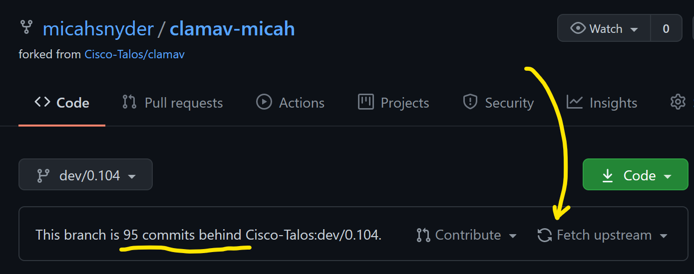
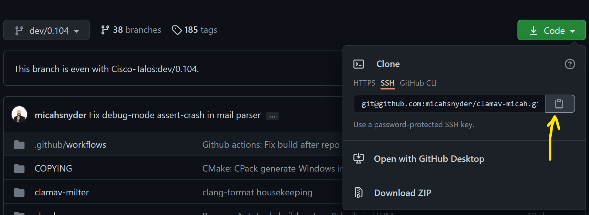

ClamAV

ClamAV is an open source (GPLv2) anti-virus toolkit, designed especially for e-mail scanning on mail gateways. It provides a number of utilities including a flexible and scalable multi-threaded daemon, a command line scanner and advanced tool for automatic database updates. The core of the package is an anti-virus engine available in a form of shared library.
Tip: ClamAV is not a traditional anti-virus or endpoint security suite. For a fully featured modern endpoint security suite, check out Cisco Secure Endpoint. See "related products", below, for more details.
ClamAV is brought to you by Cisco Systems, Inc.
Community Projects
ClamAV has a diverse ecosystem of community projects, products, and other tools that either depend on ClamAV to provide malware detection capabilities or supplement ClamAV with new features such as improved support for 3rd party signature databases, graphical user interfaces (GUI), and more.
Features
- ClamAV is designed to scan files quickly.
- Real time protection (Linux only). The ClamOnAcc client for the ClamD scanning daemon provides on-access scanning on modern versions of Linux. This includes an optional capability to block file access until a file has been scanned (on-access prevention).
- ClamAV detects millions of viruses, worms, trojans, and other malware, including Microsoft Office macro viruses, mobile malware, and other threats.
- ClamAV's bytecode signature runtime, powered by either LLVM or our custom bytecode interpreter, allows the ClamAV signature writers to create and distribute very complex detection routines and remotely enhance the scanner’s functionality.
- Signed signature databases ensure that ClamAV will only execute trusted signature definitions.
- ClamAV scans within archives and compressed files but also protects against archive bombs. Built-in archive extraction capabilities include:
- Zip (including SFX, excluding some newer or more complex extensions)
- RAR (including SFX, most versions)
- 7Zip
- ARJ (including SFX)
- Tar
- CPIO
- Gzip
- Bzip2
- DMG
- IMG
- ISO 9660
- PKG
- HFS+ partition
- HFSX partition
- APM disk image
- GPT disk image
- MBR disk image
- XAR
- XZ
- Microsoft OLE2 (Office documments)
- Microsoft OOXML (Office documments)
- Microsoft Cabinet Files (including SFX)
- Microsoft CHM (Compiled HTML)
- Microsoft SZDD compression format
- HWP (Hangul Word Processor documents)
- BinHex
- SIS (SymbianOS packages)
- AutoIt
- InstallShield
- ESTsoft EGG
- Supports Windows executable file parsing, also known as Portable Executables (PE) both 32/64-bit, including PE files that are compressed or obfuscated with:
- AsPack
- UPX
- FSG
- Petite
- PeSpin
- NsPack
- wwpack32
- MEW
- Upack
- Y0da Cryptor
- Supports ELF and Mach-O files (both 32 and 64-bit)
- Supports almost all mail file formats
- Support for other special files/formats includes:
- HTML
- RTF
- Files encrypted with CryptFF and ScrEnc
- uuencode
- TNEF (winmail.dat)
- Advanced database updater with support for scripted updates, digital signatures and DNS based database version queries
Disclaimer: Many of the above file formats continue to evolve. Executable packing and obfuscation tools in particular are constantly changing. We cannot guarantee that we can unpack or extract every version or variant of the listed formats.
License
ClamAV is licensed under the GNU General Public License, Version 2.
Supported platforms
Clam AntiVirus is highly cross-platform. The development team cannot test every OS, so we have chosen to test ClamAV using the two most recent Long Term Support (LTS) versions of each of the most popular desktop operating systems. Our regularly tested operating systems include:
- GNU/Linux
- Alpine
- 3.11 (64bit)
- Ubuntu
- 18.04 (64bit, 32bit)
- 20.04 (64bit)
- Debian
- 9 (64bit, 32bit)
- 10 (64bit, 32bit)
- CentOS
- 7 (64bit, 32bit)
- 8 (64bit)
- Fedora
- 30 (64bit)
- 31 (64bit)
- openSUSE
- Leap (64bit)
- Alpine
- UNIX
- FreeBSD
- 11 (64bit)
- 12 (64bit)
- macOS
- 10.13 High Sierra (x86_64)
- 10.15 Catalina (x86_64)
- 11.5 Big Sur (x86_64, arm64)
- FreeBSD
- Windows
- 7 (64bit, 32bit)
- 10 (64bit, 32bit)
Recommended System Requirements
The following minimum recommended system requirements are for using ClamScan or ClamD applications with the standard ClamAV signature database provided by Cisco.
Minimum recommended RAM for ClamAV:
- FreeBSD and Linux server edition: 3 GiB+
- Linux non-server edition: 3 GiB+
- Windows 7 & 10 32-bit: 3 GiB+
- Windows 7 & 10 64-bit: 3 GiB+
- macOS: 3 GiB+
Tip: Server environments, like Docker, as well as and embedded runtime environments are often resource constrained. We recommend at 3-4 GiB of RAM, but you may get by with less if you're willing to accept some limitations. You can find more information here.
Minimum recommended CPU for ClamAV:
- 1 CPU at 2.0 Ghz+
Minimum available hard disk space required:
For the ClamAV application we recommend having 5 GiB of free space available. This recommendation is in addition to the recommended disk space for each OS.
Note: The tests to determine these minimum requirements were performed on systems that were not running other applications. If other applications are being run on the system, additional resources will be required in addition to our recommended minimums.
Mailing Lists and Chat
Mailing Lists
If you have a trouble installing or using ClamAV try asking on our mailing lists. There are four lists available:
- clamav-announce (at) lists.clamav.net
- info about new versions, moderated.
- Subscribers are not allowed to post to this mailing list.
- clamav-users (at) lists.clamav.net
- user questions
- clamav-devel (at) lists.clamav.net
- technical discussions
- clamav-virusdb (at) lists.clamav.net
- database update announcements, moderated
You can subscribe and search the mailing list archives here.
To unsubscribe: Use the same form page that you used when you subscribed. Search at the bottom for "unsubscribe".
IMPORTANT: When you subscribe or unsubscribe, you will receive a confirmation email with a link that you must click on or else no action will occur. If you did not receive the confirmation email, check your spam folder.
Chat
You can join the community on our ClamAV Discord chat server.
Submitting New or Otherwise Undetected Malware
If you've got a virus which is not detected by the current version of ClamAV using the latest signature databases, please submit the sample for review at our website:
https://www.clamav.net/reports/malware
Likewise, if you have a benign file that is flagging as a virus and you wish to report a False Positive, please submit the sample for review at our website:
https://www.clamav.net/reports/fp
Related Products
Cisco Secure Endpoint (formerly AMP for Endpoints) is Cisco's cloud-based security suite for commercial and enterprise customers. Secure Endpoint is available for Windows, Linux, and macOS and provides superior malware detection capabilities, behavioral monitoring, dynamic file analysis, endpoint isolation, analytics, and threat hunting. Secure Endpoint sports a modern administrative web interface (dashboard).
Immunet is a cloud-based antivirus application for Windows that is free for non-commercial use. Immunet offers great malware detection efficacy but, as a completely free product, Immunet's does not have same features or the quality user experience that Secure Endpoint offers. There is an Immunet user forum but Cisco offers no official user support.

Installing ClamAV
Installing with a Package Manager
ClamAV is widely available from third party package managers for most operating systems. This is often the quickest way to install ClamAV. It will make also upgrades easier.
Check out the Packages page to find installation instructions for your system.
Installing with an Installer
Pre-compiled packages provided on the clamav.net downloads page have all external library dependencies statically compiled in.
These installers likely differ from packages provided by other packaging tools in that you will need to create and configure the freshclam.conf and clamd.conf files. You may also need to add a clamav service user account and adjust the permissions on the database directory. We hope to round out these sharp corners in the future and to make setup more convenient, but for now be advised that setup from one of these packages is a little bit more work than you may be used to.
If you're interested in learning how these packages were built, you can check out these development instructions.
Note: In the event that a vulnerability is found in one of the dependencies that may impact ClamAV, we will publish new packages with updated dependencies as soon as we're able.
Linux (.deb, .rpm)
Beginning with ClamAV 0.104, we offer Debian and RPM packages for x86_64 (64bit) and i686 (32bit) architectures. This will make it easier to get the latest version in the event that a package for your distribution is not readily available and you would prefer not to build ClamAV from source.
Note: These packages do not presently include
clamav-milter. You can help help us addclamav-milterto the packages by developing a Mussels recipe for building the libmilter.a static library and contributing it to our Mussels cookbook.
RPM packages (for CentOS, Redhat, Fedora, SUSE, etc.)
These are compiled on CentOS 7. They should be compatible with all RPM-based linux distributions running glibc version 2.17 or newer.
To install, download the package for your system use yum or dnf to install the package. For example:
sudo dnf install ~/Downloads/clamav-0.104.0-rc2.linux.x86_64.rpm
You can verify that the package was installed using:
dnf info clamav
This package installs to /usr/local.
Unlike packages provided by Debian or other distributions, this package does not presently include a preconfigured freshclam.conf, clamd.conf, database directory, or clamav user accounts for FreshClam and ClamD. You can follow these instructions to configure FreshClam and ClamD. You can follow these instructions to create the clamav user account for running FreshClam and ClamD services.
And uninstall the package with:
sudo dnf remove ~/Downloads/clamav-0.104.0-rc2.linux.x86_64.rpm
DEB packages (for Debian, Ubuntu, Mint, etc.)
These are compiled on Ubuntu 16.04, and have all external library dependencies statically compiled in. They should be compatible with all Debian-based linux distributions running glibc version 2.23 or newer.
sudo apt install ~/Downloads/clamav-0.104.0-rc2.libnux.x86_64.deb
You can verify that the package was installed using:
apt info clamav
This package installs to /usr/local.
Unlike packages provided by Debian or other distributions, this package does not presently include a preconfigured freshclam.conf, clamd.conf, database directory, or clamav user accounts for FreshClam and ClamD. You can follow these instructions to configure FreshClam and ClamD. You can follow these instructions to create the clamav user account for running FreshClam and ClamD services.
And uninstall the package with:
sudo apt remove clamav
macOS
Beginning with ClamAV 0.104, we offer a PKG installer for macOS. These are universal binaries built for Intel x86_64 and Apple M1 arm64 processors.
Disclaimer: The release materials for 0.104.0-rc2 are not signed or notarized. We are working on adding signing and notarization to our CI processes, but for now you may be unable to use this PKG installer on macOS Big Sur or newer.
To install, download the macOS .pkg installer. Double-click the installer and follow the directions.
This package installs to /usr/local/clamav. This is not in the default system PATH environment variable. You may wish to add /usr/local/clamav/bin and /usr/local/clamav/sbin to your PATH so you can run the ClamAV programs without entering the full path. To do this add this line to ~/.zshrc:
export PATH=/usr/local/clamav/bin:/usr/local/clamav/sbin:$PATH
Then run source ~/.zshrc or open a new terminal.
Unlike packages provided by Homebrew, this package does not presently include a preconfigured freshclam.conf, clamd.conf, or database directory. You can follow these instructions to configure FreshClam and ClamD.
macOS package installers do not provide a mechanism for automatically uninstalling the package. In the future, we hope to add a script to aid with uninstallation. But for now, to make it easier to remove, our macOS installer installs to /usr/local/clamav. To uninstall, all you need to do is run:
sudo rm -rf /usr/local/clamav
Windows
The ClamAV team provides official ClamAV builds for Windows on the ClamAV downloads page. You can choose between a traditional executable installer or a portable install ZIP package.
To use the executable installer, double-click the installer and follow the instructions.
To install from a ZIP package, unzip the portable install package to any directory.
Official ClamAV Docker Images
There are now official ClamAV images on Docker Hub. You can find the images on Docker Hub under clamav.
At present we offer images with builds of the latest development version. We call this "unstable". ClamAV 0.104 will be the first stable release that we'll publish on Docker Hub.. Once published 0.104.0+ will be available using a Docker image tag with the specific version number, or using "stable" to get the latest stable release.
Check out the Docker page to learn how to install and use ClamAV with Docker.
Installing from Source
If you need, you can also compile and install ClamAV from source:
What now?
Now that ClamAV is installed, you will want to customize your configuration and perhaps set up some scanning automation and alerting mechanisms.
Continue on to "Configuration"...
ClamAV Packages
Many Linux and Unix distributions offer one or more ClamAV packages to make it easy for you to install ClamAV.
These packages are usually well maintained but if you find an issue with one, please consider helping the volunteers that maintain the packages.
Disclaimer: ClamAV packages may vary somewhat from the upstream version. Some examples:
The database and application config paths may vary:
A default from-source install will go in
/usr/local, with:
- applications in
/usr/local/bin- daemons in
/usr/local/sbin- libraries in
/usr/local/lib- headers in
/usr/local/include- configs in
/usr/local/etc/- databases in
/usr/local/share/clamav/A Linux package install will probably go in
/usr, with:
- applications in
/usr/bin- daemons in
/usr/sbin- libraries in
/usr/lib- headers in
/usr/include- configs in
/etc/clamav- databases in
/var/lib/clamavAs of 0.103.x, a from-source install requires the user create a config for FreshClam, ClamD, and ClamAV-Milter in order to use each application. A package install, however, is likely to come pre-configured. Users may wish to modify the configs as needed.
Package installs sometimes carry extra patches for issues affecting their distribution, for issues the ClamAV developers haven't had time to fix or are unaware of, and for security issues when distributing older versions that are no longer maintained by the ClamAV developers.
Some distributions parcel up ClamAV components into separate packages. You don't necessarily need all of the packages. If this applies to your package system, you may need to review the applications described in the scanning instructions to understand which features you will need.
Acknowledgments: Thank you to all of the volunteers who maintain these packages! We appreciate your help!
The Packages
Debian
Debian splits up ClamAV into a selection of different packages.
Realistically, you probably only need to apt install clamav and probably apt install clamav-daemon. If you require support for scanning compressed RAR files you first need to enable the "non-free" archive.*
The full list of packages includes:
clamav- command-line interfaceclamav-base- base packageclamav-daemon- scanner daemonclamav-docs- documentationclamav-freshclam- virus database update utilityclamav-milter- sendmail integrationclamav-testfiles- test fileslibclamav-dev- development fileslibclamav9- librarylibclamunrar9- unrar support
*RAR Support: ClamAV's RAR support comes from UnRAR, which is open-source but not entirely free in so far as its license restricts users from reverse engineering it to create RAR archives. For this reason, it is bundled separately in the "non-free" archive. Enable it by adding "non-free" to/etc/apt/sources.list. Eg:
deb http://http.us.debian.org/debian stable main contrib non-freeThen you can install the RAR-plugin using:
apt install libclamunrar9
There are a variety of other ClamAV related projects as well. Run apt search clamav to see a larger list.
To test the installation, you can try to scan the test files in the clamav-testfiles package.
Note: Debian packages are maintained by Debian's ClamAV Team.
The package maintainers can be reached at clamav-devel at lists.alith.debian.org. More info at tracker.debian.org/pkg/clamav.
Patches: https://salsa.debian.org/clamav-team/clamav/tree/unstable/debian/patches
Ubuntu
Ubuntu's ClamAV packages are derived from the Debian packages (above). See the Debian instructions for installation details.
RAR Support: As with Debian, RAR support is not included in the base package. Users that desire RAR support will have to install
libclamunar9separately. Unlike with Debian, there is no need to enable "non-free" packages for this to work.
Note: Ubuntu packages are curated by Ubuntu Developers. Package source: https://packages.ubuntu.com/source/clamav
openSUSE
openSUSE provides two packages:
clamav- The clamav packageclamav-devel- The clamav package plus headers for software development.
RPM download
Find these packages at under http://download.opensuse.org/repositories/security Eg.:
- http://download.opensuse.org/repositories/security/openSUSE_Leap_15.3/x86_64/clamav-0.103.1-lp153.234.4.x86_64.rpm.mirrorlist
- http://download.opensuse.org/repositories/security/openSUSE_Leap_15.3/x86_64/clamav-devel-0.103.1-lp153.234.4.x86_64.rpm.mirrorlist
Use the update variant for openSUSE, add it to your installation as another repository using YaST or zypper and give it a higher priority (lower number) than the repository that delivers the official updates.
Tip: RPMs of new ClamAV versions for existing SUSE products are provided through the respective online update channels. As these packages have to go through QA, it usually takes some time for a new ClamAV source release to appear as an official RPM. For those who want the newest version, packages are available from the security project in the openSUSE Build Service.
Zypper
Install ClamAV with zypper:
zypper install -y clamav
Note: openSUSE packages are maintained by Reinhard Max.
EPEL: Fedora, RHEL, and CentOS
EPEL creates ClamAV packages for Fedora (as well as EPEL-enabled CentOS and RHEL). For more information on EPEL, visit their wiki.
To enable EPEL for CentOS:
dnf install -y epel-release
EPEL offers a selection of packages to install ClamAV:
clamd- The Clam AntiVirus Daemonclamav- End-user tools for the Clam Antivirus scannerclamav-data- Virus signature data for the Clam Antivirus scannerclamav-devel- Header files and libraries for the Clam Antivirus scannerclamav-lib- Dynamic libraries for the Clam Antivirus scannerclamav-milter- Milter module for the Clam Antivirus scannerclamav-update- Auto-updater for the Clam Antivirus scanner data-files
Most users will only need to run:
dnf install -y clamav clamd clamav-update
Tips
CentOS: On Community Enterprise Operating System (CentOS) the ClamAV package requires the Extra Packages for Enterprise Linux (EPEL) repository.
RHEL: On RedHat Enterprise Linux (RHEL) the EPEL release package has to be installed either manually or through RHN.
Fedora: Fedora packages can be found at https://src.fedoraproject.org/rpms/clamav
Fedora's packaging is more customized than most. Please review the RPM notes when troubleshooting your Fedora package configuration.
Gentoo
ClamAV is available in portage under /usr/portage/app-antivirus/clamav
To install, run:
emerge clamav
For more details, see the package entry on Portage.
FreeBSD, OpenBSD, NetBSD
Although all these systems offer the possibility to use ports or pkgsrc, you can install the pre-built package:
FreeBSD
FreeBSD offers two ClamAV ports (packages):
clamavclamav-lts
To install, run:
pkg install clamav
and
pkg install clamav-lts
respectively.
Note: For more details, see:
- https://www.freshports.org/security/clamav
- https://www.freshports.org/security/clamav-lts
OpenBSD
To install, run:
pkg_add clamav
NetBSD
To install, run:
pkgin install clamav
Solaris
OpenCSW is a community software project for Solaris 8+ on both Sparc and x86. It packages more than 2000 popular open source titles and they can all easily be installed with dependency handling via pkgutil which is modeled after Debian's apt-get.
pkgutil -i clamav
Note: The package can be found on OpenCSW though it is unfortuantely quite out-of-date.
Disclaimer: ClamAV is also no longer supported on Solaris because Solaris is proprietary, less commonly used, and difficult to work with. Future versions of ClamAV will depend on components written in the Rust programming language, which also does not support building directly on Solaris. It is likely that ClamAV will no longer work on Solaris in the future.
Slackware
You can download ClamAV builds for Slackware from https://slackbuilds.org/repository/14.2/system/clamav/
Download the package, and as root, install it like so (substituting the appropriate filename):
installpkg clamav.tar.gz
macOS
ClamAV can be easily installed on macOS using one of these popular package managers:
Homebrew
Install Homebrew if you don't already have it. Then run:
brew install clamav
Homebrew installs versioned packages to /usr/local/Cellar/<pacakge>/<version> with symlinks in /usr/local/opt/<pacakge> to the current version. Symlinks for ClamAV's executables will be placed in /usr/local/bin to add them to your PATH. ClamAV's config files will be placed in /usr/local/etc/clamav.
As with most other installation methods, you may need to do the following at a minimum before you can run freshclam, clamscan, or use clamdscan with clamd:
- Create
/usr/local/etc/clamav/freshclam.conffrom/usr/local/etc/clamav/freshclam.conf.sample. - Remove or comment-out the
Exampleline fromfreshclam.conf - Run
freshclamto download the latest malware definitions.
If you wish to run clamd you'll also need to create /usr/local/etc/clamav/clamd.conf from /usr/local/etc/clamav/clamd.conf.sample, and configure clamd.conf with Local/Unix socket settings (preferred), or TCP socket settings.
MacPorts
Install MacPorts if you don't already have it. Then run:
sudo port install clamav
MacPorts installs versioned packages to /opt/local/. ClamAV's config files will be placed in /opt/local/etc.
As with most other installation methods, you may need to do the following at a minimum before you can run freshclam, clamscan, or use clamdscan with clamd:
- Create
/opt/local/etc/freshclam.conffrom/opt/local/etc/freshclam.conf.sample. - Remove or comment-out the
Exampleline fromfreshclam.conf - Run
freshclamto download the latest malware definitions.
If you wish to run clamd you'll also need to create /opt/local/etc/clamd.conf from /opt/local/etc/clamd.conf.sample, and configure clamd.conf with Local/Unix socket settings (preferred), or TCP socket settings.
ClamAV in Docker
ClamAV can be run within a Docker container. This provides isolation from other processes by running it in a containerized environment. If new or unfamiliar with Docker, containers or cgroups see docker.com.
Memory (RAM) Requirements
Whether you're using the official ClamAV docker images or third party images that run ClamAV, you will need to ensure that you have enough RAM.
Recommended RAM for ClamAV (As of 2020/09/20):
- Minimum: 3 GiB
- Preferred: 4 GiB
Why is this much RAM required?
ClamAV uses upwards of 1.2 GiB of RAM simply to load the signature definitions into matching structures in the construct we call an "engine". This does not take into account any RAM required to process the files during the scanning process.
ClamAV uses upwards of 2.4 GiB of RAM for a short period each day when loading new signature definitions. When the clamd processs reloads the databases after an update, the default behavior is for ClamAV to build a new engine based on the updated signatures first. Once loaded and once all scans that use the old engine have completed, the old engine is unloaded. This process is called "concurrent reloading" and enables scans to continue during the reload. As a consequence, clamd will use twice the amount of RAM for a brief period. During the reload.
The freshclam process may also consume a sizeable chunk of memory when load-testing newly downloaded databases. It won't use quite as much as a clamd database reload, but it may still be enough to cause issues on some systems.
If your container does not have enough RAM you can expect that the OS (or Docker) may kill your clamd process. Within Docker, this may cause your container to become unresponsive. If you're observing issues with ClamAV failing or becoming unresponsive once a day, it is likely that your system does not have enough RAM to run ClamAV.
What can I do to minimize RAM usage?
clamd reload memory usage
You can minimize clamd RAM usage by setting ConcurrentDatabaseReload no in clamd.conf.
The downside is that clamd will block any new scans until reload is complete.
freshclam memory usage
You can disable freshclam database load testing to minimize RAM usage by setting TestDatabases no in freshclam.conf.
The downside here is a risk that a download may fail in an unexpected way and that freshclam will unknowingly keep the broken database, causing clamd to fail to load/reload the broken file.
The official images on Docker Hub
ClamAV image tags on Docker Hub follow these naming conventions.
All images come in two forms:
-
clamav/clamav:<version>: A release preloaded with signature databases.Using this container will save the ClamAV project some bandwidth. Use this if you will keep the image around so that you don't download the entire database set every time you start a new container. Updating with FreshClam from existing databases set does not use much data.
-
clamav/clamav:<version>_base: A release with no signature databases.Use this container only if you mount a volume in your container under
/var/lib/clamavto persist your signature database databases. This method is the best option because it will reduce data costs for ClamAV and for the Docker registry, but it does require advanced familiarity with Linux and Docker.Caution: Using this image without mounting an existing database directory will cause FreshClam to download the entire database set each time you start a new container.
There are a selection of tags to help you get the versions you need:
-
clamav/clamav:<MAJOR.MINOR.PATCH>_baseandclamav/clamav:<MAJOR.MINOR.PATCH>: This is a tag for a specific image for a given patch version. The "base" version of this image will never change, and the non-base version will only ever be updated to have newer signature databases.If we need to publish a new image to resolve CVE's in the underlying dependencies, then another image will be created with a build-number suffix.
For example:
0.104.2-2_baseis a new image to resolve security issues found in busybox in the0.104.2_baseimage. -
clamav/clamav:<MAJOR.MINOR>_baseandclamav/clamav:<MAJOR.MINOR>: This is a tag for the latest patch version of ClamAV 0.104. When the image for a new patch version is created, this tag will be updated so that it always points to the latest image for ClamAV 0.104. -
clamav/clamav:stable_baseandclamav/clamav:stable: These tags point to the latest stable patch version image. We use the word "stable" to make it clear that these do not track the latest commit in Github. As of 2022-02-15, that makes these equivalent to0.104and0.104_base. When 0.105 is released, these will be updated to track0.105and0.105_base. -
clamav/clamav:latest_baseandclamav/clamav:latest: These are the same asclamav/clamav:stable_baseandclamav/clamav:stable. They exist because many users expect all images to have a "latest". -
clamav/clamav:unstable_baseandclamav/clamav:unstable: These tags point to the latest commit in themainbranch on github.com/Cisco-Talos/clamav. Provided something doesn't go wrong, these are updated every evening that something changes in the ClamAV Git repository.
Image Selection Recommendations
Instead of choosing the specific image for a patch release, choose the tag for a feature release, such as clamav/clamav:0.104 or clamav/clamav:0.104_base.
Only select a "latest" or "stable" tags if you're comfortable with the the risk involved with updating to a new feature release right away without evaluating it first.
Choose the _base tag and set up a volume to persist your signature databases. This will save us and you bandwidth. You may choose to set up a container that has the Freshclam daemon enabled, and have multiple others that do not. The ClamD daemon in the all images will occasionally check to see if there are newer signatures in the mounted volume and will reload the databases as needed.
ClamAV uses quite a bit of RAM to load the signature databases into memory. 2GB may be insufficient. Configure your containers to have 4GB of RAM.
End of Life
The ClamAV Docker images are subject to ClamAV's End-of-Life (EOL) policy. After EOL for a given feature release, those images will no longer be updated and may be unable to download signature updates.
Building the ClamAV image
While it is recommended to pull the image from our Docker Hub registry, some may want to build the image locally instead.
To do this, you will need to get the Dockerfile and the supporting scripts/ directory from the clamav-docker Git repository. Be sure to select the correct one for this ClamAV release.
Tip: For unreleased ClamAV versions, such as when building from the
maingit branch, you should select the files from theclamav-dockere/clamav/unstable/<distro>directory.
Place the Dockerfile and scripts/ directory in the ClamAV source directory.
Then you can build the image. For example, run:
docker build --tag "clamav:TICKET-123" .
in the current directory. This will build the ClamAV image and tag it with the name "clamav:TICKET-123". Any name can generally be used and it is this name that needs to be referred to later when running the image.
Running ClamD
To run clamd in a Docker container, first, an image either has to be built or pulled from a Docker registry.
Running ClamD using the official ClamAV images from Docker Hub
To pull the ClamAV "unstable" image from Docker Hub, run:
docker pull clamav/clamav:unstable
Tip: Substitute
unstablewith a different version as needed.
To pull and run the official ClamAV images from the Docker Hub registry, try the following command:
docker run \
--interactive \
--tty \
--rm \
--name "clam_container_01" \
clamav/clamav:unstable
The above creates an interactive container with the current TTY connected to it. This is optional but useful when getting started as it allows one to directly see the output and, in the case of clamd, send ctrl-c to close the container. The --rm parameter ensures the container is cleaned up again after it exits and the --name parameter names the container, so it can be referenced through other (Docker) commands, as several containers of the same image can be started without conflicts.
Note: Pulling is not always required.
docker runwill pull the image if it cannot be found locally.docker run --pull alwayswill always pull beforehand to ensure the most up-to-date container is being used. Do not use--pull alwayswith the larger ClamAV images.
Tip: It's common to see
-itinstead of--interactive --tty.
Tip: It's common to also publish (forward) the ClamAV TCP port to the local host to use the TCP socket using
--publish 3310:3310in thedocker runcommand
Running ClamD using a Locally Built Image
You can run a container using an image built locally (see "Building the ClamAV Image"). Just run:
docker run -it --rm \
--name "clam_container_01" \
clamav:TICKET-123
Persisting the virus database (volume)
The virus database in /var/lib/clamav is by default unique to each container and thus is normally not shared. For simple setups this is fine, where only one instance of clamd is expected to run in a dockerized environment. However some use cases may want to efficiently share the database or at least persist it across short-lived ClamAV containers.
To do so, you have two options:
-
Create a Docker volume using the
docker volumecommand. Volumes are completely managed by Docker and are the best choice for creating a persistent database volume.For example, create a "clam_db" volume:
docker volume create clam_dbThen start one or more containers using this volume. The first container to use a new database volume will download the full database set. Subsequent containers will use the existing databases and may update them as needed:
docker run -it --rm \ --name "clam_container_01" \ --mount source=clam_db,target=/var/lib/clamav \ clamav/clamav:unstable_base -
Create a Bind Mount that maps a file system directory to a path within the container. Bind Mounts depend on the directory structure, permissions, and operating system of the Docker host machine.
Run the container with these arguments to mount the a directory from your host environment as a volume in the container.
--mount type=bind,source=/path/to/databases,target=/var/lib/clamavWhen doing this, it's best to use the
<version>_baseimage tags so as to save on bandwith. E.g.:docker run -it --rm \ --name "clam_container_01" \ --mount type=bind,source=/path/to/databases,target=/var/lib/clamav \ clamav/clamav:unstable_baseDisclaimer: When using a Bind Mount, the container's entrypoint script will change ownership of this directory to its "clamav" user. This enables FreshClam and ClamD with the required permissions to read and write to the directory, though these changes will also affect those files on the host.
If you're thinking about running multiple containers that share a single database volume, here are some notes on how this might work.
Running Clam(D)Scan
Scanning files using clamscan or clamdscan is possible in various ways with Docker. This section briefly describes them, but the other sections of this document are best read before hand to better understand some of the concepts.
One important aspect is however to realize that Docker by default does not have access to any of the hosts files. And so to scan these within Docker, they need to be mounted with a bind mount to be made accessible.
For example, running the container with these arguments ...
--mount type=bind,source=/path/to/scan,target=/scandir
--mount type=bind,source=/path/to/scan,target=/scandir
... would make the hosts file/directory /path/to/scan available in the container as /scandir and thus invoking clamscan would thus be done on /scandir.
Note that while technically possible to run either scanners via docker exec this is not described as it is unlikely the container has access to the files to be scanned.
ClamScan
Using clamscan outside of the Docker container is how normally clamscan is invoked. To make use of the available shared dockerized resources however, it is possible to expose the virus database and share that for example. E.g. it could be possible to run a Docker container with only the freshclam daemon running, and share the virus database directory /var/lib/clamav. This could be useful for file servers for example, where only clamscan is installed on the host, and freshclam is managed in a Docker container.
Note: Running the
freshclamdaemon separated fromclamdis less recommended, unless theclamdsocket is shared withfreshclamasfreshclamwould not be able to informclamdof database updates.
Dockerized ClamScan
To run clamscan in a Docker container, the Docker container can be invoked as:
docker run -it --rm \
--mount type=bind,source=/path/to/scan,target=/scandir \
clamav/clamav:unstable \
clamscan /scandir
However, this will use whatever signatures are found in the image, which may be slightly out of date. If using clamscan in this way, it would be best to use a database volume that is up-to-date so that you scan with the latest signatures. E.g.:
docker run -it --rm \
--mount type=bind,source=/path/to/scan,target=/scandir \
--mount type=bind,source=/path/to/databases,target=/var/lib/clamav \
clamav/clamav:unstable_base \
clamscan /scandir
ClamDScan
As with clamscan, clamdscan can also be run when installed on the host, by connecting to the dockerized clamd. This can be done by either pointing clamdscan to the exposed TCP/UDP port or unix socket.
Dockerized ClamDScan
Running both clamd and clamdscan is also easily possible, as all that is needed is the shared socket between the two containers. The only cavaet here is to:
- mount the files to be scanned in the container that will run
clamd, or - mount the files to be scanned in the container that will
clamdscanrun if usingclamdscan --stream. The--streamoption will be slower, but enables submitting files from a different machine on a network.
For example:
docker run -it --rm \
--mount type=bind,source=/path/to/scan,target=/scandir \
--mount type=bind,source=/var/lib/docker/data/clamav/sockets/,target=/run/clamav/ \
clamav/clamav:unstable
docker run -it --rm \
--mount type=bind,source=/path/to/scan,target=/scandir \
--mount type=bind,source=/var/lib/docker/data/clamav/sockets/,target=/run/clamav/ \
clamav/clamav:unstable_base \
clamdscan /scandir
Controlling the container
The ClamAV container actually runs both freshclam and clamd daemons by default. Optionally available to the container is ClamAV's milter daemon. To control the behavior of the services started within the container, the following flags can be passed to the docker run command with the --env (-e) parameter.
- CLAMAV_NO_CLAMD [true|false] Do not start
clamd. (default:clamddaemon is started) - CLAMAV_NO_FRESHCLAMD [true|false] Do not start the
freshclamdaemon. (default:freshclamdaemon is started) - CLAMAV_NO_MILTERD [true|false] Do not start the
clamav-milterdaemon. (default:clamav-milterdaemon is not started) - CLAMD_STARTUP_TIMEOUT [integer] Seconds to wait for
clamdto start. (default: 1800) - FRESHCLAM_CHECKS [integer]
freshclamdaily update frequency. (default: once per day)
So to additionally also enable clamav-milter, the following flag can be added:
--env 'CLAMAV_NO_MILTERD=false'
Further more, all of the configuration files that live in /etc/clamav can be overridden by doing a volume-mount to the specific file. The following argument can be added for this purpose. The example uses the entire configuration directory, but this can be supplied multiple times if individual files deem to be replaced.
--mount type=bind,source=/full/path/to/clamav/,target=/etc/clamav
Note: Even when disabling the
freshclamdaemon,freshclamwill always run at least once during container startup if there is no virus database. While not recommended, the virus database location itself/var/lib/clamav/could be a persistent Docker volume. This however is slightly more advanced and out of scope of this document.
Connecting to the container
Executing commands within a running container
To connect to a running ClamAV container, docker exec can be used to run a command on an already running container. To do so, the name needs to be either obtained from docker ps or supplied during container start via the --name parameter. The most interesting command in this case can be clamdtop.
docker exec --interactive --tty "clamav_container_01" clamdtop
Alternatively, a shell can be started to inspect and run commands within the container as well.
docker exec --interactive --tty "clamav_container_01" /bin/sh
Unix sockets
The default socket for clamd is located inside the container as /tmp/clamd.sock and can be connected to when exposed via a Docker volume mount. To ensure, that clamd within the container can freely create and remove the socket, the path for the socket is to be volume-mounted, to expose it for others on the same host to use. The following volume can be used for this purpose. Do ensure that the directory on the host actually exists and clamav inside the container has permission to access it. Caution is required when managing permissions, as incorrect permission could open clamd for anyone on the host system.
--mount type=bind,source=/var/lib/docker/data/clamav/sockets/,target=/tmp/
Note: If you override the
LocalSocketoption with a customclamd.confconfig file, then you may find theclamd.sockfile in a different location.
With the socket exposed to the host, any other service can now talk to clamd as well. If for example clamdtop where installed on the local host, calling
clamdtop "/var/lib/docker/data/clamav/sockets/clamd.sock"
should work just fine. Likewise, running clamdtop in a different container, but sharing the socket will equally work. While clamdtop works well as an example here, it is of course important to realize, this can also be used to connect a mail server to clamd.
TCP
ClamAV in the official Docker images is configured to listen for TCP connections on these ports:
clamd: 3310clamav-milter: 7357
While clamd and clamav-milter will listen on the above TCP ports, Docker does not expose these by default to the host. Only within containers can these ports be accessed. To expose, or "publish", these ports to the host, and thus potentially over the (inter)network, the --publish (or --publish-all) flag to docker run can be used. While more advanced/secure mappings can be done as per documentation, the basic way is to --publish [<host_port>:]<container_port> to make the port available to the host.
--publish 13310:3310 \
--publish 7357
The above would thus publish:
clamdport3310as13310on the hostmilterport7357as a random to the host. The random port can be inspected viadocker ps.
But if you're just running one ClamAV container, you probably will just want to use the default port numbers, which are the same port numbers suggested in the clamd.conf.sample file provided with ClamAV:
--publish 3310:3310 \
--publish 7357:7357
Warning: Extreme caution is to be taken when using
clamdover TCP as there are no protections on that level. All traffic is un-encrypted. Extra care is to be taken when using TCP communications.
Container ClamD health-check
Docker has the ability to run simple ping checks on services running inside containers. If clamd is running inside the container, Docker will on occasion send a ping to clamd on the default port and wait for the pong from clamd. If clamd fails to respond, Docker will treat this as an error. The healthcheck results can be viewed with docker inspect.
Performance
The performance impact of running clamd in Docker is negligible. Docker is in essence just a wrapper around Linux's cgroups and cgroups can be thought of as chroot or FreeBSD's jail. All code is executed on the host without any translation. Docker does however do some isolation (through cgroups) to isolate the various systems somewhat.
Of course, nothing in life is free, and so there is some overhead. Disk-space being the most prominent one. The Docker container might have some duplication of files for example between the host and the container. Further more, also RAM memory may be duplicated for each instance, as there is no RAM-deduplication. Both of which can be solved on the host however. A filesystem that supports disk-deduplication and a memory manager that does RAM-deduplication.
The base container image in itself is already quite small 80 / 225 MB (compressed/uncompressed) at the time of this writing, this cost is still very tiny, where the advantages are very much worth the cost in general.
The container including the virus database is about 300 / 456 MB (compressed/uncompressed) at the time of this writing.
Bandwidth
Please, be kind when using 'free' bandwidth, both for the virus databases but also the Docker registry. Try not to download the entire database set or the larger ClamAV database images on a regular basis.
Advanced container configurations
Multiple containers sharing the same mounted databases
You can run multiple containers that share the same database volume, but be aware that the FreshClam daemons on each would compete to update the databases. Most likely, one would update the databases and trigger its ClamD to load the new databases, while the others would be oblivious to the new databases and would continue with the old signatures until the next ClamD self-check.
This is fine, honestly. It won't take that long before the new signatures are detected by ClamD's self-check and the databases are reloaded automatically.
To reload the databases on all ClamD containers immediately after an update, you could disable the FreshClam daemon when you start the containers. Later, use docker exec to perform an update and again as needed to have ClamD load updated databases.
Note: This really isn't necessary but you could do this if you wish.
Exactly how you orchestrate this will depend on your environment. You might do something along these lines:
-
Create a "clam_db" volume, if you don't already have one:
docker volume create clam_db -
Start your containers:
docker run -it --rm \ --name "clam_container_01" \ --mount source=clam_db,target=/var/lib/clamav \ --env 'CLAMAV_NO_FRESHCLAMD=true' \ clamav/clamav:0.104_baseWait for the first one to download the databases (if it's a new database volume). Then start more:
docker run -it --rm \ --name "clam_container_02" \ --mount source=clam_db,target=/var/lib/clamav \ --env 'CLAMAV_NO_FRESHCLAMD=true' \ clamav/clamav:0.104_base -
Check for updates, as needed:
docker exec -it clam_container_01 freshclam --on-update-execute=EXIT_1 || \ if [ $? == 1 ]; then \ docker exec -it clam_container_01 clamdscan --reload; \ docker exec -it clam_container_02 clamdscan --reload; \ fi
Building ClamAV with CMake (v0.104 and newer)
The following are instructions to build ClamAV version 0.104 and newer using CMake.
Tip: If you wish to build ClamAV version 0.103 or older from source, follow these instructions to build ClamAV using Autotools.
- Building ClamAV with CMake (v0.104 and newer)
Note: Some of the dependencies are optional if you elect to not build all of the command line applications, or elect to only build the libclamav library. Specifically:
- libcurl: required for libfreshclam, freshclam, clamsubmit, clamonacc
- ncurses: required for clamdtop
For more information about customized builds and which dependencies can be skipped, please see the
INSTALL.mddocument accompanying the source code.
Install prerequisites
Note: Some of the instructions below rely on Python 3's Pip package manager to install CMake. This is because some distributions do not provide a new enough version of CMake required to build ClamAV.
Tip: The Python 3
pytestpackage is recommended in the instructions below in case the unit tests fail so that the test output is easy to read. You're welcome to skip it. However, if you have Python 2'spytestinstalled but not Python 3'spytest, the tests may fail to run.
Alpine
As root or with sudo, run:
apk update && apk add \
`# install tools` \
g++ gcc gdb make cmake py3-pytest python3 valgrind \
`# install clamav dependencies` \
bzip2-dev check-dev curl-dev json-c-dev libmilter-dev libxml2-dev \
linux-headers ncurses-dev openssl-dev pcre2-dev zlib-dev
Version 0.105+: install the Rust toolchain. The best option is to install the Rust toolchain using rustup your Rust toolchain. Alpine users on the latest release may also find an adequate Rust toolchain with:
apk add cargo rust
Redhat / Centos / Fedora
For RHEL 8 or Centos Stream, you will probably need to run this to enable EPEL & PowerTools.
As root or with sudo, run:
dnf install -y epel-release
dnf install -y dnf-plugins-core
dnf install -y https://dl.fedoraproject.org/pub/epel/epel-release-latest-8.noarch.rpm
dnf config-manager --set-enabled PowerTools | \
dnf config-manager --set-enabled powertools | true
As root or with sudo, run:
dnf install -y \
`# install tools` \
gcc gcc-c++ make python3 python3-pip valgrind \
`# install clamav dependencies` \
bzip2-devel check-devel json-c-devel libcurl-devel libxml2-devel \
ncurses-devel openssl-devel pcre2-devel sendmail-devel zlib-devel
Note: If you get
dnf: command not found, useyuminstead.
As a regular user, run:
python3 -m pip install --user cmake pytest
Tip: If you don't have a user account, e.g. in a Docker container, run:
python3 -m pip install cmake pytest
Version 0.105+: install the Rust toolchain. The best option is to install the Rust toolchain using rustup your Rust toolchain. Centos and RHEL users are unlikely to find an adequate Rust toolchain through the distribution's package manager. Fedora users that are unable or unwilling to use rustup may have luck with:
dnf install -y cargo rust
SUSE / openSUSE
As root or with sudo, run:
zypper install -y \
`# install tools` \
gcc gcc-c++ make python3 valgrind \
`# install clamav dependencies` \
libbz2-devel check-devel libjson-c-devel libcurl-devel libxml2-devel \
ncurses-devel libopenssl-devel pcre2-devel sendmail-devel zlib-devel \
cmake python-pytest
Tip: If you you're on an older release and if the
cmakeprovided by your release is too old, then you may need to removecmake, installpython3-pip, and then installcmakelike this:python3 -m pip install --user cmake
Version 0.105+: install the Rust toolchain. The best option is to install the Rust toolchain using rustup your Rust toolchain. openSUSE users that are unable or unwilling to use rustup may have luck with:
zypper install -y cargo rust
Ubuntu / Debian
As root or with sudo, run:
apt-get update && apt-get install -y \
`# install tools` \
gcc make pkg-config python3 python3-pip python3-pytest valgrind \
`# install clamav dependencies` \
check libbz2-dev libcurl4-openssl-dev libjson-c-dev libmilter-dev \
libncurses5-dev libpcre2-dev libssl-dev libxml2-dev zlib1g-dev \
cmake python-pytest
Tip: If you you're on an older release and if the
cmakeprovided by your release is too old, then you may need to removecmake, installpython3-pip, and then installcmakelike this:python3 -m pip install --user cmake
Version 0.105+: install the Rust toolchain. The best option is to install the Rust toolchain using rustup your Rust toolchain. Debian users are unlikely to find an adequate Rust toolchain through the distribution's package manager. Ubuntu users will have better luck. At the time of writing, even Ubuntu 18.04 appears to have relatively recent Rust tools available (1.57.0, where the latest security patch for rustc is version 1.58.1). Debian and Ubuntu users may install the Rust toolchain with:
apt-get install -y cargo rustc
Note: Debian and Ubuntu chose to call it
rustcand notrust, like the others. Ubuntu users may instead installrust-allfor a few additional Rust development tools that you would normally install throughrustup. Therust-allpackage does not appear to exist for Debian 11 (bullseye).
macOS
The following instructions require you to install HomeBrew to install tools and library dependencies.
brew update
packages=(
# install tools
python3 cmake
# install clamav dependencies
bzip2 check curl-openssl json-c libxml2 ncurses openssl@1.1 pcre2 zlib
)
for item in "${packages[@]}"; do
brew install $item || true; brew upgrade $item || brew upgrade $item
done
python3 -m pip install --user cmake pytest
Note: You may also need to install
pkg-configif not already present on your system. You can use Homebrew to do this with:brew install pkg-config
Version 0.105+: install the Rust toolchain. The best option is to install the Rust toolchain using rustup your Rust toolchain.
FreeBSD
As root or with sudo, run:
pkg install -y \
`# install tools` \
gmake cmake pkgconf py38-pip python38 \
`# install clamav dependencies` \
bzip2 check curl json-c libmilter libxml2 ncurses pcre2
Now as a regular user, run:
python3.8 -m pip install --user pytest
Tip: If you don't have a user account, e.g. in a Docker container, run:
python3 -m pip install pytest
Version 0.105+: install the Rust toolchain. The best option is to install the Rust toolchain using rustup . FreeBSD users may find an adequate version using the package manager to install the Rust toolchain, depending on their release. FreeBSD users may install the Rust toolchain with:
pkg install -y rust
Install Rust toolchain
Starting with ClamAV v0.105, a Rust toolchain is required to compile portions of libclamav. You can install the appropriate toolchain for your development environment by following the instructions on the rustup website. This ensures that you have the most up-to-date compiler available at the time of installation; keep your toolchain updated for new features and bug/security fixes by periodically executing: rustup update.
Building ClamAV requires, at a minimum, Rust compiler version 1.56, as it relies on features introduced in the Rust 2021 Edition.
Depending on your target environment, compilers may be manually installed without downloading and executing the rustup script. Some platforms (e.g., Alpine Linux) provide packages that are recent-enough to build ClamAV. However, some Linux distributions such as CentOS, provide no package, or toolchains that are too old. For these platforms, if you are unable or unwilling to utilize rustup, you may download and install prebuilt toolchain binaries directly from rust-lang.org.
Adding new system user and group
If installing to the system, and if you intend to run freshclam or clamd as as service, you should create a service account before compiling and installing ClamAV.
Follow these steps to create a service account.
Download the source code
Download the source from the clamav.net downloads page.
Extract the archive:
tar xzf clamav-[ver].tar.gz
cd clamav-[ver]
Build ClamAV
First, make a "build" subdirectory. This will enable you to easily delete your build files if something goes wrong and you need to re-configure and try again.
mkdir build && cd build
Next, select the build options you desire. For a full list of configuration options, see the "Custom CMake options" section in the INSTALL.md file included with the source code.
To help you get started, here are some popular build configurations.
The Default Build
The default build type is RelWithDebInfo, that is "Release mode with Debugging symbols". It will install to /usr/local.
cmake ..
cmake --build .
ctest
sudo cmake --build . --target install
Tip: If building for macOS, you may need to override the system provided LibreSSL with the OpenSSL you installed using Homebrew. For example:
cmake .. \ -D CMAKE_INSTALL_PREFIX=/usr/local/clamav \ -D OPTIMIZE=OFF \ -D OPENSSL_ROOT_DIR=/usr/local/opt/openssl@1.1/ \ -D OPENSSL_CRYPTO_LIBRARY=/usr/local/opt/openssl@1.1/lib/libcrypto.1.1.dylib \ -D OPENSSL_SSL_LIBRARY=/usr/local/opt/openssl@1.1/lib/libssl.1.1.dylib make sudo make install
A Linux Distribution-style Build
This build type mimics the layout you may be familiar with if installing a ClamAV package on Debian, Ubuntu, Alpine, and some other distributions:
cmake .. \
-D CMAKE_INSTALL_PREFIX=/usr \
-D CMAKE_INSTALL_LIBDIR=lib \
-D APP_CONFIG_DIRECTORY=/etc/clamav \
-D DATABASE_DIRECTORY=/var/lib/clamav \
-D ENABLE_JSON_SHARED=OFF
cmake --build .
ctest
sudo cmake --build . --target install
Using the above example:
-
CMAKE_INSTALL_PREFIX- The install "prefix" will be/usr. -
CMAKE_INSTALL_LIBDIR- The library directory will belib(i.e./usr/lib).This may be the default anyways, but you may want to specify if CMake tries to install to
lib64and iflib64is not desired. -
APP_CONFIG_DIRECTORY- The config directory will be/etc/clamav.Note: This absolute path is non-portable.
-
DATABASE_DIRECTORY- The database directory will be/var/lib/clamav.Note: This absolute path is non-portable.
Tip: Setting
ENABLE_JSON_SHARED=OFFis preferred, but it will require json-c version 0.15 or newer unless you build json-c yourself with custom options. If json-c 0.15+ is not available to you, you may omit the option and just use the json-c shared library. But be warned that downstream applications which uselibclamav.somay crash if they also use a different JSON library.
Some other popular configuration options include:
-
CMAKE_INSTALL_DOCDIR- Specify exact documentation subdirectory, relative to the install prefix. The default may vary depending on your system and how you install CMake.E.g.,
-D CMAKE_INSTALL_DOCDIR=share/doc/packages/clamav -
CMAKE_SKIP_RPATH- If enabled, no RPATH is built into anything. This may be required when building packages for some Linux distributions. See the CMake wiki for more detail about CMake's RPATH handling.E.g.,
-D CMAKE_SKIP_RPATH=ON
Please see the CMake documentation for more instructions on how to customize the install paths.
A Build for Development
This suggested development configuration generates a Ninja-based build system instead of the default Makefile-based build system. Ninja is faster than Make, but you will have to install "ninja" (or "ninja-build"). With the following commands, ClamAV will be compiled in Debug mode with optimizations disabled. It will install to an "install" subdirectory and SystemD integration is disabled so that sudo is not required for the install and SystemD unit files are not installed to the system. This build also enables building a static libclamav.a library as well as building the example applications.
cmake .. -G Ninja \
-D CMAKE_BUILD_TYPE=Debug \
-D OPTIMIZE=OFF \
-D CMAKE_INSTALL_PREFIX=`pwd`/install \
-D ENABLE_EXAMPLES=ON \
-D ENABLE_STATIC_LIB=ON \
-D ENABLE_SYSTEMD=OFF
cmake --build .
ctest --verbose
cmake --build . --target install
You can find additional instructions in our Development chapter.
About the tests
ClamAV's public test suite is run using ctest. On Linux systems, our build system will detect if you have Valgrind. If installed, each test will run a second time using Valgrind to check for leaks.
If a test fails, please report the issue on GitHub. You will find .log files for each of the tests in the build/unit_tests directory. The output from ctest --verbose may give us enough information, but if not it could be helpful to zip up the .log files and attach them to the ticket.
Un-install
CMake doesn't provide a simple command to uninstall. However, CMake does build an install_manifest.txt file when you do the install. You can use the manifest to remove the installed files.
You will find the manifest in the directory where you compiled ClamAV. If you followed the recommendations (above), then you will find it at <clamav source directory>/build/install_manifest.txt.
Feel free to inspect the file so you're comfortable knowing what you're about to delete.
Open a terminal and cd to that <clamav source directory>/build directory. Then run:
xargs rm < install_manifest.txt
This will leave behind the directories, and will leave behind any files added after install including the signature databases and any config files. You will have to delete these extra files yourself.
Tip: You may need to use
sudo, depending on where you installed to.
What now?
Now that ClamAV is installed, you will want to customize your configuration and perhaps set up some scanning automation and alerting mechanisms.
Continue on to "Configuration"...
Building ClamAV with Autotools (v0.103 and older)
The following are instructions to build ClamAV version 0.103 and older using Autotools.
Note: Some of the dependencies are optional if you elect to not build all of the command line applications, or elect to only build the libclamav library. Specifically:
- libcurl: required for libfreshclam, freshclam, clamsubmit, clamonacc
- json-c: required for clamsubmit, optional for libclamav
- ncurses: required for clamdtop
Install prerequisites
Alpine
As root or with sudo, run:
apk update && apk add \
`# install tools` \
g++ gcc gdb make valgrind \
`# install clamav dependencies` \
bzip2-dev check-dev curl-dev json-c-dev libmilter-dev libxml2-dev \
linux-headers ncurses-dev openssl-dev pcre2-dev zlib-dev
Redhat / Centos / Fedora
For Centos 8, you will probably need to run this to enable EPEL & PowerTools.
As root or with sudo, run:
dnf install -y epel-release
dnf install -y dnf-plugins-core
dnf install -y https://dl.fedoraproject.org/pub/epel/epel-release-latest-8.noarch.rpm
dnf config-manager --set-enabled PowerTools | \
dnf config-manager --set-enabled powertools | true
As root or with sudo, run:
dnf install -y \
`# install tools` \
gcc gcc-c++ make valgrind \
`# install clamav dependencies` \
bzip2-devel check-devel json-c-devel libcurl-devel libxml2-devel \
ncurses-devel openssl-devel pcre2-devel sendmail-devel zlib-devel
Note: If you get
dnf: command not found, useyuminstead.
Tip: You need to run
autogen.shif you're not building from a release tarball from clamav.net. If so, visit the developer section to find out what packages are required to runautogen.sh
Ubuntu / Debian
As root or with sudo, run:
apt-get update && apt-get install -y \
`# install tools` \
gcc make pkg-config valgrind \
`# install clamav dependencies` \
check libbz2-dev libcurl4-openssl-dev libjson-c-dev libmilter-dev \
libncurses5-dev libpcre2-dev libssl-dev libxml2-dev zlib1g-dev
Tip: You need to run
autogen.shif you're not building from a release tarball from clamav.net. If so, visit the developer section to find out what packages are required to runautogen.sh
macOS
The following instructions require you to install HomeBrew to install tools and library dependencies.
# Install XCode's Command Line Tools
xcode-select --install
brew update
packages=(
# install tools
autoconf automake m4
# install clamav dependencies
bzip2 check curl-openssl json-c libxml2 ncurses openssl@1.1 pcre2 zlib
)
for item in "${packages[@]}"; do
brew install $item || true; brew upgrade $item || brew upgrade $item
done
FreeBSD
As root or with sudo, run:
pkg install -y \
`# install tools` \
gmake pkgconf \
`# install clamav dependencies` \
bzip2 check curl json-c libmilter libxml2 ncurses pcre2
Adding new system user and group
If installing to the system, and if you intend to run freshclam or clamd as as service, you should create a service account before compiling and installing ClamAV.
Follow these steps to create a service account.
Download the source code
Download the source from the clamav.net downloads page.
Extract the archive:
tar xzf clamav-[ver].tar.gz
cd clamav-[ver]
Build ClamAV
First, make a "build" subdirectory. This will enable you to easily delete your build files if something goes wrong and you need to re-configure and try again.
mkdir build && cd build
Note: The instructions in this page assume you're building from our source
clamav-[ver].tar.gzfile. If you aren't, you may need to install extra build tools (autoconf, automake, m4, libtool, and pkg-config/pkgconfig/pkgconf) then run:../autogen.sh
Next, select the build options you desire. For a full list of configuration options, run:
../configure --help
To help you get started, here are some popular build configurations.
The Default Build
The default build type is "RelWithDebInfo", that is "Release mode with Debugging symbols". It will install to /usr/local.
../configure
make
make check VG=1
sudo make install
A Linux Distribution-style Build
This build type mimics the layout you may be familiar with if installing a ClamAV package on Debian, Ubuntu, Alpine, and some other distributions. This will be a "release build" (no debugging symbols, optimizations enabled) and will install to /usr. The config directory will be /etc/clamav and the database directory will be /var/lib/clamav.
../configure \
--prefix=/usr
--sysconfdir=/etc/clamav \
--with-dbdir=/var/lib/clamav \
--with-libjson-static=/path/to/libjson-c.a \
--enable-milter
make
make check VG=1
sudo make install
Note: Setting
ENABLE_JSON_SHARED=OFFis preferred, but it will require json-c version 0.15 or newer. If json-c 0.15+ is not available to you, you may omit the option and just use the json-c shared library. But be warned that downstream applications which uselibclamav.somay crash if they also use a different JSON library.
A Build for Development
With the following commands, ClamAV will be compiled with debugging symbols and with optimizations disabled. It will install to an "install" subdirectory and SystemD integration is disabled so that sudo is not required for the install and SystemD unit files are not installed to the system.
CFLAGS="-Wall -Wextra -ggdb -O0" CXXFLAGS="-Wall -Wextra -ggdb -O0" ../configure \
--prefix=`pwd`/install \
--with-systemdsystemunitdir=no
make -j12
make check VG=1
sudo make install
About the tests
ClamAV's public test suite is run using make check. On Linux systems, the VG=1 argument will enable extra tests that use Valgrind to check for leaks.
If a test fails, please report the issue on GitHub. You will find .log files generated by the tests in the build/unit_tests directory. The output from make check VG=1 may give us enough information, but if not it could be helpful to zip up the .log files and attach them to the ticket.
Un-install
Run make uninstall to remove the installed files.
This will leave behind the directories, and will leave behind any files added after install including the signature databases and any config files. You will have to delete these extra files yourself.
Tip: You may need to use
sudo, depending on where you installed to.
What now?
Now that ClamAV is installed, you will want to customize your configuration and perhaps set up some scanning automation and alerting mechanisms.
Continue on to "Configuration"...
Installing ClamAV on Windows from Source
The following are instructions to build ClamAV version 0.104 and newer using CMake.
Tip: If you wish to build ClamAV from source in ClamAV version 0.103 and older, you'll have to use the Visual Studio solution, please see the Win32 ClamAV Build Instructions located in our source release materials on ClamAV.net and on GitHub.
Note: Some of the dependencies are optional if you elect to not build all of the command line applications, or elect to only build the libclamav library. Specifically:
- libcurl: required for libfreshclam, freshclam, clamsubmit
- ncurses: required for clamdtop
For more information about customized builds and which dependencies can be skipped, please see the
INSTALL.mddocument accompanying the source code.
Install prerequisites
The following commands for building on Windows are written for Powershell.
At a minimum you will need:
- Visual Studio 2015 or newer
- CMake
- The Rust programming language toolchain (for ClamAV version 0.105+)
If you want to build the installer, you'll also need WiX Toolset.
If you're using Chocolatey, you can install CMake and WiX simply like this:
choco install cmake wixtoolset
If you're using Mussels to build the library dependencies (see below), then you may also need to install Netwide Assembler (NASM) and ActivePerl. These are also simple to install using Chocolatey:
choco install nasm activeperl
Then open a new terminal so that CMake and WiX will be in your $PATH.
Building the library dependencies
There are two options for building and supplying the library dependencies. These are Mussels and vcpkg.
Mussels is an open source project developed in-house by the ClamAV team. It offers great flexibility for defining your own collections (cookbooks) of build instructions (recipes) instead of solely relying on a centralized repository of ports. And unlike vcpkg, Mussels does not implement CMake build tooling for projects that don't support CMake, but instead leverages whatever build system is provided by the project. This means that Mussels builds may require installing additional tools, like NMake and ActivePerl rather than simply requiring CMake. The advantage is that you'll be building those projects the same way that those developers intended, and that Mussels recipes are generally very light weight. Mussels has some sharp edges because it's a newer and much smaller project than vcpkg.
Vcpkg is an open source project developed by Microsoft and is heavily oriented towards CMake projects. Vcpkg offers a very large collection of "ports" for almost any project you may need to build. It is very easy to get started with vcpkg.
Mussels is the preferred tool to supply the library dependencies at least until such time as the vcpkg Debug-build libclamav unit test heap-corruption crash is resolved (see below).
Details for how to use Mussels and vcpkg will be provided with the build instructions (below), as the instructions differ significantly depending on which you choose.
Tip: Installing the Python 3
pytestpackage is also recommended in case the unit tests fail so that the test output is easy to read. You're welcome to skip it. However, if you have Python 2'spytestinstalled but not Python 3'spytest, the tests may fail to run.You can install pytest by running:
python3 -m pip install --user pytest
Install Rust toolchain
Starting with ClamAV version 0.105, the Rust toolchain is required to compile ClamAV. You can install the appropriate toolchain for your development environment by following the instructions on the rustup website. This ensures that you have the most up-to-date compiler available at the time of installation; keep your toolchain updated for new features and bug/security fixes by periodically executing: rustup update.
Building ClamAV requires, at a minimum, Rust compiler version 1.56, as it relies on features introduced in the Rust 2021 Edition.
Download the source code
Download the source from the clamav.net downloads page.
Extract the archive. You should be able to right click on it and extract it to a folder, then in that folder, do the same for the clamav-[ver].tar file.
The rest of the instructions will assume you've opened Powershell in the clamav source directory.
Build ClamAV
First, make a "build" subdirectory. This will enable you to easily delete your build files if something goes wrong and you need to re-configure and try again.
mkdir build && cd build
Building with Mussels
Building the library dependencies with Mussels
Much like vcpkg, Mussels can be used to automatically build the ClamAV library dependencies. Unlike vcpkg, Mussels does not provide a mechanism for CMake to automatically detect the
library paths.
To build the library dependencies with Mussels, use Python's pip package manager to install Mussels:
python3 -m pip install mussels
Important: Always run
musselsormslin a small sub-directory. Mussels will recursively search your current directory for YAML recipe files. In a large directory, such as your home directory, this may take a long time.
Update the Mussels cookbooks to get the latest build recipes and set the
clamav cookbook to be trusted:
msl update
msl cookbook trust clamav
Use msl list if you wish to see the recipes provided by the clamav cookbook.
To build with Mussels, you may need to install a few extra tools required to build some of the libraries. These include NASM and ActivePerl. See install prerequisites, above.
Build the clamav_deps recipe to compile ClamAV's library dependencies. By default, Mussels will install them to ~\.mussels\install\<target>
msl build clamav_deps
If this worked, you should be ready to build ClamAV.
Tip: You can also build for 32-bit systems, using
msl build clamav_deps -t x86.
Building ClamAV
To configure the project, run the following, substiting "Visual Studio 16 2019" with your Visual Studio version:
cmake .. -G "Visual Studio 16 2019" -A x64 `
-D JSONC_INCLUDE_DIR="$home\.mussels\install\x64\include\json-c" `
-D JSONC_LIBRARY="$home\.mussels\install\x64\lib\json-c.lib" `
-D ENABLE_JSON_SHARED=OFF `
-D BZIP2_INCLUDE_DIR="$home\.mussels\install\x64\include" `
-D BZIP2_LIBRARY_RELEASE="$home\.mussels\install\x64\lib\libbz2.lib" `
-D CURL_INCLUDE_DIR="$home\.mussels\install\x64\include" `
-D CURL_LIBRARY="$home\.mussels\install\x64\lib\libcurl_imp.lib" `
-D OPENSSL_ROOT_DIR="$home\.mussels\install\x64" `
-D OPENSSL_INCLUDE_DIR="$home\.mussels\install\x64\include" `
-D OPENSSL_CRYPTO_LIBRARY="$home\.mussels\install\x64\lib\libcrypto.lib" `
-D OPENSSL_SSL_LIBRARY="$home\.mussels\install\x64\lib\libssl.lib" `
-D ZLIB_LIBRARY="$home\.mussels\install\x64\lib\libssl.lib" `
-D LIBXML2_INCLUDE_DIR="$home\.mussels\install\x64\include" `
-D LIBXML2_LIBRARY="$home\.mussels\install\x64\lib\libxml2.lib" `
-D PCRE2_INCLUDE_DIR="$home\.mussels\install\x64\include" `
-D PCRE2_LIBRARY="$home\.mussels\install\x64\lib\pcre2-8.lib" `
-D CURSES_INCLUDE_DIR="$home\.mussels\install\x64\include" `
-D CURSES_LIBRARY="$home\.mussels\install\x64\lib\pdcurses.lib" `
-D PThreadW32_INCLUDE_DIR="$home\.mussels\install\x64\include" `
-D PThreadW32_LIBRARY="$home\.mussels\install\x64\lib\pthreadVC2.lib" `
-D ZLIB_INCLUDE_DIR="$home\.mussels\install\x64\include" `
-D ZLIB_LIBRARY="$home\.mussels\install\x64\lib\zlibstatic.lib" `
-D LIBCHECK_INCLUDE_DIR="$home\.mussels\install\x64\include" `
-D LIBCHECK_LIBRARY="$home\.mussels\install\x64\lib\checkDynamic.lib" `
-D CMAKE_INSTALL_PREFIX="install"
Tip: You have to drop the
-A x64arguments if you're building for 32-bits (or specify-A win32) and substitutex64withx86in the library paths.
Now, go ahead and build the project:
cmake --build . --config RelWithDebInfo
Tip: If you're having include-path issues when building, try building with detailed verbosity so you can verify that the paths are correct:
cmake --build . --config RelWithDebInfo -- /verbosity:detailed
You can run the test suite with ctest:
ctest -C RelWithDebInfo
And you can install to the install (set above) like this:
cmake --build . --config RelWithDebInfo --target install
Tip: For a full list of configuration options, see the "Custom CMake Config Options" section of the
INSTALL.mdfile included with the source code.
Building with vcpkg
vcpkg can be used to build the ClamAV library dependencies automatically.
vcpkg integrates really well with CMake, enabling CMake to find your compiled libraries automatically, so you don't have to specify the include & library paths manually as you do when using Mussels.
DISCLAIMER: There is a known issue with the unit tests when building with vcpkg in
Debugmode. When you run the libclamav unit tests (check_clamav), the program will crash and a popup will claim there was heap corruption. If > you use Task Manager to kill thecheck_clamav.exeprocess, the rest of the tests pass just fine. This issue does not occur when using Mussels to supply the library dependencies. Commenting out the following lines inreaddb.cresolves the heap corruption crash when runningcheck_clamav, but of course introduces a memory leak:if (engine->stats_data) free(engine->stats_data);If anyone has time to figure out the real cause of the vcpkg
Debug-build crash incheck_clamav, it would be greatly appreciated.
You'll need to install vcpkg. See the vcpkg README for installation instructions.
Once installed, set the variable $VCPKG_PATH to the location where you installed vcpkg:
$VCPKG_PATH="..." # Path to your vcpkg installation
By default, CMake and vcpkg build for 32-bit. If you want to build for 64-bit, set the VCPKG_DEFAULT_TRIPLET environment variable:
$env:VCPKG_DEFAULT_TRIPLET="x64-windows"
Next, use vcpkg to build the required library dependencies:
& "$VCPKG_PATH\vcpkg" install 'curl[openssl]' 'json-c' 'libxml2' 'pcre2' 'pthreads' 'zlib' 'pdcurses' 'bzip2' 'check'
Now configure the ClamAV build using the CMAKE_TOOLCHAIN_FILE variable which will enable CMake to automatically find the libraries we built with vcpkg.
cmake .. -A x64 `
-D CMAKE_TOOLCHAIN_FILE="$VCPKG_PATH\scripts\buildsystems\vcpkg.cmake" `
-D CMAKE_INSTALL_PREFIX="install"
Now, go ahead and build the project:
cmake --build . --config RelWithDebInfo
You can run the test suite with ctest:
ctest -C RelWithDebInfo
And you can install to the install directory (set above) like this:
cmake --build . --config RelWithDebInfo --target install
Build the Installer
To build the installer, you must have WIX Toolset installed. If you're using Chocolatey, you can install it simply with choco install wixtoolset and then open a new terminal so that WIX will be in your PATH.
cpack -C RelWithDebInfo
What now?
Now that ClamAV is installed, you will want to customize your configuration and perhaps set up some scanning automation and alerting mechanisms.
Continue on to "Configuration"...
Community Projects
Disclaimer: The software listed in this section is authored by third parties and not by the ClamAV Team. Compatibility may vary.
Signatures
The ClamAV Team provides FreshClam for ClamAV agents to update the official signature databases and provides CVD-Update for Private Mirror administrators to update their server content.
Both FreshClam and CVD-Update have some limited features to update signatures from third-party sources but community tools exist that are designed for this purpose and provide a more complete experience for users that want the extra coverage.
WARNING: While there are no known vulnerabilities in using traditional content-based and hash-based ClamAV signatures, bytecode signatures are a different story. Bytecode signatures are effectively cross-platform executable plugins similar to Web Assembly (WASM) but with less sandboxing.
ClamScan and ClamD will not run unsigned bytecode signatures by default. Cisco-Talos' signing certificate is the only certificate trusted by ClamAV to run bytecode signatures.
Both ClamD and ClamScan have options to run unsigned bytecode signatures but you should NEVER enable unsigned bytecode signatures in production when using signatures from third-party sources or a malicious bytecode signature author could gain control of your systems.
ClamBC is a tool installed with ClamAV for testing bytecode signatures and should also NEVER be used to run signatures from an unknown or untrusted source.
Fangfrish
Fangfrisch (German for "freshly caught") is a sibling of the Clam Anti-Virus FreshClam utility. It allows downloading virus definition files that are not official ClamAV canon, e.g. from Sanesecurity, URLhaus and others. Fangfrisch was designed with security in mind, to be run by an unprivileged user only.
Detailed documentation is available online.
Mail Filters
ClamAV is popular for filtering mail. The ClamAV Team maintains ClamAV-Milter, which is a filter for the Sendmail mail transfer agent and the ClamAV community have created a wide variety of other tools to use ClamAV with different mail transfer agents.
Generic Mail Transfer Agents
amavisd-new | clamd, clamscan
amavisd-new is a high-performance interface between mailer (MTA) and content checkers: virus scanners, and/or SpamAssassin. It is written in Perl for maintainability, without paying a significant price for speed. It talks to MTA via (E)SMTP or LMTP, or by using helper programs. Best with Postfix, fine with dual-sendmail setup and Exim v4, works with sendmail/milter, or with any MTA as a SMTP relay. For Courier and qmail MTA integration there is a patch in the distributed package.
amavisd-new is a rewritten version of Amavis and is maintained by Mark Martinec.
ClamScan is enabled automatically if clamscan binary is found at amavisd-new startup time. ClamD is activated by uncommenting its entry in the @av_scanners list in the file /etc/amavisd.conf.
Sendmail
MIMEDefang | clamscan, clamd
MIMEDefang is an efficient mail scanner for Sendmail/milter written in C, Perl.
Postfix
ClamSMTP | clamd
ClamSMTP is an SMTP filter for Postfix and other mail servers that checks for viruses using the ClamAV anti-virus software. It aims to be lightweight, reliable, and simple rather than have a myriad of options. Written in C without major dependencies.
Clapf | libclamav
Clapf is a clamav based virus scanning and anti-spam content filter for Postfix.
Exim
Starting with release 4.50, Exim natively supports ClamAV.
Others
Mail Avenger | clamscan
Mail Avenger is a highly-configurable SMTP server. It allows you to reject spam during mail transactions, before spooling messages in your local mail queue. You can specify site-wide default policies for filtering mail, but individual users can also craft their own policies by creating avenger scripts in their home directories.
MailScanner | clamscan
MailScanner scans all e-mail for viruses, spam and attacks against security vulnerabilities. It is not tied to any particular virus scanner, but can be used with any combination of 14 different virus scanners, allowing sites to choose the best of breed virus scanner.
Sagator | clamscan, clamd, libclamav
Sagator is an email antivirus/antispam gateway. Its modular architecture can use any combination of antivirus/spamchecker according to configuration.
Courier-MTA | libclamav, clamavd
Courier MTA includes four filers.
courier-pythonfilter by Gordon Messner. Included in a Python filter suite, it uses pyClamAV (libclamav with python)
Courier::Filter::Module::ClamAVd by Julian Mehnle. A Perl module for use with Courier::Filter, using clamavd.
ClamCour by Tony Di Monaco. A C++ (with Boost) multithreaded filter using libclamav
avfilter by Alessandro Vesely. A C forking filter using libclamav.
Haraka | clamd
Haraka is a robust MTA written in node.js, with a modular architecture that lets plugins control nearly every aspect of the SMTP conversation. There is a large selection of included plugins, including a clamav plugin (docs, source) that filters messages using clamd.
Haraka is attractive to two audiences:
-
Anyone managing mail systems with thousands or tens-of-thousands of concurrent incoming SMTP connections (like Craigslist) and wants to do with it fewer racks of servers.
-
Developers who need more control over mail routing, filtering, and processing than can be easily or efficiently handled with traditional (milter-based) MTAs.
Web & FTP Tools
Clammit | clamd
Clammit is a proxy that will perform virus scans of files uploaded via http requests, including multipart/form-data. If a virus exists, it will reject the request out of hand. If no virus exists, the request is then forwarded to the application and it's response returned in the upstream direction.
As the name implies, Clammit offloads the virus detection to the ClamAV virus detection server (clamd).
Clara
Serverless, real-time, ClamAV+Yara scanning for your S3 Buckets
bucket-antivirus-function
Scan new objects added to any s3 bucket using AWS Lambda.
cdk-serverless-clamscan
An aws-cdk construct that uses ClamAV® to scan objects in Amazon S3 for viruses. The construct provides a flexible interface for a system to act based on the results of a ClamAV virus scan.
Antivirus for Amazon S3
A CloudFormation template to create an EC2 scanner cluster for S3 buckets.
HAVP | libclamav
HAVP is a proxy with an antivirus filter. It does not cache or filter content. At the moment the complete traffic is scanned. A reason for that is the chance of malicious code in nearly every filetypes e.g. HTML (JavaScript) or Jpeg.
mod_clamav | libclamav, clamd
mod_clamav is an Apache virus scanning filter. It was written and is currently maintained by Andreas Müller. The project is very well documented and the installation is quite easy.
phpMussel | clamav
phpMussel is a PHP-based script based upon ClamAV signatures designed to detect trojans, viruses, malware and other threats within files uploaded to your system wherever the script is hooked. Written by Maikuolan
SpamAssassin - ClamAVPlugin | clamd
A ClamAV plug in fpr SpamAssassin 3.X
clamav-rest
Simple ClamAV REST proxy. Builds on top of clamav-java which is a minimal Java client for ClamAV.
Filesystem & On-Access Scanning
Clam Sentinel
Clam sentinel is a program that detects file system changes and automatically scans the files added or modified using ClamWin. Require the installation of ClamWin. For Microsoft Windows 98/98SE/Me/2000/XP/Vista, Windows 7 and Windows 8.1.
ClamFS | clamd
ClamFS is a FUSE-based user-space file system for Linux and BSD with on-access anti-virus file scanning through clamd daemon (a file scanning service developed by ClamAV Project).
Features:
- Scans files using ClamAV
- User-space file system (no kernel patches, modules, recompilations, etc.)
- Based on libFUSE version 3 (until version 1.1.0 on libFUSE v2)
- Implements all clamd scan modes: fname, fdpass and stream
- Supports remote clamd instances in stream mode over TCP/IP socket
- Caches scan results in a LRU cache with time-based and out-of-memory expiration
- Configuration stored in XML files
- Supports ulockmgr
- Sends mails to administrator when detects virus
Avfs | ClamAV
Avfs, a true on-access anti-virus file system that incrementally scans files and prevents infected data from being committed to disk. Avfs is a stackable file system and therefore can add virus detection to any other file system: Ext3, NFS, etc. Avfs supports forensic modes that can prevent a virus from reaching the disk or automatically create versions of potentially infected files to allow safe recovery. Avfs can also quarantine infected files on disk and isolate them from user processes.
Avfs uses a matching algorithm that is derived from ClamAV but with changes to optimize scan time for larger signature sets. Though this project does not appear to be maintained or used elsewhere, the research was really good work and may inspire optimizations in ClamAV in the future.
Mail User Agents
Claws Mail
Claws Mail is a user-friendly, lightweight, and fast email client. Claws Mail has a ClamD plugin for scanning received messages using ClamAV.
Kmail | clamscan
Mail is a fully-featured email client that fits nicely into the K Desktop Environment, KDE. It supports attachment scanning with clamscan.
Open Webmail modules | clamscan
Open WebMail by default can use ClamAV as the external viruscheck module to scan messages fetched from pop3 servers or all incoming messages. If a message or its attachments is found to have virus, Open WebMail will move the message from INBOX to the VIRUS folder automatically.
ClamAV Bindings
Rust
clamav-rs | libclamav
A safe Rust binding for libclamav. clamav-rs uses clamav-sys to wrap the libclamav C API.
clamav-sys | libclamav
clamav-sys is a minimal Rust interface around libclamav. This package is not supposed to be used stand-alone, but only through its safe wrapper, clamav-rs.
rust-clamav | libclamav
Like clamav-rs. rust-clamav is a safe library for interacting with libclamav from Rust. The low-level C API is wrapped in idomatic and safe Rust code.
clamav-tcp | clamd
A simple to use TCP client for scanning files with ClamAV. This is not exactly a binding. It is a Rust crate for interacting with ClamD.
Get clamav-tcp
Perl
File::Scan::ClamAV | clamd
A Perl module for interacting with ClamD. File::Scan::ClamAV will connect to a local Clam Anti-Virus clamd service and send commands.
Ruby
Clamby | clamscan + freshclam
Ruby binding for scanning file uploads using ClamScan. If you have a file upload on your site and you do not scan the files for viruses then you not only compromise your software, but also the users of the software and their files. This gem's function is to simply scan a given file.
ClamAV::Client | clamd
ClamAV::Client is a client library that can talk to the clam daemon.
PHP
PHP ClamAV | clamd
PHP Client to connect to ClamAV daemon over TCP or using a local socket from command line and scan your storage files for viruses.
PHP ClamAV Scan | clamd
A simple PHP class for scanning files using a LOCAL ClamAV/clamd install either via a socket file or network socket (windows). Can either be used on its own or dropped into a Codeigniter app as a library. The main reason this was created was because the legacy php-clamav module is not compatible with PHP 7 and all other options I found were either not drop in compatible with CodeIgniter or were designed for use with Composer.
Python
clamd | clamd
clamd is a portable Python module to use the ClamAV anti-virus engine on Windows, Linux, MacOSX and other platforms. It requires a running instance of the clamd daemon.
This is a fork of pyClamd v0.2.0 created by Philippe Lagadec and published on his website: http://www.decalage.info/en/python/pyclamd which in turn is a slightly improved version of pyClamd v0.1.1 created by Alexandre Norman and published on his website: http://xael.org/norman/python/pyclamd/
Python ClamAV | libclamav
Python wrapper for libclamav using ctypes. Python ClamAV is a part of the ClamWin project.
pyClamd | clamd
Add virus detection capabilities to your python software in an efficient and easy way.
Java
clamav-java
Simple ClamAV Java client. See also ClamAV REST service which builds on top of this.
Miscellaneous Tools
IPCop | ClamAV
IPCop Linux is a complete Linux Distribution whose sole purpose is to protect the networks it is installed on. ClamAV is included.
Endian Firewall | ClamAV
Endian Firewall Community (EFW) is a turn-key Linux security distribution that can transform any bare-metal appliance into a full-featured Unified Threat Management solution. Endian is designed to be the easiest security product to install, configure and use!
ClamTK | ClamAV
ClamTk is a GUI front-end for ClamAV using gtk2-perl. It is designed to be an easy-to-use, on-demand scanner for Linux systems. ClamTk has been ported to Fedora, Debian, RedHat, openSUSE, ALT Linux, Ubuntu, CentOS, Gentoo, Archlinux, Mandriva, PCLinuxOS, FreeBSD, and others.
ClamAV-GUI | ClamAV
ClamAV-GUI is a GUI front-end for ClamAV using Qt. The ClamAV-GUI sports a dropzone in a corner where files and folders can be dragged and dropped into for scanning. This GUI is brought to you by Joerg Zopes.
ClamWin | ClamAV
ClamWin is a Free Antivirus program for Microsoft Windows 10 / 8 / 7 / Vista / XP / Me / 2000 / 98 and Windows Server 2012, 2008 and 2003.
Add a service user account
If you're planning to run freshclam or clamd as a service on a Linux or Unix system, you should create a service account. The following instructions assume that you will use the an account named "clamav" for both services, although you may create a different account name for each if you wish.
Note: These instructions are mostly just for folks building & installing from source. If you installed a package from your Linux/Unix distribution, it probably created the account(s) for you.
Create a service user account (and group)
Linux / Unix
As root or with sudo, run:
groupadd clamav
useradd -g clamav -s /bin/false -c "Clam Antivirus" clamav
If your operating system does not have the groupadd and useradd utilities, consult a system manual. Don’t forget to lock access to the account!
macOS
Prep by identifying an unused group id (gid), and an unused user UniqueID.
This command will display all current group PrimaryGroupIDs:
dscl . list /Groups PrimaryGroupID | tr -s ' ' | sort -n -t ' ' -k2,2
This command will display all current user UniqueIDs:
dscl . list /Users UniqueID | tr -s ' ' | sort -n -t ' ' -k2,2
Then, these commands can be used to create the clamav group and clamav user.
sudo dscl . create /Groups/clamav
sudo dscl . create /Groups/clamav RealName "Clam Antivirus Group"
sudo dscl . create /Groups/clamav gid 799 # Ensure this is unique!
sudo dscl . create /Users/clamav
sudo dscl . create /Users/clamav RealName "Clam Antivirus User"
sudo dscl . create /Users/clamav UserShell /bin/false
sudo dscl . create /Users/clamav UniqueID 599 # Ensure this is unique!
sudo dscl . create /Users/clamav PrimaryGroupID 799 # Must match the above gid!
About how the service accounts are used
At present, the behavior differs slightly between clamd and freshclam. When run as root:
-
freshclamwill always switch to run as the "DatabaseOwner" user account. The default account name is "clamav", or may be customized by specifying the "DatabaseOwner" setting infreshclam.conf. -
clamdwill only switch to run as the "User" user account if the "User" setting is specified inclamd.conf. If you do not specify a "User" in the config,clamdwill continue to run as the root user! We may change this behavior in a future version to preventclamdfrom being run as root.
Caution: We do not recommend running
clamdas root for safety reasons because ClamAV scans untrusted files that may be malware. Always configure the "User" setting inclamd.confif you plan to runclamdas a service.
On Unix/Linux systems, freshclam and clamd will switch to run as a different user if you start them as the root user, or using sudo. By default, that user account is named "clamav". The purpose is t
If you are running freshclam and clamd as root or with sudo, and you did not explicitly configure with --disable-clamav, you will want to ensure that the DatabaseOwner user specified in freshclam.conf owns the database directory so it can download signature updates.
The user that clamd, clamdscan, and clamscan run as may be the same user, but if it isn't -- it merely needs read access to the database directory.
If you choose to use the default clamav user to run freshclam and clamd, you'll need to create the clamav group and the clamav user account the first time you install ClamAV.
After installation: Make the service account own the database directory
After you've installed ClamAV, you will want to make it so that the database directory is owned by the same service account as you're using for freshclam.
As root or with sudo, run:
sudo chown -R clamav:clamav /usr/local/share/clamav
Or (if you customized the database path):
chown -R clamav:clamav /var/lib/clamav/
Usage
Table Of Contents
Purpose
This user guide presents an overview of the various ways that libclamav can be used through the tools provided by ClamAV. To learn more about how to better use each facet of ClamAV that interests you, please follow the links provided.
Daemon
The ClamAV Daemon, or clamd, is a multi-threaded daemon that uses libclamav to scan files for viruses. ClamAV provides a number of tools which interface with this daemon. They are, as follows:
clamdscan- a simple scanning clienton-access scanning- provides real-time protection via aclamdinstanceclamdtop- a resource monitoring interface forclamd
Scanner
ClamAV also provides a command-line tool for simple scanning tasks with libclamav called clamscan. Unlike the daemon, clamscan is not a persistent process and is best suited for use cases where one-time scanning with minimal setup is needed.
Signature Testing and Management
A number of tools allow for testing and management of signatures. Of note are the following:
clambc- specifically for testing bytecodesigtool- for general signature testing and analysisfreshclam- used to update signature database sets to the latest version
Configuration
The more complex tools ClamAV provides each require some degree of configuration. ClamAV supplies two example configuration files:
clamd.conf- for configuring the behavior of the ClamAV Daemonclamdand associated toolsfreschclam.conf- for configuring the behavior of the signature database update tool,freshclam
ClamAV also provides a mail filtering tool called clamav-milter which can be attached to a clamd instance for mail scanning purposes.
Additionally, a tool called clamconf allows users to check the configurations used by each other tool, pulling information from the configuration files listed above, alongside other relevant information.
Configuration
Table Of Contents
First Time Set-Up
Depending on your install method and your operating system, some configuration options may have been pre-configured. For example a clamav install on Ubuntu with apt install will place configs in /etc/clamav.
However, it is likely that you will need to create new config files or modify the existing ones with custom settings that make the most sense for your use case. A from-source install will require you to create a freshclam.conf before you can use FreshClam, a clamd.conf before you can use ClamD, and a clamav-milter.conf before you can use ClamAV-Milter.
A default install from source will place the example configs in /usr/local/etc/ on Unix/Linux systems and in the install directory under conf_examples on Windows. These examples demonstrate each of the options and may help you decide how to configure ClamAV to suit your needs. But again the location of these examples may vary depending on how you installed ClamAV. To continue with the Ubuntu example, you may find the FreshClam config from an apt install in /usr/share/doc/clamav-freshclam/examples/. So if you're unsure where the example configs are on your system, you may wish to use ClamConf to generate them.
Here are some quick steps to get you started.
Unix
Run these to generate example configs, if needed:
clamconf -g freshclam.conf > freshclam.conf
clamconf -g clamd.conf > clamd.conf
clamconf -g clamav-milter.conf > clamav-milter.conf
Or if you have the examples already, copy them to drop the .example extension:
cp freshclam.conf.example freshclam.conf
cp clamd.conf.example clamd.conf
cp clamav-milter.conf.example clamav-milter.conf
Next up, edit the configs you need. There are tips below for each of freshclam.conf, clamd.conf, and clamav-milter.
Windows
In a PowerShell terminal in the install directory, perform the following tasks:
Run:
copy .\conf_examples\freshclam.conf.sample .\freshclam.conf
copy .\conf_examples\clamd.conf.sample .\clamd.conf
Run:
write.exe .\freshclam.conf
WordPad will pop up. Delete the line that says "Example". You may also wish to set additional options to enable features or alter default behavior, such as the receive-timeout. Save the file and close WordPad.
Run:
write.exe .\clamd.conf
WordPad will pop up. Delete the line that says "Example". You may also wish to set additional options to enable features or alter default behavior, such as enabling logging. Save the file and close WordPad.
Additional notes about the config files and database directories
The install directory is but one of a few locations ClamAV may search for configs and for signature databases.
Config files path search order:
- The content of the registry key: "HKEY_LOCAL_MACHINE/Software/ClamAV/ConfDir"
- The directory where libclamav.dll is located: "C:\Program Files\ClamAV"
- "C:\ClamAV"
Database files path search order:
- The content of the registry key: "HKEY_LOCAL_MACHINE/Software/ClamAV/DataDir"
- The directory "database" inside the directory where libclamav.dll is located: "C:\Program Files\ClamAV\database"
- "C:\ClamAV\db"
freshclam.conf
freshclam is the automatic database update tool for Clam AntiVirus. It can be configured to work in two modes:
- interactive - on demand from command line
- daemon - silently in the background
freshclam is an advanced tool: it supports scripted updates (instead of transferring the whole CVD file at each update it only transfers the differences between the latest and the current database via a special script), database version checks through DNS, proxy servers (with authentication), digital signatures and various error scenarios.
Quick test: run freshclam (as superuser) with no parameters and check the output.
freshclam
Tip: Depending on how you installed Freshclam and depending on which version of ClamAV you're running, you may encounter errors the first time you run Freshclam. See the Freshclam section of our FAQ for help!
If everything is OK you may create the log file in /var/log (ensure the directory is owned either by clamav or whichever user freshclam will be running as):
touch /var/log/freshclam.log
chmod 600 /var/log/freshclam.log
chown clamav /var/log/freshclam.log
Now you should edit the configuration file freshclam.conf and point the UpdateLogFile directive to the log file. Finally, to run freshclam in the daemon mode, execute:
freshclam -d
The other way is to use the cron daemon. You have to add the following line to the crontab of root or clamav user:
N * * * * /usr/local/bin/freshclam --quiet
to check for a new database every hour. N should be a number between 3 and 57 of your choice. Please don’t choose any multiple of 10, because there are already too many clients using those time slots. Proxy settings are only configurable via the configuration file and freshclam will require strict permission settings for the config file when HTTPProxyPassword is turned on.
HTTPProxyServer myproxyserver.com
HTTPProxyPort 1234
HTTPProxyUsername myusername
HTTPProxyPassword mypass
Other freshclam.conf settings
If your freshclam.conf was derived from the freshclam.conf.sample, you should find many other options that are simply commented out. If not, seek out the freshclam.conf.sample file, or on Linux/Unix systems run man freshclam.conf.
Take the time to look through the options. You can enable the sample options by deleting the # comment characters.
Some popular options to enable include:
LogTimeLogRotateNotifyClamdDatabaseOwner
clamd.conf
Currently, ClamAV requires users to edit their clamd.conf.example file before they can run the daemon. At a bare minimum, users will need to comment out the line that reads "Example", else clamd will consider the configuration invalid, ala:
# Comment or remove the line below.
#Example
You will also need to rename clamd.conf.example to clamd.conf via:
mv ./clamd.conf.example ./clamd.conf
If you are setting up a simple, local clamd instance then some other configuration options of interests to you will be as follows:
# Path to a local socket file the daemon will listen on.
# Default: disabled (must be specified by a user)
LocalSocket /tmp/clamd.socket
...
# Sets the permissions on the unix socket to the specified mode.
# Default: disabled (socket is world accessible)
LocalSocketMode 660
Beyond that, clamd.conf is well commented and configuration should be straightforward.
If needed, you can find out even more about the formatting and options available in clamd.conf with the command:
man clamd.conf
Other clamd.conf settings
If your clamd.conf was derived from the clamd.conf.sample, you should find many other options that are simply commented out. If not, seek out the clamd.conf.sample file, or on Linux/Unix systems run man clamd.conf.
Take the time to look through the options. You can enable the sample options by deleting the # comment characters.
Some popular options to enable include:
LogTimeLogCleanLogRotateUserScanOnAccessOnAccessIncludePathOnAccessExcludePathOnAccessPrevention
On-Access Scanning
You can configure On-Access Scanning through clamd.conf. Configuration for On-Access Scanning starts in the second half of clamd.conf.sample starting with "On-access Scan Settings". All options are grouped acording to use and roughly ordered by importance in those groupings. Please carefully read the explanation of each option to see if it might be of use to you.
Also read the on-access section of the Usage manual for further details on using On-Access Scanning.
clamav-milter.conf
ClamAV includes a mail filtering tool called clamav-milter. This tool interfaces directly with clamd, and thus requires a working clamd instance to run. However, clamav-milter's configuration and log files are separate from that of clamd.
Ensuring ClamAV compiles with clamav-milter must be done at configure time with the command:
./configure [options] --enable-milter
This requires having the milter library installed on your system. If libmilter is not installed, ./configure will exit with this error message:
checking for mi_stop in -lmilter... no
configure: error: Cannot find libmilter
While not necessarily complicated, setting up the clamav-milter is an involved process. Thus, we recommend consulting your MTA’s manual on how to best connect ClamAV with the clamav-milter.
Users and on user privileges
If you are running freshclam and clamd as root or with sudo, and you did not explicitly configure with --disable-clamav, you will want to ensure that the DatabaseOwner user specified in freshclam.conf owns the database directory so it can download signature updates.
The user that clamd, clamdscan, and clamscan run as may be the same user, but if it isn't -- it merely needs read access to the database directory.
If you choose to use the default clamav user to run freshclam and clamd, you'll need to create the clamav group and the clamav user account the first time you install ClamAV.
groupadd clamav
useradd -g clamav -s /bin/false -c "Clam Antivirus" clamav
Finally, you will want to set user ownership of the database directory. For example:
sudo chown -R clamav:clamav /usr/local/share/clamav
Configure SELinux for ClamAV
Certain distributions (notably RedHat variants) when operating with SELinux enabled use the non-standard antivirus_can_scan_system SELinux option instead of clamd_can_scan_system.
At this time, libclamav only sets the clamd_can_scan_system option, so you may need to manually enable antivirus_can_scan_system. If you don't perform this step, freshclam will log something like this when it tests the newly downloaded signature databases:
During database load : LibClamAV Warning: RWX mapping denied: Can't allocate RWX Memory: Permission denied
To allow ClamAV to operate under SELinux, run the following:
setsebool -P antivirus_can_scan_system 1
ClamConf
clamconf is a tool ClamAV provides for checking your entire system configuration, as it relates to your ClamAV installation. When run, it displays values used when configuring ClamAV at compilation time, important OS details, the contents (and validity) of both clamd.conf and freshclam.conf, along with other important engine, database, platform, and build information.
It can also generate example configuration files for clamd.conf and freshclam.conf.
To use clamconf, and see all the information it provides, simply run the following command:
clamconf
For more detailed information on clamconf, run:
clamconf --help
or on Unix systems:
man clamconf
Next Steps
Now that you have the config file basics, it's time to learn about signature databases and how to keep yours up-to-date.
Signature Testing and Management
Table Of Contents
Tip: The commands on Windows are generally the same, but you may need to add the
.exeextension to run the ClamAV applications.
FreshClam
Before you can start the ClamAV scanning engine (using either clamd or clamscan), you must first have ClamAV Virus Database (.cvd) file(s) installed in the appropriate location on your system.
The tool freshclam is used to download and update ClamAV’s official virus signature databases. While easy to use in its base configuration, freshclam does require a working freshclam.conf configuration file to run (the location of which can be passed in via command line if the default search location does not fit your needs).
Once you have a valid configuration file, you can invoke FreshClam with the following command:
freshclam
By default, freshclam will then attempt to connect to ClamAV's virus signature database distribution network. If no databases exist in the directory specified, freshclam will do a fresh download of the requested databases. Otherwise, freshclam will attempt to update existing databases, pairing them against downloaded cdiffs. If a database is found to be corrupted, it is not updated and instead replaced with a fresh download.
Of course, all this behavior--and more--can be changed to suit your needs by modifying freshclam.conf and/or using various command line options.
You can find more information about FreshClam with the commands:
Unix/Linux:
freshclam --help
Or (Unix/Linux only):
man freshclam
Tip: Newer versions of FreshClam will create your database directory if it doesn't already exist. Older versions won't, and may fail unless you create it first.
Important: It is common on Ubuntu after a fresh install to see the following error the first time you use ClamAV:
freshclam freshclam: error while loading shared libraries: libclamav.so.7: cannot open shared object file: No such file or directoryYou can fix this error by using
ldconfigto rebuild the library search path.sudo ldconfig
If you are having issues updating the signature databases with freshclam, please review the freshclam FAQ.
SigTool
ClamAV provides sigtool as a command-line testing tool for assisting users in their efforts creating and working with virus signatures. While sigtool has many uses--including crafting signatures--of particular note, is sigtool's ability to help users and analysts in determining if a file detected by libclamav's virus signatures is a false positive.
This can be accomplished by using the command:
sigtool --unpack=FILE
Where FILE points to your virus signature databases. Then, once sigtool has finished unpacking the database into the directory from which you ran the command, you can search for the offending signature name (provided either by clamscan scan reports or clamd logs). As an example:
grep "Win.Test.EICAR" ./*
Or, do all that in one step with:
sigtool --find="Win.Test.EICAR"
This should give you the offending signature(s) in question, which can then be included as part of your false positive report.
To learn more in depth information on how sigtool can be used to help create virus signatures and work with malicious (and non-malicious) files please reference the many online tutorials on the topic.
Otherwise, information on available sigtool functions can be easily referenced with:
sigtool --help
Or (Unix/Linux only):
man sigtool
ClamBC
clambc is Clam Anti-Virus’ bytecode signature testing tool. It can be used to test newly crafted bytecode signatures or to help verify existing bytecode is executing against a sample as expected.
For more detailed help, please use:
clambc --help
Or (Unix/Linux only):
man clambc
Next Steps
Now that you know more about FreshClam and tools to work with the signature databases, it's time to run your first scan.
Create your own signatures
There is a whole community of malware researchers and signature writers. If you'd like to learn how to craft your own signatures, you can!
Scanning
Table Of Contents
Tip: The commands on Windows are generally the same, but you may need to add the
.exeextension to run the ClamAV applications.
Daemon
ClamD
clamd is a multi-threaded daemon that uses libclamav to scan files for viruses. Scanning behavior can be fully configured to fit most needs by modifying clamd.conf.
As clamd requires a virus signature database to run, we recommend setting up ClamAV's official signatures before running clamd using freshclam.
The daemon works by listening for commands on the sockets specified in clamd.conf. Listening is supported over both unix local sockets and TCP sockets.
IMPORTANT: clamd does not currently protect or authenticate traffic coming over the TCP socket, meaning it will accept any and all of the following commands listed from any source. Thus, we strongly recommend following best networking practices when setting up your clamd instance. I.e. don't expose your TCP socket to the Internet.
Here is a quick list of the commands accepted by clamd over the socket.
PINGVERSIONRELOADSHUTDOWNSCANfile/directoryRAWSCANfile/directoryCONTSCANfile/directoryMULTISCANfile/directoryALLMATCHSCANfile/directoryINSTREAMFILDESSTATSIDSESSION, END
As with most ClamAV tools, you can find out more about these by invoking the command:
man clamd
The daemon also handles the following signals as so:
SIGTERM- perform a clean exitSIGHUP- reopen the log fileSIGUSR2- reload the database
It should be noted that clamd should not be started using the shell operator & or other external tools which would start it as a background process. Instead, you should run clamd which will load the database and then daemonize itself (unless you have specified otherwise in clamd.conf). After that, clamd is ready to accept connections and perform file scanning.
Once you have set up your configuration to your liking, and understand how you will be sending commands to the daemon, running clamd itself is simple. Simply execute the command:
clamd
ClamDScan
clamdscan is a clamd client, which greatly simplifies the task of scanning files with clamd. It sends commands to the clamd daemon across the socket specified in clamd.conf and generates a scan report after all requested scanning has been completed by the daemon.
Thus, to run clamdscan, you must have an instance of clamd already running as well.
Please keep in mind, that as a simple scanning client, clamdscan cannot change scanning and engine configurations. These are tied to the clamd instance and the configuration you set up in clamd.conf. Therefore, while clamdscan will accept many of the same commands as its sister tool clamscan, it will simply ignore most of them as (by design) no mechanism exists to make ClamAV engine configuration changes over the clamd socket.
Again, running clamdscan, once you have a working clamd instance, is simple:
clamdscan [*options*] [*file/directory/-*]
ClamDTop
clamdtop is a tool to monitor one or multiple instances of clamd. It has a colorized ncurses interface, which shows each job queued, memory usage, and information about the loaded signature database for the connected clamd instance(s). By default it will attempt to connect to the local clamd as defined in clamd.conf. However, you can specify other clamd instances at the command line.
To learn more, use the commands
man clamdtop
or
clamdtop --help
On-Access Scanning
The ClamOnAcc application provides On-Access Scanning for Linux systems. On-Access Scanning is a form of real-time protection that uses ClamD to scan files when they're accessed.
ClamOnAcc (v0.102+)
ClamAV's On-Access Scanning (clamonacc) is a client that runs in its own application alongside, but separately from the clamd instance. The On-Access Scanner is capable of preventing access to/from any malicious files it discovers--based on the verdict it receives from clamd--but by default it is configured to run in notify-only mode, which means it will simply alert the user if a malicious file is detected, then take any additional actions that the user may have specified at the command line, but it will not actively prevent processes from reading or writing to that file.
Disclaimer: Enabling Prevention mode will seriously impact performance if used on commonly accessed directories.
Tip: You can run ClamOnAcc multiple times simultaneously, each with a different config. If you want to enable Prevention-mode for one directory, while sticking to notify-only mode for any other monitored directories, that's an option!
On-Access Scanning is primarily set up through clamd.conf. However, you can learn more about all the configuration and command line options available to you by reading the On-Access Scanning User Guide.
Once you have set up the On-Access Scanner (and clamd) to your liking, you will first need to run clamd before you can start it. If your clamd instance is local, it is required you run clamd as a user that is excluded (via OnAccessExcludeUname or OnAccessExcludeUID) from On-Access scanning events (e.g.) to prevent clamonacc from triggering events endlessly as it sends scan requests to clamd:
su - clamav -c "/usr/local/bin/clamd
After the daemon is running, you can start the On-Access Scanner. clamonacc must be run as root in order to utilize its kernel event detection and intervention features:
sudo clamonacc
It will run a number of startup checks to test for a sane configuration, and ensure it can connect to clamd, and if everything checks out clamonacc will automatically fork to the background and begin monitoring your system for events.
ClamD (v0.101)
In older versions, ClamAV's On-Access Scanner is a thread that runs within a clamd instance. The On-Access Scanner is capable of blocking access to/from any malicious files it discovers--based on the verdict it finds using the engine it shares with clamd--but by default it is configured to run in notify-only mode, which means it will simply alert the user if a malicious file is detected, but it will not actively prevent processes from reading or writing to that file.
On-Access Scanning is primarily set up through clamd.conf. However, you can learn more about all the configuration and command line options available to you by reading the On-Access Scanning User Guide.
Once you have set up the On-Access Scanner to your liking, you will need to run clamd with elevated permissions to start it.
sudo clamd
One-Time Scanning
ClamScan
clamscan is a command line tool which uses libclamav to scan files and/or directories for viruses. Unlike clamdscan, clamscan does not require a running clamd instance to function. Instead, clamscan will create a new engine and load in the virus database each time it is run. It will then scan the files and/or directories specified at the command line, create a scan report, and exit.
By default, when loading databases, clamscan will check the location to which freshclam installed the virus database signatures. This behavior, along with a myriad of other scanning and engine controls, can be modified by providing flags and other options at the command line.
There are too many options to list all of them here. So we'll only cover a few common and more interesting ones:
--log=FILE- save scan report to FILE--database=FILE/DIR- load virus database from FILE or load all supported db files from DIR--official-db-only[=yes/no(*)]- only load official signatures--max-filesize=#n- files larger than this will be skipped and assumed clean--max-scansize=#n- the maximum amount of data to scan for each container file--leave-temps[=yes/no(*)]- do not remove temporary files--file-list=FILE- scan files from FILE--quiet- only output error messages--bell- sound bell on virus detection--cross-fs[=yes(*)/no]- scan files and directories on other filesystems--move=DIRECTORY- move infected files into DIRECTORY--copy=DIRECTORY- copy infected files into DIRECTORY--bytecode-timeout=N- set bytecode timeout (in milliseconds)--heuristic-alerts[=yes(*)/no]- toggles heuristic alerts--alert-encrypted[=yes/no(*)]- alert on encrypted archives and documents--nocerts- disable authenticode certificate chain verification in PE files--disable-cache- disable caching and cache checks for hash sums of scanned files
To learn more about the options available when using clamscan please reference:
man clamscan
and
clamscan --help
Otherwise, the general usage of clamscan is:
clamscan [options] [file/directory/-]
Some basic scans
Run this to scan the files in the current directory:
clamscan .
This will scan the current directory. At the end of the scan, it will display a summary. If you notice in the clamscan output, it only scanned something like 60 files, even though there are more files in subdirectories. By default, clamscan will only scan files in the current directory.
Run this to scan all the files in the current directory:
clamscan --recursive .
Run this to scan ALL the files on your system, it will take quite a while. Keep in mind that you can cancel it at any time by pressing Ctrl-C:
Linux/Unix:
clamscan --recursive /
Windows:
clamscan.exe --recursive C:\
Process Memory Scanning
Note: This feature requires Windows and ClamAV version 0.105 or newer. You must also be running ClamAV as Administrator.
clamscan and clamdscan are able to scan the virtual memory of currently executing processes. To do so, use the --memory option:
clamscan --memory
The --kill and --unload options allow for killing/unloading infected loaded modules.
Disclaimers
Disclaimer: ClamAV doesn't have a "quick scan" mode. ClamAV is malware detection toolkit, not an endpoint security suite. It's up to you to decide what to scan. A full system scan is going to take a long time with ClamAV or with any anti-virus software.
Disclaimer 2: ClamScan, ClamOnAcc, and ClamDScan each include
--removeoptions for deleting any file which alerts during a scan. This is generally a terrible idea, unless you're monitoring an upload/downloads directory. False positives happen! You do not want to have the wrong file accidentally deleted. Instead, consider using--moveor perhaps just--copyand set up script with the ClamDVirusEventfeature to notify you when something has been detected.
Windows-specific Issues
Globbing
Since the Windows command prompt doesn't take care of wildcard expansion, minimal emulation of unix glob() is performed internally. It supports * and ? only.
File paths
Please always use the backslash as the path separator. SMB Network shares and UNC paths are supported.
Socket and libclamav API Input
The Windows version of ClamAV requires all the input to be UTF-8 encoded.
This affects:
- The API, notably the
cl_scanfile()function - ClamD socket input, e.g. the commands
SCAN,CONTSCAN,MUTLISCAN, etc. - ClamD socket output, i.e replies to the above queries
For legacy reasons ANSI (i.e. CP_ACP) input will still be accepted and processed as before, but with two important remarks:
- Socket replies to ANSI queries will still be UTF-8 encoded.
- ANSI sequences which are also valid UTF-8 sequences will be handled as UTF-8.
As a side note, console output (stdin and stderr) will always be OEM encoded, even when redirected to a file.
On-Access Scanning
Purpose
This guide is for users interested in leveraging and understanding ClamAV's On-Access Scanning feature. It will walk through how to set up and use the On-Access Scanner and step through some common issues and their solutions.
Requirements
On-Access is only available on Linux systems. On Linux, On-Access requires a kernel version >= 3.8. This is because it leverages a kernel api called fanotify to block processes from attempting to access malicious files. This prevention occurs in kernel-space, and thus offers stronger protection than a purely user-space solution.
For Versions >= 0.102.0
It also requires Curl version >= 7.45 to ensure support for all curl options used by clamonacc. Users on Linux operating systems that package older versions of libcurl have a number of options:
- Wait for your package maintainer to provide a newer version of libcurl.
- Install a newer version of libcurl from source.
- Disable installation of
clamonaccand On-Access Scanning capabilities with the./configureflag--disable-clamonacc.
General Use
To use ClamAV's On-Access Scanner, operation will vary depending on version.
For Versions >= 0.102.0
You will need to run the clamd and clamonacc applications side by side. First, you will need to configure and run clamd. For instructions on how to do that, see the clamd configuration guide. One important thing to note while configuring clamd.conf is that--like clamdscan--the clamonacc application will connect to clamd using the clamd.conf settings for either LocalSocket or TCPAddr/TCPSocket. Another important thing to note, is that when using a clamd.conf that specifies a LocalSocket, then clamd will need to be run under a user with the right permissions to scan the files you plan on including in your watch-path.
Next, you will need to configure clamonacc. For a very simple configuration, follow these steps:
1. Open `clamd.conf` for editing
2. Specify the path(s) you would like to recursively watch by setting the `OnAccessIncludePath` option
3. Set `OnAccessPrevention` to `yes`
4. Check what username `clamd` is running under
5. Set `OnAccessExcludeUname` to `clamd`'s uname
6. Save your work and close `clamd.conf`
For slightly more nuanced configurations, which may be adapted to your use case better, please check out the recipe guide below.
Then, run clamonacc with elevated permissions:
sudo clamonacc
If all went well, the On-Access scanner will fork to the background, and will now be actively protecting the path(s) specified with OnAccessIncludePath. You can test this by dropping an eicar file into the specified path, and attempting to read/access it (e.g. cat eicar.txt). This will result in an "Operation not permitted" message, triggered by fanotify blocking the access attempt at the kernel level.
Finally, you will have to restart both clamd and clamonacc. If default clamonacc performance is not to your liking, and your system has the resources available, we reccomend increasing the values for the following clamd.conf configuration options to increase performance:
MaxQueueMaxThreadsOnAccessMaxThreads
For Versions <= 0.101.x
You will only need to run the clamd application in older versions. First,
we reccomend you configure clamd for your environment. For instructions on how
to do that, see the clamd configuration guide.
Next, you will need to configure On Access Scanning using the clamd.conf file. For a very simple configuration follow these steps:
1. Open `clamd.conf` for editing
2. Set the `ScanOnAccess` option to `yes`
3. Specify the path(s) you would like to recursively watch by setting the `OnAccessIncludePath` option
4. Set `OnAccessPrevention` to `yes`
6. Save your work and close `clamd.conf`
For slightly more nuanced configurations, which may be adapted to your use case better, please check out the recipe guide below.
Then, run clamd with elevated permissions:
sudo clamd
If all went well, the On-Access scanner will fork to the background, and will now be actively protecting the path(s) specified with OnAccessIncludePath. You can test this by dropping an eicar file into the specified path, and attempting to read/access it (e.g. cat eicar.txt). This will result in an "Operation not permitted" message, triggered by fanotify blocking the access attempt at the kernel level.
Troubleshooting
Some OS distributors have disabled fanotify, despite kernel support. You can check for fanotify support on your kernel by running the command:
cat /boot/config-<kernel_version> | grep FANOTIFY
You should see the following:
CONFIG_FANOTIFY=y
CONFIG_FANOTIFY_ACCESS_PERMISSIONS=y
If you see this...
CONFIG_FANOTIFY_ACCESS_PERMISSIONS is not set
... then ClamAV's On-Access Scanner will still function, scanning and alerting on files normally in real time. However, it will be unable to block access attempts on malicious files. We call this notify-only mode.
ClamAV's On-Access Scanning system uses a scheme called Dynamic Directory Determination (DDD for short) which is a shorthand way of saying that it tracks the layout of every directory specified with OnAccessIncludePath dynamically, and recursively, in real time. It does this by leveraging inotify which by default has a limited number of watch-points available for use by a process at any given time. Given the complexity of some directory hierarchies, ClamAV may warn you that it has exhausted its supply of inotify watch-points (8192 by default). To increase the number of inotify watch-points available for use by ClamAV (to 524288), run the following command:
echo 524288 | sudo tee -a /proc/sys/fs/inotify/max_user_watches
The OnAccessIncludePath option will not accept / as a valid path. This is because fanotify works by blocking a process' access to a file until a access_ok or access_denied determination has been made by the original fanotify calling process. Thus, by placing fanotify watch-points on the entire filesystem, key system files may have their access blocked to key processes at the kernel level, which will result in a system lockup.
This restriction was made to prevent users from "shooting themselves in the foot." However, clever users will find it's possible to circumvent this restriction by using multiple OnAccessIncludePath options to recursively protect most of the filesystem anyways, or better still, simply the paths they truly care about.
The OnAccessMountPath option uses a different fanotify api configuration which makes it incompatible with OnAccessIncludePath and the DDD System. Therefore, inotify watch-point limitations will not be a concern when using this option. Unfortunately, this also means that the following options cannot be used in conjunction with OnAccessMountPath:
OnAccessExtraScanning- is built around catchinginotifyevents.OnAccessExcludePath- is built upon the DDD System.OnAccessPrevention- would lock up the system if/was selected forOnAccessMountPath. If you needOnAccessPrevention, you should useOnAccessIncludePathinstead ofOnAccessMountPath.
Configuration and Recipes
More nuanced behavior can be coerced from ClamAV's On-Access Scanner via careful modification to clamd.conf. Each option related to On-Access Scanning is easily identified by looking for the OnAccess prefix pre-pended to each option. The default clamd.conf file contains descriptions of each option, along with any documented limitations or safety features.
Below are examples of common use cases, recipes for the correct minimal configuration, and the expected behavioral result.
Use Case 0x0
- User needs to watch the entire file system, but blocking malicious access attempts isn't a concern
ScanOnAccess yes ## versions <= 0.101.x
OnAccessMountPath /
OnAccessExcludeRootUID yes
OnAccessExcludeUname clamav ## versions >= 0.102
This configuration will put the On-Access Scanner into notify-only mode. It will also ensure only non-root, non-clam, user processes will trigger scans against the filesystem.
Use Case 0x1
- System Administrator needs to watch the home directory of multiple Users, but not all users. Blocking access attempts is un-needed.
ScanOnAccess yes ## versions <= 0.101.x
OnAccessIncludePath /home
OnAccessExcludePath /home/user2
OnAccessExcludePath /home/user4
OnAccessExcludeUname clamav ## versions >= 0.102
With this configuration, the On-Access Scanner will watch the entirety of the /home directory recursively in notify-only mode. However, it will recursively exclude the /home/user2 and /home/user4 directories.
Use Case 0x2
- The user needs to protect a single directory non-recursively and ensure all access attempts on malicious files are blocked.
ScanOnAccess yes ## versions <= 0.101.x
OnAccessIncludePath /home/user/Downloads
OnAccessExcludeUname clamav ## versions >= 0.102
OnAccessPrevention yes
OnAccessDisableDDD yes
The configuration above will result in non-recursive real-time protection of the /home/user/Downloads directory by ClamAV's On-Access Scanner. Any access attempts that ClamAV detects on malicious files within the top level of the directory hierarchy will be blocked by fanotify at the kernel level.
Command Line Options for Versions >= 0.102
Beyond clamd.conf configuration, you can change the behavior of the On-Access scanner by passing in a number of command line options. A list of all options can be retrieved with --help, but below is a list and explanation of some of options you might find most useful.
--log=FILE(-l FILE) - passing this option is important if you want a record of scan results, otherwiseclamonaccwill operate silently.--verbose(-v) - primarily for debugging as this will increase the amount of noise in your log by quite a lot, but useful for troubleshooting potential connection problems--foreground(-F) - forcesclamonaccto not for the background, which is useful for debugging potential issues with during startup or runtime--include-list=FILE(-e FILE) - allows users to pass a list of directories for clamonacc to watch, each directory must be a full path and separated by a newline--exclude-list=FILE(-e FILE) - same as include-list option, but for excluding at startup--remove- after an infected verdict, an attempt will be made to remove the infected file--move=DIRECTORY- just like the remove option, but infected file will be moved to the specified quarantine location instead--copy=DIRECTORY- just like the move, except infected file is also left in place
Running ClamAV Services
Table Of Contents
Windows Services
Note: This feature requires ClamAV version 0.104 or newer.
On Windows, clamd and freshclam have options that enable them to run in the background.
To install the services, first use the command:
clamd --install-service
Then use net start clamd and net stop clamd to start/stop the service.
To uninstall the service, use:
clamd --uninstall-service
Services can also be managed via the Services application on Windows.
How to Report A Bug
Warning Against Accidental Vulnerability Disclosure
You may not realize it, but your bug could be a security issue. Please review our Security Policy to determine if your bug is a security issue before you create a public ticket on GitHub issues.
GitHub Issues are public reports and security issues must be reported in private.
Steps Before You Report
If you find a bug in ClamAV, please do the following before you submit a bug report:
-
Verify if the bug exists in the most recent stable release or ideally check if the bug exists in the latest unreleased code in Git before reporting the issue.
-
Review the open issues to make sure someone else hasn't already reported the same issue.
Tip: Before switching to GitHub Issues, ClamAV used Bugzilla. You can also review older open tickets from the Bugzilla archive.
-
Collect the required information, described below, to include with your report.
-
Create a new ticket on GitHub.
Please do not submit bugs for third party software.
Required Information
Please be sure to include all of the following information so that we can effectively address your bug:
-
ClamAV version, settings, and system details:
On the command line, run:
clamconf -nClamConf will print out configuration information and some system information. The
-noption prints out only non-default options. This information will help the team identify possible triggers for your bug. -
3rd party signatures:
Please tell us if you are using any unofficial signature databases, that is anything other than
main.cvd/cld,daily.cvd/cld, andbytecode.cvd/cld -
How to reproduce the problem:
Include specific steps needed to reproduce the issue.
If the issue is reproducible only when scanning a specific file, attach it to the ticket.
Large Files: The maximum size for file attachments on GitHub Issues is 25MB and the maximum size for images is 10MB. If the file is too big to mail it, you can upload it to a password protected website and send us the URL and the credentials to access it.
If your file must be kept confidential you can reach out on the ClamAV Discord chat server to exchange email addresses and to share the zipped file or to share the zip password.
CAUTION: Don’t forget to encrypt it or you may cause damage to the mail servers between you and us!
On the command line, run:
zip -P virus -e file.zip file.ext
Creating signatures for ClamAV
Table Of Contents
Introduction
In order to detect malware and other file-based threats, ClamAV relies on signatures to differentiate clean and malicious/unwanted files. ClamAV signatures are primarily text-based and conform to one of the ClamAV-specific signature formats associated with a given method of detection. These formats are explained in the Signature formats section below. In addition, ClamAV 0.99 and above support signatures written in the YARA format. More information on this can be found in the Using YARA rules in ClamAV section.
The ClamAV project distributes a collection of signatures in the form of CVD (ClamAV Virus Database) files. The CVD file format provides a digitally-signed container that encapsulates the signatures and ensures that they can't be modified by a malicious third-party. This signature set is actively maintained by Cisco Talos and can be downloaded using the freshclam application that ships with ClamAV. For more details on this, see the CVD file section.
Database formats
ClamAV CVD and CLD database archives may be unpacked to the current directory using sigtool -u <database name>. For more details on inspecting CVD and CLD files, see Inspecting signatures inside a CVD file. Once unpacked, you'll observe a large collection of database files with various extensions described below.
The CVD and CLD database archives may be supplemented with custom database files in the formats described to gain additional detection functionality. This is done simply by adding files of the following formats to the database directory, typically /usr/local/share/clamav or "C:\Program Files\ClamAV\database". Alternatively, clamd and clamscan can be instructed to load the database from an alternative database file or database directory manually using the clamd DatabaseDirectory config option or the clamscan -d command line option.
Settings databases
ClamAV provides a handful of configuration related databases along side the signature definitions.
*.cfg: Dynamic config settings
*.cat *.crb: Trusted and revoked PE certs
*.ftm: File Type Magic (FTM)
Signature databases
Note: Signature databases with an extension ending in
uare only loaded when Potentially Unwanted Application (PUA) signatures are enabled (default: off).
Body-based Signatures
Body-based signature content is a definition that matches not based on a hash but based on the specific sequences of bytes exhibited by the target file.
ClamAV body-based signature content has a special format to allow regex-like matching of data that is not entirely known. This format is used extensively in both Extended Signatures and Logical Signatures.
*.ndb *.ndu: Extended signatures
*.ldb *.ldu; *.idb: Logical Signatures
*.cdb: Container Metadata Signatures
*.cbc: Bytecode Signatures
*.pdb *.gdb *.wdb: Phishing URL Signatures)
Hash-based Signatures
*.hdb *.hsb *.hdu *.hsu: File hash signatures
*.mdb *.msb *.mdu *.msu: PE section hash signatures
Alternative signature support
*.yar *.yara: YARA rules
Other database files
*.fp *.sfp *.ign *.ign2: allowed files, ignored signatures
*.pwdb: Encrypted archive passwords
*.info: Database information`
Signature names
ClamAV signatures must only use alphanumeric characters, dash (-), dot (.), underscores (_) to delimit words. Never use a space, apostrophe, colon, semi-colon, or quote mark.
ClamAV signature names found in the official signature databases generally follow this format:
{platform}.{category}.{name}-{signature id}-{revision}
Older signatures and Potentially Unwanted Applications (PUA) signatures may deviate from these guidelines.
Naming conventions in 3rd party databases vary. You can find Cisco-Talos guidelines for naming signatures for the official database here.
Signature Writing Tips and Tricks
Testing rules with clamscan
To test a new signature, first create a text file with the extension corresponding to the signature type (Ex: .ldb for logical signatures). Then, add the signature as it's own line within the file. This file can be passed to clamscan via the -d option, which tells ClamAV to load signatures from the file specified. If the signature is not formatted correctly, ClamAV will display an error - run clamscan with --debug --verbose to see additional information about the error message. Some common causes of errors include:
- The signature file has the incorrect extension type for the signatures contained within
- The file has one or more blank lines
- For logical signatures, a semicolon exists at the end of the file
If the rule is formatted correctly, clamscan will load the signature(s) in and scan any files specified via the command line invocation (or all files in the current directory if none are specified). A successful detection will look like the following:
clamscan -d test.ldb text.exe
test.exe: Win.Malware.Agent.UNOFFICIAL FOUND
----------- SCAN SUMMARY -----------
Known viruses: 1
Engine version: 0.100.0
Scanned directories: 0
Scanned files: 1
Infected files: 1
Data scanned: 17.45 MB
Data read: 17.45 MB (ratio 1.00:1)
Time: 0.400 sec (0 m 0 s)
If the rule did not match as intended:
- The file may have exceeded one or more of the default scanning limits built-in to ClamAV. Try running
clamscanwith the following options to see if raising the limits addresses the issue:--max-filesize=2000M --max-scansize=2000M --max-files=2000000 --max-recursion=2000000 --max-embeddedpe=2000M --max-htmlnormalize=2000000 --max-htmlnotags=2000000 --max-scriptnormalize=2000000 --max-ziptypercg=2000000 --max-partitions=2000000 --max-iconspe=2000000 --max-rechwp3=2000000 --pcre-match-limit=2000000 --pcre-recmatch-limit=2000000 --pcre-max-filesize=2000M. - If matching on HTML or text files, ClamAV might be performing normalization that causes the content of the scanned file to change. See the HTML and Text file sections for more details.
- libclamav may have been unable to unpack or otherwise process the file. See Debug information from libclamav for more details.
NOTE: If you run clamscan with a -d flag, ClamAV will not load in the signatures downloaded via freshclam. This means that:
- some of ClamAV's unpacking support might be disabled, since some unpackers are implemented as bytecode signatures
- PE certificate trust verification based on Authenticode signatures won't work, since this functionality relies on
.crbrules
If any of this functionality is needed, load in the CVD files manually with additional -d flags.
Debug information from libclamav
In order to create efficient signatures for ClamAV it’s important to understand how the engine handles input files. The best way to see how it works is having a look at the debug information from libclamav. You can do it by calling clamscan with the --debug and --leave-temps flags. The first switch makes clamscan display all the interesting information from libclamav and the second one avoids deleting temporary files so they can be analyzed further.
The now important part of the info is:
$ clamscan --debug attachment.exe
[...]
LibClamAV debug: Recognized MS-EXE/DLL file
LibClamAV debug: Matched signature for file type PE
LibClamAV debug: File type: Executable
The engine recognized a windows executable.
LibClamAV debug: Machine type: 80386
LibClamAV debug: NumberOfSections: 3
LibClamAV debug: TimeDateStamp: Fri Jan 10 04:57:55 2003
LibClamAV debug: SizeOfOptionalHeader: e0
LibClamAV debug: File format: PE
LibClamAV debug: MajorLinkerVersion: 6
LibClamAV debug: MinorLinkerVersion: 0
LibClamAV debug: SizeOfCode: 0x9000
LibClamAV debug: SizeOfInitializedData: 0x1000
LibClamAV debug: SizeOfUninitializedData: 0x1e000
LibClamAV debug: AddressOfEntryPoint: 0x27070
LibClamAV debug: BaseOfCode: 0x1f000
LibClamAV debug: SectionAlignment: 0x1000
LibClamAV debug: FileAlignment: 0x200
LibClamAV debug: MajorSubsystemVersion: 4
LibClamAV debug: MinorSubsystemVersion: 0
LibClamAV debug: SizeOfImage: 0x29000
LibClamAV debug: SizeOfHeaders: 0x400
LibClamAV debug: NumberOfRvaAndSizes: 16
LibClamAV debug: Subsystem: Win32 GUI
LibClamAV debug: ------------------------------------
LibClamAV debug: Section 0
LibClamAV debug: Section name: UPX0
LibClamAV debug: Section data (from headers - in memory)
LibClamAV debug: VirtualSize: 0x1e000 0x1e000
LibClamAV debug: VirtualAddress: 0x1000 0x1000
LibClamAV debug: SizeOfRawData: 0x0 0x0
LibClamAV debug: PointerToRawData: 0x400 0x400
LibClamAV debug: Section's memory is executable
LibClamAV debug: Section's memory is writeable
LibClamAV debug: ------------------------------------
LibClamAV debug: Section 1
LibClamAV debug: Section name: UPX1
LibClamAV debug: Section data (from headers - in memory)
LibClamAV debug: VirtualSize: 0x9000 0x9000
LibClamAV debug: VirtualAddress: 0x1f000 0x1f000
LibClamAV debug: SizeOfRawData: 0x8200 0x8200
LibClamAV debug: PointerToRawData: 0x400 0x400
LibClamAV debug: Section's memory is executable
LibClamAV debug: Section's memory is writeable
LibClamAV debug: ------------------------------------
LibClamAV debug: Section 2
LibClamAV debug: Section name: UPX2
LibClamAV debug: Section data (from headers - in memory)
LibClamAV debug: VirtualSize: 0x1000 0x1000
LibClamAV debug: VirtualAddress: 0x28000 0x28000
LibClamAV debug: SizeOfRawData: 0x200 0x1ff
LibClamAV debug: PointerToRawData: 0x8600 0x8600
LibClamAV debug: Section's memory is writeable
LibClamAV debug: ------------------------------------
LibClamAV debug: EntryPoint offset: 0x8470 (33904)
The section structure displayed above suggests the executable is packed with UPX.
LibClamAV debug: ------------------------------------
LibClamAV debug: EntryPoint offset: 0x8470 (33904)
LibClamAV debug: UPX/FSG/MEW: empty section found - assuming
compression
LibClamAV debug: UPX: bad magic - scanning for imports
LibClamAV debug: UPX: PE structure rebuilt from compressed file
LibClamAV debug: UPX: Successfully decompressed with NRV2B
LibClamAV debug: UPX/FSG: Decompressed data saved in
/tmp/clamav-90d2d25c9dca42bae6fa9a764a4bcede
LibClamAV debug: ***** Scanning decompressed file *****
LibClamAV debug: Recognized MS-EXE/DLL file
LibClamAV debug: Matched signature for file type PE
Indeed, libclamav recognizes the UPX data and saves the decompressed
(and rebuilt) executable into
/tmp/clamav-90d2d25c9dca42bae6fa9a764a4bcede. Then it continues by
scanning this new file:
LibClamAV debug: File type: Executable
LibClamAV debug: Machine type: 80386
LibClamAV debug: NumberOfSections: 3
LibClamAV debug: TimeDateStamp: Thu Jan 27 11:43:15 2011
LibClamAV debug: SizeOfOptionalHeader: e0
LibClamAV debug: File format: PE
LibClamAV debug: MajorLinkerVersion: 6
LibClamAV debug: MinorLinkerVersion: 0
LibClamAV debug: SizeOfCode: 0xc000
LibClamAV debug: SizeOfInitializedData: 0x19000
LibClamAV debug: SizeOfUninitializedData: 0x0
LibClamAV debug: AddressOfEntryPoint: 0x7b9f
LibClamAV debug: BaseOfCode: 0x1000
LibClamAV debug: SectionAlignment: 0x1000
LibClamAV debug: FileAlignment: 0x1000
LibClamAV debug: MajorSubsystemVersion: 4
LibClamAV debug: MinorSubsystemVersion: 0
LibClamAV debug: SizeOfImage: 0x26000
LibClamAV debug: SizeOfHeaders: 0x1000
LibClamAV debug: NumberOfRvaAndSizes: 16
LibClamAV debug: Subsystem: Win32 GUI
LibClamAV debug: ------------------------------------
LibClamAV debug: Section 0
LibClamAV debug: Section name: .text
LibClamAV debug: Section data (from headers - in memory)
LibClamAV debug: VirtualSize: 0xc000 0xc000
LibClamAV debug: VirtualAddress: 0x1000 0x1000
LibClamAV debug: SizeOfRawData: 0xc000 0xc000
LibClamAV debug: PointerToRawData: 0x1000 0x1000
LibClamAV debug: Section contains executable code
LibClamAV debug: Section's memory is executable
LibClamAV debug: ------------------------------------
LibClamAV debug: Section 1
LibClamAV debug: Section name: .rdata
LibClamAV debug: Section data (from headers - in memory)
LibClamAV debug: VirtualSize: 0x2000 0x2000
LibClamAV debug: VirtualAddress: 0xd000 0xd000
LibClamAV debug: SizeOfRawData: 0x2000 0x2000
LibClamAV debug: PointerToRawData: 0xd000 0xd000
LibClamAV debug: ------------------------------------
LibClamAV debug: Section 2
LibClamAV debug: Section name: .data
LibClamAV debug: Section data (from headers - in memory)
LibClamAV debug: VirtualSize: 0x17000 0x17000
LibClamAV debug: VirtualAddress: 0xf000 0xf000
LibClamAV debug: SizeOfRawData: 0x17000 0x17000
LibClamAV debug: PointerToRawData: 0xf000 0xf000
LibClamAV debug: Section's memory is writeable
LibClamAV debug: ------------------------------------
LibClamAV debug: EntryPoint offset: 0x7b9f (31647)
LibClamAV debug: Bytecode executing hook id 257 (0 hooks)
attachment.exe: OK
[...]
No additional files get created by libclamav. By writing a signature for the decompressed file you have more chances that the engine will detect the target data when it gets compressed with another packer.
This method should be applied to all files for which you want to create signatures. By analyzing the debug information you can quickly see how the engine recognizes and preprocesses the data and what additional files get created. Signatures created for bottom-level temporary files are usually more generic and should help detecting the same malware in different forms.
Writing signatures for special files
HTML
ClamAV contains HTML normalization code which makes it easier to write signatures for HTML data that might differ based on white space, capitalization, and other insignificant differences. Running sigtool --html-normalise on a HTML file can be used to see what a file's contents will look like after normalization. This command should generate the following files:
-
nocomment.html - the file is normalized, lower-case, with all comments and superfluous white space removed
-
notags.html - as above but with all HTML tags removed
-
javascript - any script contents are normalized and the results appended to this file
The code automatically decodes JScript.encode parts and char ref’s (e.g. f). To create a successful signature for the input file type, the rule must match on the contents of one of the created files. Signatures matching on normalized HTML should have a target type of 3. For reference, see Target Types.
Text files
Similarly to HTML all ASCII text files get normalized (converted to lower-case, all superfluous white space and control characters removed, etc.) before scanning. Running sigtool --ascii-normalise on a text file will result in a normalized version being written to the file named normalised\_text. Rules matching on normalized ASCII text should have a target type of 7. For reference, see Target Types.
Compressed Portable Executable files
If the file is compressed with UPX, FSG, Petite or another PE packer supported by libclamav, ClamAV will attempt to automatically unpack the executable and evaluate signatures against the unpacked executable. To inspect the executable that results from ClamAV's unpacking process, run clamscan with --debug --leave-temps. Example output for a FSG compressed file:
LibClamAV debug: UPX/FSG/MEW: empty section found - assuming compression
LibClamAV debug: FSG: found old EP @119e0
LibClamAV debug: FSG: Unpacked and rebuilt executable saved in
/tmp/clamav-f592b20f9329ac1c91f0e12137bcce6c
In the example above, /tmp/clamav-f592b20f9329ac1c91f0e12137bcce6c is the unpacked executable, and a signature can be written based off of this file.
Using sigtool
sigtool pulls in libclamav and provides shortcuts to doing tasks that clamscan does behind the scenes. These can be really useful when writing a signature or trying to get information about a signature that might be causing FPs or performance problems.
The following sigtool flags can be especially useful for signature writing:
-
--md5/--sha1/--sha256: Generate the MD5/SHA1/SHA256 hash and calculate the file size, outputting both as a properly-formatted.hdb/.hsbsignature -
--mdb: Generate section hashes of the specified file. This is useful when generating.mdbsignatures. -
--decode: Given a ClamAV signature from STDIN, show a more user-friendly representation of it. An example usage of this flag iscat test.ldb | sigtool --decode. -
--hex-dump: Given a sequence of bytes from STDIN, print the hex equivalent. An example usage of this flag isecho -n "Match on this" | sigtool --hex-dump. -
--html-normalise: Normalize the specified HTML file in the way thatclamscanwill before looking for rule matches. Writing signatures off of these files makes it easier to write rules for target type HTML (you'll know what white space, capitalization, etc. to expect). See the HTML section for more details. -
--ascii-normalise: Normalize the specified ASCII text file in the way thatclamscanwill before looking for rule matches. Writing signatures off of this normalized file data makes it easier to write rules for target type Txt (you'll know what white space, capitalization, etc. to expect). See the Text files sectino for more details. -
--print-certs: Print the Authenticode signatures of any PE files specified. This is useful when writing signature-based.crbrule files. -
--vba: Extract VBA/Word6 macro code -
--test-sigs: Given a signature and a sample, determine whether the signature matches and, if so, display the offset into the file where the match occurred. This can be useful for investigating false positive matches in clean files.
Inspecting signatures inside a CVD file
CVD (ClamAV Virus Database) is a digitally signed container that includes signature databases in various text formats. The header of the container is a 512 bytes long string with colon separated fields:
ClamAV-VDB:build time:version:number of signatures:functionality level required:MD5 checksum:digital signature:builder name:build time (sec)
sigtool --info displays detailed information about a given CVD file:
zolw@localhost:/usr/local/share/clamav$ sigtool -i main.cvd
File: main.cvd
Build time: 09 Dec 2007 15:50 +0000
Version: 45
Signatures: 169676
Functionality level: 21
Builder: sven
MD5: b35429d8d5d60368eea9630062f7c75a
Digital signature: dxsusO/HWP3/GAA7VuZpxYwVsE9b+tCk+tPN6OyjVF/U8
JVh4vYmW8mZ62ZHYMlM903TMZFg5hZIxcjQB3SX0TapdF1SFNzoWjsyH53eXvMDY
eaPVNe2ccXLfEegoda4xU2TezbGfbSEGoU1qolyQYLX674sNA2Ni6l6/CEKYYh
Verification OK.
The ClamAV project distributes a number of CVD files, including main.cvd and daily.cvd.
To view the signature associated with a given detection name, the CVD files can be unpacked and the underlying text files searched for a rule definition using a tool like grep. To do this, use sigtool's --unpack flag as follows:
$ mkdir /tmp/clamav-sigs
$ cd /tmp/clamav-sigs/
$ sigtool --unpack /var/lib/clamav/main.cvd
$ ls
COPYING main.fp main.hsb main.mdb main.ndb
main.crb main.hdb main.info main.msb main.sfp
External tools
Below are tools that can be helpful when writing ClamAV signatures:
- CASC - CASC is a plugin for IDA Pro that allows the user to highlight sections of code and create a signature based on the underlying instructions (with options to ignore bytes associated with registers, addresses, and offsets). It also contains SigAlyzer, a tool to take an existing signature and locate the regions within the binary that match the subsignatures.
Database Info
The .info file format specifies information about the other database files unpacked from a CVD or CLD database archive. This file exists for the purposes of validating the correctness of the official ClamAV database container files and cannot be loaded a la carte.
The format is simply:
name:size:sha256
name: The database file name.
size: The size in bytes of the database.
sha256: A SHA256 hash of the database.
Dynamic Configuration (DCONF)
ClamAV supports a limited set of configuration options that may be enabled or disabled via settings in the *.cfg database. At this time, these settings are distributed in daily.cfg.
The goal of DCONF is to enable the ClamAV team to rapidly disable new or experimental features for specific ClamAV versions if a significant defect is discovered after release.
This database is small, and the settings are largely vestigial. The team has not had a need to disable many features in a long time, and so the ClamAV versions in the settings at this time should no longer be in use.
The strings and values referenced in daily.cfg are best cross-referenced with the macros and structures defined here:
- https://github.com/Cisco-Talos/clamav/blob/main/libclamav/dconf.h#L49
- https://github.com/Cisco-Talos/clamav/blob/main/libclamav/dconf.c#L54
The format for a DCONF signature is:
Category:Flags:StartFlevel:EndFlevel
Category may be one of:
- PE
- ELF
- MACHO
- ARCHIVE
- DOCUMENT
- OTHER
- PHISHING
- BYTECODE
- STATS
- PCRE
Flags:
Every feature that may be configured via DCONF is listed in struct dconf_module modules in libclamav/dconf.c. Any given feature may be default-on or default-off. Default-on features have the 4th field set to a 1 and default off are set to 0. The Flags field for a given Category overrides the defaults for all of the options listed under that category.
A settings of 0x0, for example, means that all options the category be disabled.
The macros listed in libclamav/dconf.h will help you identify which bits to set to get the desired results.
StartFlevel:
This is the FLEVEL of the minimum ClamAV engine for which you want the settings to be in effect.
EndFlevel:
This is the FLEVEL of the maximum ClamAV engine for which you want the settings to be in effect. You may wish to select 255 to override the defaults of future releases.
Example
Consider the OTHER_CONF_PDFNAMEOBJ option in the category OTHER.
#define OTHER_CONF_UUENC 0x1 // Default: 1
#define OTHER_CONF_SCRENC 0x2 // Default: 1
#define OTHER_CONF_RIFF 0x4 // Default: 1
#define OTHER_CONF_JPEG 0x8 // Default: 1
#define OTHER_CONF_CRYPTFF 0x10 // Default: 1
#define OTHER_CONF_DLP 0x20 // Default: 1
#define OTHER_CONF_MYDOOMLOG 0x40 // Default: 1
#define OTHER_CONF_PREFILTERING 0x80 // Default: 1
#define OTHER_CONF_PDFNAMEOBJ 0x100 // Default: 1
#define OTHER_CONF_PRTNINTXN 0x200 // Default: 1
#define OTHER_CONF_LZW 0x400 // Default: 1
All of the OTHER options, including OTHER_CONF_PDFNAMEOBJ are default-on. To disable the option for ClamAV v0.100.X but leave the other options in their default settings, we would need to set the flags to:
0110 1111 1111
^pdfnameobj off
Or in hex: 0x6FF
The example setting to place in daily.cfg then woudl be:
OTHER:0x6FF:90:99
Trusted and Revoked Certificates
Clamav 0.98 checks signed PE files for certificates and verifies each certificate in the chain against a database of trusted and revoked certificates. The signature format is
Name;Trusted;Subject;Serial;Pubkey;Exponent;CodeSign;TimeSign;CertSign;
NotBefore;Comment[;minFL[;maxFL]]
where the corresponding fields are:
-
Name:name of the entry -
Trusted:bit field, specifying whether the cert is trusted. 1 for trusted. 0 for revoked -
Subject:sha1 of the Subject field in hex -
Serial:the serial number asclamscan --debug --verbosereports -
Pubkey:the public key in hex -
Exponent:the exponent in hex. Currently ignored and hardcoded to 010001 (in hex) -
CodeSign:bit field, specifying whether this cert can sign code. 1 for true, 0 for false -
TimeSign:bit field. 1 for true, 0 for false -
CertSign:bit field, specifying whether this cert can sign other certs. 1 for true, 0 for false -
NotBefore:integer, cert should not be added before this variable. Defaults to 0 if left empty -
Comment:comments for this entry
The signatures for certs are stored inside .crb files.
File Type Magic
ClamAV's primary mechanism for determining file types is to match the file with a File Type Magic signature. These file type signatures are compiled into ClamAV, and may also be overridden dynamically using the definition founds found in a *.ftm file.
The ClamAV standard signature database includes these definitions in daily.ftm.
The signature format is not too disimilar from NDB body-based signatures.
The format is:
magictype:offset:magicbytes:name:rtype:type[:min_flevel[:max_flevel]]
Where:
magictype: Supported magic types include:
0- direct memory comparison ofmagicbytesfor file types1- Themagicbytesuse the body-based content matching format.4- direct memory comparison ofmagicbytesfor partition types (HFS+, HFSX)
offset: The offset from start of the file to match against. May be * if magictype is 1.
name: A descriptive name for the file type.
rtype: Previously detected file type. Usually CL_TYPE_ANY as a wild-card.
type: The CL_TYPE corresponding with the file type signature. See the CL_TYPE reference for details.
min_flevel: (optional) The minimum ClamAV engine that the file type signature works with. See the FLEVEL reference for details. To be used in the event that file type support has been recently added.
max_flevel: (optional, requires min_flevel field, though the min_flevel number itself can be left empty) The maximum ClamAV engine that the file type signature works with. To be used in the event that file type support has been recently removed or replaced.
Allow List Databases
File Allow Lists
To allow a specific file use the MD5 signature format and place it inside a database file with the extension of .fp (for "false positive"). To allow a specific file with the SHA1 or SHA256 file hash signature format, place the signature inside a database file with the extension of .sfp (for "SHA false positive").
To generate FP or SFP signatures, try something like this...
MD5:
sigtool --md5 /path/to/false/positive/file >> /path/to/databases/false-positives.fp
SHA256:
sigtool --sha256 /path/to/false/positive/file >> /path/to/databases/false-positives.sfp
Here's an example adding the EICAR test file to an allow list by generating a sha256 false positive signature:
❯ clamscan ~/Downloads/eicar.com
/mnt/c/Users/micah/Downloads/eicar.com: Win.Test.EICAR_HDB-1 FOUND
...
❯ sigtool --sha256 ~/Downloads/eicar.com >> /var/lib/clamav/false-positives.sfp
❯ clamscan ~/Downloads/eicar.com
/mnt/c/Users/micah/Downloads/eicar.com: OK
...
Signature Ignore Lists
To ignore a specific signature from the database you just add the signature name into a local file with the .ign2 extension and store it inside the database directory.
E.g:
Eicar-Test-Signature
Additionally, you can follow the signature name with the MD5 of the entire database entry for this signature. In such a case, the signature will no longer be ignored when its entry in the database gets modified (eg. the signature gets updated to avoid false alerts). E.g:
Eicar-Test-Signature:bc356bae4c42f19a3de16e333ba3569c
Historically, signature ignores were added to .ign files. This format is still functional, though it has been replaced by the .ign2 database.
Phishing Heuristic Allow Lists
ClamAV may alert on suspicious links with alerts along the lines of "Heuristics.Phishing.Email.SpoofedDomain". If you encounter a false positive for this kind of detection, you can create an allow list signature.
Allow list signatures for suspicious HTML links are added to the .wdb phishing signature database. Read the Phishing Signature documentation to learn more.
File hash signatures
The easiest way to create signatures for ClamAV is to use filehash checksums, however this method can be only used against static malware.
MD5 hash-based signatures
To create a MD5 signature for test.exe use the --md5 option of
sigtool:
zolw@localhost:/tmp/test$ sigtool --md5 test.exe > test.hdb
zolw@localhost:/tmp/test$ cat test.hdb
48c4533230e1ae1c118c741c0db19dfb:17387:test.exe
That’s it! The signature is ready for use:
zolw@localhost:/tmp/test$ clamscan -d test.hdb test.exe
test.exe: test.exe FOUND
----------- SCAN SUMMARY -----------
Known viruses: 1
Scanned directories: 0
Engine version: 0.92.1
Scanned files: 1
Infected files: 1
Data scanned: 0.02 MB
Time: 0.024 sec (0 m 0 s)
You can change the name (by default sigtool uses the name of the file) and place it inside a *.hdb file. A single database file can include any number of signatures. To get them automatically loaded each time clamscan/clamd starts just copy the database file(s) into the local virus database directory (eg. /usr/local/share/clamav).
The hash-based signatures shall not be used for text files, HTML and any other data that gets internally preprocessed before pattern matching. If you really want to use a hash signature in such a case, run clamscan with --debug and --leave-temps flags as described above and create a signature for a preprocessed file left in /tmp. Please keep in mind that a hash signature will stop matching as soon as a single byte changes in the target file.
SHA1 and SHA256 hash-based signatures
ClamAV 0.98 has also added support for SHA1 and SHA256 file checksums. The format is the same as for MD5 file checksum. It can differentiate between them based on the length of the hash string in the signature. For best backwards compatibility, these should be placed inside a *.hsb file. The format is:
HashString:FileSize:MalwareName
Special hash-based signatures for PE files (Windows EXE, DLL, and SYS files)
PE section based hash signatures
You can create a hash signature for a specific section in a PE file. Such signatures shall be stored inside .mdb (MD5) and .msb files in the following format:
PESectionSize:PESectionHash:MalwareName
Note that the order of PESectionSize and PESectionHash are essentially reversed from the .hdb signature format.
You can generate your own PE section hash signatures using sigtool:
sigtool --mdb /path/to/32bit/PE/file
❯ ./sigtool/sigtool --mdb ~/Downloads/ChromeSetup.exe
LibClamAV debug: cli_peheader: SizeOfHeader is not aligned to the SectionAlignment
LibClamAV debug: Section{0}: 83456:83620eda4d054fe35c19faaa89d515f3
LibClamAV debug: Section{1}: 28160:ebb39bf5679d566074c9666fd9548d22
LibClamAV debug: Section{2}: 2560:3cbd45b86866e61bd3cbd759aa40888d
LibClamAV debug: Section{3}: 1199616:6555d93d90a4642c9b3feb4bdb075ec1
LibClamAV debug: Section{4}: 4608:80335bb2fda8c0e537fcf4d0af14bc89
LibClamAV debug: hashtab: Freeing hashset, elements: 0, capacity: 0
LibClamAV debug: Cleaning up phishcheck
LibClamAV debug: Phishcheck cleaned up
ClamAV also has support for SHA1 and SHA256 section based signatures. The format is the same as for MD5 PE section based signatures. It can differentiate between them based on the length of the hash string in the signature. For best backwards compatibility, these should be placed inside a *.msb file.
Known issues:
Support for 64-bit PE files is missing at this time. You can create an section-hash signatures using sigtool. But as of 0.105, the parser stops processing 64bit PE files (PE32+ files) a little before it would try to match those hashes, so they will never alert.
PE import table hash signatures (func. level 90)
You can create a hash signature for the import table in a PE file. Such signatures shall be stored inside .imp files in the following format:
PEImportTableHash:PEImportTableSize:MalwareName
Unlike with PE section hash signatures, the file format for PE import table hash signatures is essentially the same as HDB signatures.
Some example sigs:
f93b5d76132f6e6068946ec238813ce1:154:calc.exe
1ac946b228ebba41514c52672b33d623:140:calc64.exe
You can generate your own PE import table hash signatures using sigtool:
sigtool --imp /path/to/32bit/PE/file
The details will be in debug log output, like:
❯ ./sigtool/sigtool --imp ./unit_tests/input/clamav_hdb_scanfiles/clam.exe
LibClamAV debug: cli_peheader: SizeOfHeader is not aligned to the SectionAlignment
LibClamAV debug: Imphash: 98c88d882f01a3f6ac1e5f7dfd761624:39
LibClamAV debug: hashtab: Freeing hashset, elements: 0, capacity: 0
LibClamAV debug: Cleaning up phishcheck
LibClamAV debug: Phishcheck cleaned up
The hash is an MD5 hash.
Unlike some signature features, you may not rely on the clamscan debug-log to provide imp-hashes. clamscan will only every log out the imp-hash info if you have one or more imp-hash sig loaded. If not, you won't see it.
Given the Imphash: line from the sigtool debug log, all that is left is to add a signature name. Like this:
98c88d882f01a3f6ac1e5f7dfd761624:39:clam.exe
Known issues:
Support for 64-bit PE files is missing at this time. You can create an imp-hash signatures using sigtool. But as of 0.105, the parser stops processing 64bit PE files (PE32+ files) a little before it would try to match those hashes, so they will never alert.
Support for
*-wildcard import hash table sizes is broken in every release up through 0.105. The size field can technically be a wildcard using the*. But, because of a known issue with the all-match feature, the signature will only alert in all-match mode, which is not the default scanning mode.
Hash signatures with unknown size
ClamAV 0.98 has also added support for hash signatures where the size is not known but the hash is. It is much more performance-efficient to use signatures with specific sizes, so be cautious when using this feature. For these cases, the ’*’ character can be used in the size field. To ensure proper backwards compatibility with older versions of ClamAV, these signatures must have a minimum functional level of 73 or higher. Signatures that use the wildcard size without this level set will be rejected as malformed.
Sample .hsb signature matching any size:
HashString:*:MalwareName:73
Sample .msb signature matching any size:
*:PESectionHash:MalwareName:73
Body-based Signature Content Format
ClamAV stores all body-based (content-based) signatures in a hexadecimal format, with exception to ClamAV's YARA rule support. In this section by a hex-signature we mean a fragment of malware’s body converted into a hexadecimal string which can be additionally extended using various wildcards.
Hexadecimal format
You can use sigtool --hex-dump to convert any data into a hex-string:
zolw@localhost:/tmp/test$ sigtool --hex-dump
How do I look in hex?
486f7720646f2049206c6f6f6b20696e206865783f0a
Wildcards
ClamAV supports the following wildcards for hex-signatures:
-
??Match any byte.
-
a?Match a high nibble (the four high bits).
-
?aMatch a low nibble (the four low bits).
-
*Match any number of bytes.
-
{n}Match
nbytes. -
{-n}Match
nor less bytes. -
{n-}Match
nor more bytes. -
{n-m}Match between
nandmbytes (wherem > n). -
HEXSIG[x-y]aaoraa[x-y]HEXSIGMatch
aaanchored to a hex-signature, see Bugzilla ticket 776 for discussion and examples.
The range signatures * and {} virtually separate a hex-signature into two parts, eg. aabbcc*bbaacc is treated as two sub-signatures aabbcc and bbaacc with any number of bytes between them. It’s a requirement that each sub-signature includes a block of two static characters somewhere in its body. Note that there is one exception to this restriction; that is when the range wildcard is of the form {n} with n<128. In this case, ClamAV uses an optimization and translates {n} to the string consisting of n ?? character wildcards. Character wildcards do not divide hex signatures into two parts and so the two static character requirement does not apply.
Character classes
ClamAV supports the following character classes for hex-signatures:
-
(B)Match word boundary (including file boundaries).
-
(L)Match CR, CRLF or file boundaries.
-
(W)Match a non-alphanumeric character.
Alternate strings
-
Single-byte alternates (clamav-0.96)
(aa|bb|cc|...)or!(aa|bb|cc|...)Match a member from a set of bytes (eg:aa,bb,cc, ...).- Negation operation can be applied to match any non-member, assumed to be one-byte in length.
- Signature modifiers and wildcards cannot be applied.
-
Multi-byte fixed length alternates
(aaaa|bbbb|cccc|...)or!(aaaa|bbbb|cccc|...)Match a member from a set of multi-byte alternates (eg: aaaa, bbbb, cccc, ...) of n-length.- All set members must be the same length.
- Negation operation can be applied to match any non-member, assumed to be n-bytes in length (clamav-0.98.2).
- Signature modifiers and wildcards cannot be applied.
-
Generic alternates (clamav-0.99)
(alt1|alt2|alt3|...)Match a member from a set of alternates (eg: alt1, alt2, alt3, ...) that can be of variable lengths.- Negation operation cannot be applied.
- Signature modifiers and nibble wildcards (eg:
??, a?, ?a) can be applied. - Ranged wildcards (eg:
{n-m}) are limited to a fixed range of less than 128 bytes (eg:{1} -> {127}).
Note: Using signature modifiers and wildcards classifies the alternate type to be a generic alternate. Thus single-byte alternates and multi-byte fixed length alternates can use signature modifiers and wildcards but will be classified as generic alternate. This means that negation cannot be applied in this situation and there is a slight performance impact.
Logical signatures
Logical signatures allow combining of multiple signatures in extended format using logical operators. They can provide both more detailed and flexible pattern matching. The logical sigs are stored inside *.ldb files in the following format:
SignatureName;TargetDescriptionBlock;LogicalExpression;Subsig0;
Subsig1;Subsig2;...
where:
-
TargetDescriptionBlockprovides information about the engine and target file with comma separatedArg:Valpairs. For args whereValis a range, the minimum and maximum values should be expressed asmin-max. -
LogicalExpressionspecifies the logical expression describing the relationship betweenSubsig0...SubsigN. Basis clause: 0,1,...,N decimal indexes are SUB-EXPRESSIONS representingSubsig0, Subsig1,...,SubsigNrespectively. Inductive clause: ifAandBare SUB-EXPRESSIONS andX, Yare decimal numbers then(A&B),(A|B),A=X,A=X,Y,A>X,A>X,Y,A<XandA<X,Yare SUB-EXPRESSIONS -
SubsigNis n-th subsignature in extended format possibly preceded with an offset. There can be specified up to 64 subsigs.
Keywords used in TargetDescriptionBlock:
-
Engine:X-Y: Required engine functionality level (range; 0.96).Note: If the
Enginekeyword is used, it must be the first keyword in theTargetDescriptionBlockfor backwards compatibility. See the FLEVEL reference for details. -
Target:X: A number specifying the type of the target file: Target Types. -
FileSize:X-Y: Required file size (range in bytes; 0.96) -
EntryPoint: Entry point offset (range in bytes; 0.96) -
NumberOfSections: Required number of sections in executable (range; 0.96) -
Container:CL_TYPE_*: File type of the container which stores the scanned file.Specifying
CL_TYPE_ANYmatches on root objects only (i.e. the target file is explicitely not in a container). Chances slim that you would want to useCL_TYPE_ANYin a signature, because placing the malicious file in an archive will then prevent it from alerting.Every ClamAV file type has the potential to be a container for additional files, although some are more likely than others. When a file is parsed and data in the file is identified to be scanned as a unique type, that parent file becomes a container the moment the embedded content is scanned. For a list of possible CL_TYPEs, refer to the File Types Reference.
-
Intermediates:CL_TYPE_*>CL_TYPE_*: Specify one or more layers of file types containing the scanned file. This is an alternative to usingContainer.You may specify up to 16 layers of file types separated by ’
>’ in top-down order. Note that the ’>’ separator is not needed if you only specify a single container. The last type should be the immediate container containing the malicious file. Unlike with theContaineroption,CL_TYPE_ANYcan be used as a wildcard file type. (expr; 0.100.0)For a list of possible CL_TYPEs, refer to the File Types Reference.
-
IconGroup1: Icon group name 1 from .idb signature Required engine functionality (range; 0.96) -
IconGroup2: Icon group name 2 from .idb signature Required engine functionality (range; 0.96)
Modifiers for subexpressions:
-
A=X: If the SUB-EXPRESSION A refers to a single signature then this signature must get matched exactly X times; if it refers to a (logical) block of signatures then this block must generate exactly X matches (with any of its sigs). -
A=0specifies negation (signature or block of signatures cannot be matched) -
A=X,Y: If the SUB-EXPRESSION A refers to a single signature then this signature must be matched exactly X times; if it refers to a (logical) block of signatures then this block must generate X matches and at least Y different signatures must get matched. -
A>X: If the SUB-EXPRESSION A refers to a single signature then this signature must get matched more than X times; if it refers to a (logical) block of signatures then this block must generate more than X matches (with any of its sigs). -
A>X,Y: If the SUB-EXPRESSION A refers to a single signature then this signature must get matched more than X times; if it refers to a (logical) block of signatures then this block must generate more than X matches and at least Y different signatures must be matched. -
A<X: Just likeA>Zabove with the change of "more" to "less".If the SUB-EXPRESSION A refers to a single signature then this signature must get matched less than X times; if it refers to a (logical) block of signatures then this block must generate less than X matches (with any of its sigs).
-
A<X,Y: Similar toA>X,Y. If the SUB-EXPRESSION A refers to a single signature then this signature must get matched less than X times; if it refers to a (logical) block of signatures then this block must generate less than X matches and at least Y different signatures must be matched.
Examples:
Sig1;Target:0;(0&1&2&3)&(4|1);6b6f74656b;616c61;7a6f6c77;7374656
6616e;deadbeef
Sig2;Target:0;((0|1|2)>5,2)&(3|1);6b6f74656b;616c61;7a6f6c77;737
46566616e
Sig3;Target:0;((0|1|2|3)=2)&(4|1);6b6f74656b;616c61;7a6f6c77;737
46566616e;deadbeef
Sig4;Engine:51-255,Target:1;((0|1)&(2|3))&4;EP+123:33c06834f04100
f2aef7d14951684cf04100e8110a00;S2+78:22??232c2d252229{-15}6e6573
(63|64)61706528;S3+50:68efa311c3b9963cb1ee8e586d32aeb9043e;f9c58
dcf43987e4f519d629b103375;SL+550:6300680065005c0046006900
Subsignature Modifiers
ClamAV (clamav-0.99) supports a number of additional subsignature
modifiers for logical signatures. This is done by specifying ::
followed by a number of characters representing the desired options.
Signatures using subsignature modifiers require Engine:81-255 for
backwards-compatibility.
-
Case-Insensitive [
i]Specifying the
imodifier causes ClamAV to match all alphabetic hex bytes as case-insensitive. All patterns in ClamAV are case-sensitive by default. -
Wide [
w]Specifying the
wcauses ClamAV to match all hex bytes encoded with two bytes per character. Note this simply interweaves each character with NULL characters and does not truly support UTF-16 characters. Wildcards for ’wide’ subsignatures are not treated as wide (i.e. there can be an odd number of intermittent characters). This can be combined withato search for patterns in both wide and ascii. -
Fullword [
f]Match subsignature as a fullword (delimited by non-alphanumeric characters).
-
Ascii [
a]Match subsignature as ascii characters. This can be combined with
wto search for patterns in both ascii and wide.
Examples:
- Match 'AAAA'(nocase) and 'BBBBBB'(nocase)
clamav-nocase-A;Engine:81-255,Target:0;0&1;41414141::i;424242424242::i
- Match 'AAA' and 'hello'(fullword)
clamav-fullword-A;Engine:81-255,Target:0;0&1;414141;68656c6c6f::f
- Match 'AAA' and 'hello'(fullword nocase)
clamav-fullword-B;Engine:81-255,Target:0;0&1;414141;68656c6c6f::fi
- Match 'AAA' and 'hello'(wide ascii)
clamav-wide-B2;Engine:81-255,Target:0;0&1;414141;68656c6c6f::wa
- Match 'AAA' and 'hello'(nocase wide fullword ascii)
clamav-wide-C0;Engine:81-255,Target:0;0&1;414141;68656c6c6f::iwfa
Special Subsignature Types
Macro subsignatures
Introduced in ClamAV 0.96
Format: ${min-max}MACROID$
Macro subsignatures are used to combine a number of existing extended
signatures (.ndb) into a on-the-fly generated alternate string logical
signature (.ldb). Signatures using macro subsignatures require
Engine:51-255 for backwards-compatibility.
Example:
test.ldb:
TestMacro;Engine:51-255,Target:0;0&1;616161;${6-7}12$
test.ndb:
D1:0:$12:626262
D2:0:$12:636363
D3:0:$30:626264
The example logical signature TestMacro is functionally equivalent
to:
TestMacro;Engine:51-255,Target:0;0;616161{3-4}(626262|636363)
-
MACROIDpoints to a group of signatures; there can be at most 32 macro groups.- In the example,
MACROIDis12and bothD1andD2are members of macro group12.D3is a member of separate macro group30.
- In the example,
-
{min-max}specifies the offset range at which one of the group signatures should match; the offset range is relative to the starting offset of the preceding subsignature. This means a macro subsignature cannot be the first subsignature.- In the example,
{min-max}is{6-7}and it is relative to the start of a616161match.
- In the example,
-
For more information and examples please see https://bugzilla.clamav.net/show_bug.cgi?id=164.
Byte Compare Subsignatures
Introduced in ClamAV 0.101
Format: subsigid_trigger(offset#byte_options#comparisons)
Byte compare subsignatures can be used to evaluate a numeric value at a given offset from the start of another (matched) subsignature within the same logical signature. These are executed after all other subsignatures within the logical subsignature are fired, with the exception of PCRE subsignatures. They can evaluate offsets only from a single referenced subsignature, and that subsignature must give a valid match for the evaluation to occur.
-
subsigid_triggeris a required field and may refer to any single non-PCRE, non-Byte Compare subsignature within the lsig. The byte compare subsig will evaluate ifsubsigid_triggermatches. Triggering on multiple subsigs or logic based triggering is not currently supported. -
offsetis a required field that consists of anoffset_modifierand a numericoffset(hex or decimal offsets are okay).-
offset_modifiercan be either>>or<<where the former denotes a positive offset and the latter denotes a negative offset. The offset is calculated from the start ofsubsigid_trigger, which allows for byte extraction before the specified match, after the match, and within the match itself. -
offsetmust be a positive hex or decimal value. This will be the number of bytes from the start of the referencedsubsigid_triggermatch within the file buffer to begin the comparison.
-
-
byte_optionsare used to specify the numeric type and endianess of the extracted byte sequence in that order as well as the number of bytes to be read. By default ClamAV will attempt to matchup up to the number of byte specified, unless thee(exact) option is specified or the numeric type isb(binary). This field follows the form[h|d|a|i][l|b][e]num_bytes-
h|d|a|iwherehspecifies the byte sequence will be in hex,ddecimal,aautomatic detection of hex or decimal at runtime, andisignifies raw binary data. -
l|bwherelspecifies the byte sequence will be in little endian order andbbig endian. If decimaldis specified, big-endian is implied and usinglwill result in a malformed database error. -
especifies that ClamAV will only evaluate the comparison if it can extract the exact number of bytes specified. This option is implicitly declared when using theiflag. -
num_bytesspecifies the number of bytes to extract. This can be a hex or decimal value. Ifiis specified only 1, 2, 4, and 8 are valid options.
-
-
comparisonsare a required field which denotes how to evaluate the extracted byte sequence. Each Byte Compare signature can have one or twocomparison_setsseparated by a comma. Eachcomparison_setconsists of aComparison_symboland aComparison_valueand takes the formComparison_symbolComparison_value. Thus,comparisonstakes the formcomparison_set[,comparison_set]-
Comparison_symboldenotes the type of comparison to be done. The supported comparison symbols are<,>,=. -
Comparison_valueis a required field which must be a numeric hex or decimal value. If all other conditions are met, the byte compare subsig will evalutate the extracted byte sequence against this number based on the providedcomparison_symbol.
-
PCRE subsignatures
Introduced in ClamAV 0.99
Format: Trigger/PCRE/[Flags]
PCRE subsignatures are used within a logical signature (.ldb) to specify regex matches that execute once triggered by a conditional based on preceding subsignatures. Signatures using PCRE subsignatures require Engine:81-255 for backwards-compatibility.
-
Triggeris a required field that is a validLogicalExpressionand may refer to any subsignatures that precede this subsignature. Triggers cannot be self-referential and cannot refer to subsequent subsignatures. -
PCREis the expression representing the regex to execute. ClamAV identifies the regex string by searching from the beginning of the subsignature for the start-/and searching from the end for the end-/. You may\-escape any use of/within the regex string, but it is not required. For backward compatibility,;within the expression must be expressed as\x3B. The regex string cannot be empty and(?UTF\*)control sequences are not allowed. If debug messages are enabled (i.e.clamscan --debug), then named capture groups are displayed in a post-execution report. -
Flagsare a series of characters which affect the compilation and execution ofPCREwithin the PCRE compiler and the ClamAV engine. This field is optional.-
g [CLAMAV_GLOBAL]specifies to search for ALL matches of PCRE (default is to search for first match). NOTE: INCREASES the time needed to run the PCRE. -
r [CLAMAV_ROLLING]specifies to use the given offset as the starting location to search for a match as opposed to the only location; applies to subsigs without maxshifts. By default, in order to facilatate normal ClamAV offset behavior, PCREs are auto-anchored (only attempt match on first offset); using the rolling option disables the auto-anchoring. -
e [CLAMAV_ENCOMPASS]specifies to CONFINE matching between the specified offset and maxshift; applies only when maxshift is specified.Note: DECREASES time needed to run the PCRE.
-
i [PCRE_CASELESS] -
s [PCRE_DOTALL] -
m [PCRE_MULTILINE] -
x [PCRE_EXTENDED] -
A [PCRE_ANCHORED] -
E [PCRE_DOLLAR_ENODNLY] -
U [PCRE_UNGREEDY]
-
Examples:
Find.All.ClamAV;Engine:81-255,Target:0;1;6265676c6164697427736e6f7462797465636f6465;0/clamav/g
Find.ClamAV.OnlyAt.299;Engine:81-255,Target:0;2;7374756c747a67657473;7063726572656765786c6f6c;299:0&1/clamav/
Find.ClamAV.StartAt.300;Engine:81-255,Target:0;3;616c61696e;62756731393238;636c6f736564;300:0&1&2/clamav/r
Find.All.Encompassed.ClamAV;Engine:81-255,Target:0;3;7768796172656e2774;796f757573696e67;79617261;200,300:0&1&2/clamav/ge
Named.CapGroup.Pcre;Engine:81-255,Target:0;3;636f75727479617264;616c62756d;74657272696572;50:0&1&2/variable=(?<nilshell>.{16})end/gr
Firefox.TreeRange.UseAfterFree;Engine:81-255,Target:0,Engine:81-255;0&1&2;2e766965772e73656c656374696f6e;2e696e76616c696461746553656c656374696f6e;0&1/\x2Eview\x2Eselection.*?\x2Etree\s*\x3D\s*null.*?\x2Einvalidate/smi
Firefox.IDB.UseAfterFree;Engine:81-255,Target:0;0&1;4944424b657952616e6765;0/^\x2e(only|lowerBound|upperBound|bound)\x28.*?\x29.*?\x2e(lower|upper|lowerOpen|upperOpen)/smi
Firefox.boundElements;Engine:81-255,Target:0;0&1&2;6576656e742e6
26f756e64456c656d656e7473;77696e646f772e636c6f7365;0&1/on(load|click)\s*=\s*\x22?window\.close\s*\x28/si
Image Fuzzy Hash subsignatures
Introduced in ClamAV 0.105
Format: fuzzy_img#<hash>#<dist>
For example if you wanted to match on this image...
...you would make a signature like this:
logo.png;Engine:150-255,Target:0;0;fuzzy_img#af2ad01ed42993c7#0
Image fuzzy hash signatures in 0.105 do not support matching with a hamming distance greater than zero. Support for matching with a hamming distance may be added in a future release. The signatures above explicitly set the hamming distance to 0. But you could also omit it, like this:
logo.png;Engine:150-255,Target:0;0;fuzzy_img#af2ad01ed42993c7
You can combine the image fuzzy hash subsignature with other logical signature features, like adding additional subsignatures:
logo.png-2;Engine:150-255,Target:0;0&1;49484452;fuzzy_img#af2ad01ed42993c7
or container types:
logo.png;Engine:150-255,Target:0,Container:CL_TYPE_HTML;0;fuzzy_img#af2ad01ed42993c7
logo.png;Engine:150-255,Target:0,Container:CL_TYPE_MAIL;0;fuzzy_img#af2ad01ed42993c7
ClamAV's image fuzzy hash is very close to, but not 100% identical to, the fuzzy hash generated by the Python imagehash package's phash() function. Note that these are only clean-room approximations of the pHash™️ algorithm. ClamAV's image fuzzy hashes are not expected to match the fuzzy hashes generated using other tools. Some images may match, while others do not.
You must use ClamAV to generate the fuzzy hash for the most reliable results. A sigtool option does not yet exist to generate a ClamAV image fuzzy hash. So, to generate the image fuzzy hash you can run this command:
clamscan --gen-json --debug /path/to/file
The hash will appear in the JSON above the "SCAN SUMMARY" under the object named "ImageFuzzyHash".
Signatures for Version Information (VI) metadata in PE files
Starting with ClamAV 0.96 it is possible to easily match certain information built into PE files (executables and dynamic link libraries). Whenever you lookup the properties of a PE executable file in windows, you are presented with a bunch of details about the file itself.
These info are stored in a special area of the file resources which goes under the name of VS_VERSION_INFORMATION (or versioninfo for short). It is divided into 2 parts. The first part (which is rather uninteresting) is really a bunch of numbers and flags indicating the product and file version. It was originally intended for use with installers which, after parsing it, should be able to determine whether a certain executable or library are to be upgraded/overwritten or are already up to date. Suffice to say, this approach never really worked and is generally never used.
The second block is much more interesting: it is a simple list of key/value strings, intended for user information and completely ignored by the OS. For example, if you look at ping.exe you can see the company being "Microsoft Corporation", the description "TCP/IP Ping command", the internal name "ping.exe" and so on... Depending on the OS version, some keys may be given peculiar visibility in the file properties dialog, however they are internally all the same.
To match a versioninfo key/value pair, the special file offset anchor VI was introduced. This is similar to the other anchors (like EP and SL) except that, instead of matching the hex pattern against a single offset, it checks it against each and every key/value pair in the file. The VI token doesn’t need nor accept a +/- offset like e.g. EP+1. As for the hex signature itself, it’s just the utf16 dump of the key and value. Only the ?? and (aa|bb) wildcards are allowed in the signature. Usually, you don’t need to bother figuring it out: each key/value pair together with the corresponding VI-based signature is printed by clamscan when the --debug option is given.
For example clamscan --debug freecell.exe produces:
[...]
Recognized MS-EXE/DLL file
in cli_peheader
versioninfo_cb: type: 10, name: 1, lang: 410, rva: 9608
cli_peheader: parsing version info @ rva 9608 (1/1)
VersionInfo (d2de): 'CompanyName'='Microsoft Corporation' -
VI:43006f006d00700061006e0079004e0061006d006500000000004d006900
630072006f0073006f0066007400200043006f00720070006f0072006100740
069006f006e000000
VersionInfo (d32a): 'FileDescription'='Entertainment Pack
FreeCell Game' - VI:460069006c006500440065007300630072006900700
0740069006f006e000000000045006e007400650072007400610069006e006d
0065006e00740020005000610063006b0020004600720065006500430065006
c006c002000470061006d0065000000
VersionInfo (d396): 'FileVersion'='5.1.2600.0 (xpclient.010817
-1148)' - VI:460069006c006500560065007200730069006f006e00000000
0035002e0031002e0032003600300030002e003000200028007800700063006
c00690065006e0074002e003000310030003800310037002d00310031003400
380029000000
VersionInfo (d3fa): 'InternalName'='freecell' - VI:49006e007400
650072006e0061006c004e0061006d006500000066007200650065006300650
06c006c000000
VersionInfo (d4ba): 'OriginalFilename'='freecell' - VI:4f007200
6900670069006e0061006c00460069006c0065006e0061006d0065000000660
0720065006500630065006c006c000000
VersionInfo (d4f6): 'ProductName'='Sistema operativo Microsoft
Windows' - VI:500072006f0064007500630074004e0061006d00650000000
000530069007300740065006d00610020006f00700065007200610074006900
76006f0020004d006900630072006f0073006f0066007400ae0020005700690
06e0064006f0077007300ae000000
VersionInfo (d562): 'ProductVersion'='5.1.2600.0' - VI:50007200
6f006400750063007400560065007200730069006f006e00000035002e00310
02e0032003600300030002e0030000000
[...]
Although VI-based signatures are intended for use in logical signatures you can test them using ordinary .ndb files. For example:
my_test_vi_sig:1:VI:paste_your_hex_sig_here
Final note. If you want to decode a VI-based signature into a human readable form you can use:
echo hex_string | xxd -r -p | strings -el
For example:
echo 460069006c0065004400650073006300720069007000740069006f006e000000000045006e007400650072007400610069006e006d0065006e00740020005000610063006b0020004600720065006500430065006c006c00200047006100
6d0065000000 | xxd -r -p | strings -el
FileDescription
Entertainment Pack FreeCell Game
Icon Signatures for PE files
While Icon Signatures are stored in a .idb file, they are a feature of Logical Signatures.
ClamAV 0.96 includes an approximate/fuzzy icon matcher to help detecting malicious executables disguising themselves as innocent looking image files, office documents and the like.
Icon matching is only triggered by Logical Signatures (.ldb) using the special attribute tokens IconGroup1 or IconGroup2. These identify two (optional) groups of icons defined in a .idb database file. The format of the .idb file is:
ICONNAME:GROUP1:GROUP2:ICON_HASH
where:
-
ICON_NAMEis a unique string identifier for a specific icon, -
GROUP1is a string identifier for the first group of icons (IconGroup1) -
GROUP2is a string identifier for the second group of icons (IconGroup2), -
ICON_HASHis a fuzzy hash of the icon image
The ICON_HASH field can be obtained from the debug output of libclamav. For example:
LibClamAV debug: ICO SIGNATURE:
ICON_NAME:GROUP1:GROUP2:18e2e0304ce60a0cc3a09053a30000414100057e000afe0000e 80006e510078b0a08910d11ad04105e0811510f084e01040c080a1d0b0021000a39002a41
Extended signature format
The extended signature format is ClamAV's most basic type of body-based signature since the deprecation of the original .db database format.
Extended sigantures allow for specification of additional information beyond just hexidecimal content such as a file "target type", virus offset, or engine functionality level (FLEVEL), making the detection more reliable.
The format is:
MalwareName:TargetType:Offset:HexSignature[:min_flevel:[max_flevel]]
MalwareName: The virus name. Should conform to the standards defined here.
TargetType: A number specifying the type of the target file: Target Types
Offset: An asterisk or a decimal number n possibly combined with a special modifier:
*= anyn= absolute offsetEOF-n= end of file minusnbytes
Signatures for PE, ELF and Mach-O files additionally support:
EP+n= entry point plus n bytes (EP+0forEP)EP-n= entry point minus n bytesSx+n= start of sectionx’s (counted from 0) data plusnbytesSEx= entire sectionx(offset must lie within section boundaries)SL+n= start of last section plusnbytes
All the above offsets except * can be turned into floating offsets and represented as Offset,MaxShift where MaxShift is an unsigned integer. A floating offset will match every offset between Offset and Offset+MaxShift, eg. 10,5 will match all offsets from 10 to 15 and EP+n,y will match all offsets from EP+n to EP+n+y. Versions of ClamAV older than 0.91 will silently ignore the MaxShift extension and only use Offset. Optional MinFL and MaxFL parameters can restrict the signature to specific engine releases. All signatures in the extended format must be placed inside *.ndb files.
HexSignature: The body-based content matching format.
min_flevel: (optional) The minimum ClamAV engine that the file type signature works with. See the FLEVEL reference for details. To be used in the event that file type support has been recently added.
max_flevel: (optional, requires min_flevel) The maximum ClamAV engine that the file type signature works with. To be used in the event that file type support has been recently removed.
Using YARA rules in ClamAV
ClamAV can process YARA rules. ClamAV virus database file names ending with .yar or .yara are parsed as YARA rule files. The link to the YARA rule grammar documentation may be found at https://virustotal.github.io/yara/. There are currently a few limitations on using YARA rules within ClamAV:
-
YARA modules are not yet supported by ClamAV. This includes the “import” keyword and any YARA module-specific keywords.
-
Global rules (
globalkeyword) are not supported by ClamAV. -
External variables(
containsandmatcheskeywords) are not supported. -
YARA rules pre-compiled with the
yaraccommand are not supported. -
As in the ClamAV logical and extended signature formats, YARA strings and segments of strings separated by wild cards must represent at least two octets of data.
-
There is a maximum of 64 strings per YARA rule.
-
YARA rules in ClamAV must contain at least one literal, hexadecimal, or regular expression string.
In addition, there are a few more ClamAV processing modes that may affect the outcome of YARA rules.
-
File decomposition and decompression - Since ClamAV uses file decomposition and decompression to find viruses within de-archived and uncompressed inner files, YARA rules executed by ClamAV will match against these files as well.
-
Normalization - By default, ClamAV normalizes HTML, JavaScript, and ASCII text files. YARA rules in ClamAV will match against the normalized result. The effects of normalization of these file types may be captured using
clamscan --leave-temps --tempdir=mytempdir. YARA rules may then be written using the normalized file(s) found inmytempdir. Alternatively, starting with ClamAV 0.100.0,clamscan --normalize=nowill prevent normalization and only scan the raw file. To obtain similar behavior prior to 0.99.2, useclamscan --scan-html=no. The corresponding parameters for clamd.conf areNormalizeandScanHTML. -
YARA conditions driven by string matches - All YARA conditions are driven by string matches in ClamAV. This saves from executing every YARA rule on every file. Any YARA condition may be augmented with a string match clause which is always true, such as:
rule CheckFileSize
{
strings:
$abc = "abc"
condition:
($abc or not $abc) and filesize < 200KB
}
This will ensure that the YARA condition always performs the desired action (checking the file size in this example),
Phishing Signatures
ClamAV can detect HTML links that look suspicious when the display text is a URL that is a different domain than than in the actual URL. Unfortunately, it is pretty common for a company to contract out web services and to use HTML link display text to make it look like it is a link to the company website. Because this practice is commonplace, ClamAV only does phishing checks for specific websites that are popularly targeted by phishing campaigns. Signatures to identify domains that should be monitored for phishing attempts are listed in ClamAV PDB database files, such as daily.pdb, a file found in the daily.cvd archive.
Unfortunately, many websites listed in the PDB phishing database also send emails with links that display a different domain than is in the actual link. To mitigate false positive detections in non-malicious links, ClamAV has allow list signatures in ClamAV WDB database files, such as daily.wdb, another file found in the daily.cvd archive.
To help you identify what triggered a heuristic phishing alert, clamscan or clamd will print a message indicating the "Display URL" and "Real URL" involved in a heuristic phishing alert.
For example, suppose that amazon.com were listed in ClamAV's loaded PDB database, you might observe this message before the alert when scanning an email with a link that claims to be for https://www.amazon.com/ but is in fact linking to https://someshadywebsite.example.com/:
LibClamAV info: Suspicious link found!
LibClamAV info: Real URL: https://someshadywebsite.example.com
LibClamAV info: Display URL: https://www.amazon.com
/path/to/suspicious/email.eml: Heuristics.Phishing.Email.SpoofedDomain FOUND
Table of Contents
- Phishing Signatures
Database file format
PDB format
This file contains urls/hosts that should be monitored for phishing attempts. It contains lines in the following format:
R:DisplayedURL[:FuncLevelSpec]
H:DisplayedHostname[:FuncLevelSpec]
-
RRegular expression, for the concatenated URL. The last 3 characters of the regular expression cannot regex special characters and much be an exact match.
-
HMatches the
DisplayedHostnameas a simple pattern (literally, no regular expression).-
The pattern can match either the full hostname.
-
Or a subdomain of the specified hostname.
-
To avoid false matches in case of subdomain matches, the engine checks that there is a dot(
.) or a space(
-
-
RealURLIs the URL the user is sent to, example:
hrefattribute of an html anchor (<a>tag). -
DisplayedURLIs the URL description displayed to the user, where its claimed they are sent, example: contents of an html anchor (
<a>tag). -
DisplayedHostnameIs the hostname portion of the
DisplayedURL. -
FuncLevelSpecAn (optional) functionality level, 2 formats are possible:
-
minlevelall engines having functionality level>= minlevelwill load this line. -
minlevel-maxlevelengines with functionality level>= minlevel, and< maxlevelwill load this line.
-
GDB format
This file contains URL hashes in the following format:
S:P:HostPrefix[:FuncLevelSpec]
S:F:Sha256hash[:FuncLevelSpec]
S1:P:HostPrefix[:FuncLevelSpec]
S1:F:Sha256hash[:FuncLevelSpec]
S2:P:HostPrefix[:FuncLevelSpec]
S2:F:Sha256hash[:FuncLevelSpec]
S:W:Sha256hash[:FuncLevelSpec]
-
S:These are hashes for Google Safe Browsing - malware sites, and should not be used for other purposes.
-
S2:These are hashes for Google Safe Browsing - phishing sites, and should not be used for other purposes.
-
S1:Hashes for blocking phishing sites. Virus name:
Phishing.URL.Blocked. -
S:W:Locally allowed hashes.
-
HostPrefix4-byte prefix of the sha256 hash of the last 2 or 3 components of the hostname. If prefix doesn’t match, no further lookups are performed.
-
Sha256hashsha256 hash of the canonicalized URL, or a sha256 hash of its prefix/suffix according to the Google Safe Browsing “Performing Lookups” rules. There should be a corresponding
:P:HostkeyPrefixentry for the hash to be taken into consideration.
To see which hash/URL matched, look at the clamscan --debug output, and look for the following strings: Looking up hash, prefix matched, and Hash matched. To ignore .gdb entries, create a local.gdb file, and adding a line S:W:<HASH>.
WDB format
This file contains url pairs for links that may look suspicious but are safe and should be allowed. It contains lines in the following format:
X:RealURL:DisplayedURL[:FuncLevelSpec]
M:RealHostname:DisplayedHostname[:FuncLevelSpec]
-
XRegular expression, for the entire URL, not just the hostname.
-
The regular expression is by default anchored to start-of-line and end-of-line, as if you have used
^RegularExpression$ -
A trailing
/is automatically added both to the regex, and the input string to avoid false matches. -
The regular expression matches the concatenation of the
RealURL, a colon(:), and theDisplayedURLas a single string. It doesn’t separately matchRealURLandDisplayedURL! -
The last 3 characters of the regular expression cannot regex special characters and much be an exact match.
-
-
MMatches hostname, or subdomain of it, see notes for H above.
Hints
-
Empty lines are ignored
-
The colons are mandatory
-
Don’t leave extra spaces on the end of a line!
-
If any of the lines don’t conform to this format, ClamAV will abort with a Malformed Database Error
-
See section Extraction-of-RealURL for more details on
RealURL/DisplayedURL
Examples of PDB signatures
To check for phishing mails that target amazon.com, or subdomains of amazon.com:
H:amazon.com
To do the same, but for amazon.co.uk:
H:amazon.co.uk
Alternatively, you could use a regex PDB signature to check both:
R:.+\.amazon\.(com|co\.uk)([/?].*)?
You can limit the signatures to certain engine versions. For example...
-
Restrict so that engine versions 20 through 30 can load it, but not 31+:
H:amazon.co.uk:20-30 -
Restrict so that engine versions
>= 20can load it:H:amazon.co.uk:20- -
Restrict so that engine versions
<= 20can load it:H:amazon.co.uk:0-20
In a real situation, you’d probably use the second form. A situation like that would be if you are using a feature of the signatures not available in earlier versions, or if earlier versions have bugs with your signature. Its neither case here, the above examples are for illustrative purposes only.
Examples of WDB signatures
To allow Amazon’s country specific domains and amazon.com, to mix domain names in DisplayedURL, and RealURL:
X:.+\.amazon\.(at|ca|co\.uk|co\.jp|de|fr)([/?].*)?:.+\.amazon\.com([/?].*)?:17-
Explanation of this signature:
-
X:this is a regular expression
-
:17-load signature only for engines with functionality level >= 17
The regular expression is the following (X:, :17- stripped, and a / appended)
.+\.amazon\.(at|ca|co\.uk|co\.jp|de|fr)([/?].*)?:.+\.amazon\.com([/?].*)?/
Explanation of this regular expression (note that it is a single regular expression, and not 2 regular expressions splitted at the :).
-
.+any subdomain of
-
\.amazon\.domain we are allowing (
RealURLpart) -
(at|ca|co\.uk|co\.jp|de|fr)country-domains: at, ca, co.uk, co.jp, de, fr
-
([/?].*)?recomended way to end the real-url, this protects against embedded URLs (
evilurl.example.com/amazon.co.uk/) -
:RealURLandDisplayedURLare concatenated via a:, so match a literal:here -
.+any subdomain of
-
\.amazon\.comallowed
DisplayedURL -
([/?].*)?recommended way to end displayed url part, to protect against embedded URLs
-
/automatically added to further protect against embedded URLs
When you add an entry, make sure you check that both domains are owned by the same entity. This signature allows links claiming to point to amazon.com (DisplayedURL), when in fact they really go to a country-specific domain of amazon (RealURL).
Example for how the URL extractor works
Consider the following HTML file:
<html>
<a href="http://1.realurl.example.com/">
1.displayedurl.example.com
</a>
<a href="http://2.realurl.example.com">
2 d<b>i<p>splayedurl.e</b>xa<i>mple.com
</a>
<a href="http://3.realurl.example.com">
3.nested.example.com
<a href="http://4.realurl.example.com">
4.displayedurl.example.com
</a>
</a>
<form action="http://5.realurl.example.com">
sometext
<img src="http://5.displayedurl.example.com/img0.gif"/>
<a href="http://5.form.nested.displayedurl.example.com">
5.form.nested.link-displayedurl.example.com
</a>
</form>
<a href="http://6.realurl.example.com">
6.displ
<img src="6.displayedurl.example.com/img1.gif"/>
ayedurl.example.com
</a>
<a href="http://7.realurl.example.com">
<iframe src="http://7.displayedurl.example.com">
</a>
The phishing engine extract the following
RealURL/DisplayedURL pairs from it:
http://1.realurl.example.com/
1.displayedurl.example.com
http://2.realurl.example.com
2displayedurl.example.com
http://3.realurl.example.com
3.nested.example.com
http://4.realurl.example.com
4.displayedurl.example.com
http://5.realurl.example.com
http://5.displayedurl.example.com/img0.gif
http://5.realurl.example.com
http://5.form.nested.displayedurl.example.com
http://5.form.nested.displayedurl.example.com
5.form.nested.link-displayedurl.example.com
http://6.realurl.example.com
6.displayedurl.example.com
http://6.realurl.example.com
6.displayedurl.example.com/img1.gif
How matching works
RealURL, DisplayedURL concatenation
The phishing detection module processes pairs of RealURL/DisplayedURL. Matching against daily.wdb is done as follows: the RealURL is concatenated with a :, and with the DisplayedURL, then that line is matched against the lines in daily.wdb/daily.pdb
So if you have this line in daily.wdb:
M:www.google.ro:www.google.com
This href: <a href='http://www.google.ro'>www.google.com</a> then it will be allowed, but: <a href='http://images.google.com'>www.google.com</a> will not.
What happens when a match is found
In the case of the allow list, a match means that the RealURL/DisplayedURL combination is considered clean, and no further checks are performed on it.
In the case of the domain list, a match means that the RealURL/DisplayedURL is going to be checked for phishing attempts.
Furthermore you can restrict what checks are to be performed by specifying the 3-digit hexnumber.
Extraction of RealURL, DisplayedURL from HTML tags
The html parser extracts pairs of RealURL/DisplayedURL based on the following rules.
After URLs have been extracted, they are normalized, and cut after the hostname. http://test.example.com/path/somecgi?queryparameters becomes http://test.example.com/
-
a(anchor) the
hrefis theRealURL, itscontentsis theDisplayedURL-
contentsis the tag-stripped contents of the
<a>tags, so for example<b>tags are stripped (but not their contents)
nesting another
<a>tag withing an<a>tag (besides being invalid html) is treated as a</a><a... -
-
formthe
actionattribute is theRealURL, and a nested<a>tag is theDisplayedURL. -
img/areaif nested within an
<a>tag, the RealURL is thehrefof the a tag, and thesrc/dynsrc/areais theDisplayedURLof theimgif nested withing a
formtag, then the action attribute of theformtag is theRealURL. -
iframeif nested withing an
<a>tag thesrcattribute is theDisplayedURL, and thehrefof its parentatag is theRealURL.if nested withing a
formtag, then the action attribute of theformtag is theRealURL.
Example
Consider this html file:
<a href=”evilurl”>www.paypal.com</a>
<a href=”evilurl2” title=”www.ebay.com”>click here to sign in</a>
<form action=”evilurl_form”>
Please sign in to <a href=”cgi.ebay.com”>Ebay</a>using this form
<input type=’text’ name=’username’>Username</input>
....
</form>
<a href=”evilurl”><img src=”images.paypal.com/secure.jpg”></a>
The resulting RealURL/DisplayedURL pairs will be (note that one tag can generate multiple pairs):
-
evilurl/www.paypal.com -
evilurl2/click here to sign in -
evilurl2/www.ebay.com -
evilurl_form/cgi.ebay.com -
cgi.ebay.com/Ebay -
evilurl/image.paypal.com/secure.jpg
Simple patterns
Simple patterns are matched literally, i.e. if you say:
www.google.com
it is going to match www.google.com, and only that. The . (dot) character has no special meaning (see the section on regexes [sec:Regular-expressions] for how the .(dot) character behaves there)
Regular expressions
POSIX regular expressions are supported, and you can consider that internally it is wrapped by ^, and $. In other words, this means that the regular expression has to match the entire concatenated (see section RealURL,-DisplayedURL-concatenation for details on concatenation) url.
It is recomended that you read section Introduction-to-regular to learn how to write regular expressions, and then come back and read this for hints.
Be advised that clamav contains an internal, very basic regex matcher to reduce the load on the regex matching core. Thus it is recomended that you avoid using regex syntax not supported by it at the very beginning of regexes (at least the first few characters).
Currently the clamav regex matcher supports:
-
.(dot) character -
\(escaping special characters) -
|(pipe) alternatives -
[](character classes) -
()(parenthesis for grouping, but no group extraction is performed) -
other non-special characters
Thus the following are not supported:
-
+repetition -
*repetition -
{}repetition -
backreferences
-
lookaround
-
other “advanced” features not listed in the supported list ;)
This however shouldn’t discourage you from using the “not directly supported features “, because if the internal engine encounters unsupported syntax, it passes it on to the POSIX regex core (beginning from the first unsupported token, everything before that is still processed by the internal matcher). An example might make this more clear:
*www\(\backslash\).google\(\backslash\).(com|ro|it) (\[a-zA-Z\])+\(\backslash\).google\(\backslash\).(com|ro|it)*
Everything till (\[a-zA-Z\])+ is processed internally, that parenthesis (and everything beyond) is processed by the posix core.
Examples of url pairs that match:
-
www.google.roimages.google.ro -
www.google.comimages.google.ro
Example of url pairs that don’t match:
-
www.google.roimages1.google.ro -
images.google.comimage.google.com
Flags
Flags are a binary OR of the following numbers:
| Flag | Value |
|---|---|
| HOST_SUFFICIENT | 1 |
| DOMAIN_SUFFICIENT | 2 |
| DO_REVERSE_LOOKUP | 4 |
| CHECK_REDIR | 8 |
| CHECK_SSL | 16 |
| CHECK_CLOAKING | 32 |
| CLEANUP_URL | 64 |
| CHECK_DOMAIN_REVERSE | 128 |
| CHECK_IMG_URL | 256 |
| DOMAINLIST_REQUIRED | 512 |
The names of the constants are self-explanatory.
These constants are defined in libclamav/phishcheck.h, you can check there for the latest flags.
There is a default set of flags that are enabled, these are currently:
( CLEANUP_URL | CHECK_SSL | CHECK_CLOAKING | CHECK_IMG_URL )
ssl checking is performed only for a tags currently.
You must decide for each line in the domain list if you want to filter any flags (that is you don’t want certain checks to be done), and then calculate the binary OR of those constants, and then convert it into a 3-digit hexnumber. For example you devide that domain_sufficient shouldn’t be used for ebay.com, and you don’t want to check images either, so you come up with this flag number: 2|256 => 258(decimal) => 102(hexadecimal)
So you add this line to daily.wdb:
R102 www.ebay.com .+
Introduction to regular expressions
Recomended reading:
-
regex quick start: http://www.regular-expressions.info/quickstart.html
-
regex tutorial: http://www.regular-expressions.info/tutorial.html
-
regex(7) man-page: https://linux.die.net/man/7/regex
Special characters
-
[the opening square bracket - it marks the beginning of a character class, see sectionCharacter-classes
-
\the backslash - escapes special characters, see section Escaping
-
^the caret - matches the beginning of a line (not needed in clamav regexes, this is implied)
-
$the dollar sign - matches the end of a line (not needed in clamav regexes, this is implied)
-
.the period or dot - matches any character
-
|the vertical bar or pipe symbol - matches either of the token on its left and right side, see Alternation
-
?the question mark - matches optionally the left-side token, see Optional-matching, and Repetition
-
*the asterisk or star - matches 0 or more occurences of the left-side token, see Optional-matching, and Repetition
-
+the plus sign - matches 1 or more occurences of the left-side token, see Optional-matching, and Repetition
-
(the opening round bracket - marks beginning of a group, see section Groups
-
)the closing round bracket - marks end of a group, see sectionGroups
Character classes
Escaping
Escaping has two purposes:
-
It allows you to actually match the special characters themselves, for example to match the literal
+, you would write\+ -
It also allows you to match non-printable characters, such as the tab (
\t) and newline (\n)
However since non-printable characters are not valid inside an url, you won’t have a reason to use them.
Alternation
Optional matching, and repetition
Groups
Groups are usually used together with repetition, or alternation. For example: (com|it)+ means: match 1 or more repetitions of com or it, that is it matches: com, it, comcom, comcomcom, comit, itit, ititcom,... you get the idea.
Groups can also be used to extract substring, but this is not supported by the ClamAV, and not needed either in this case.
How to create database files
How to create and maintain the allow list (daily.wdb)
If the phishing code claims that a certain mail is phishing, but it's not, you have 2 choices:
-
Examine your rules
daily.pdb, and fix them if necessary (see: How to create database files) -
Add it to the allow list (discussed here)
Lets assume you are having problems because of links like this in a mail:
<a href=''http://69.0.241.57/bCentral/L.asp?L=XXXXXXXX''>`
http://www.bcentral.it/`
</a>`
After investigating those sites further, you decide they are no threat, and create a line like this in daily.wdb:
R http://www\(\backslash\).bcentral\(\backslash\).it/.+
http://69\(\backslash\).0\(\backslash\).241\(\backslash\).57/bCentral/L\(\backslash\).asp?L=.+
Note: urls like the above can be used to track unique mail recipients, and thus know if somebody actually reads mails (so they can send more spam). However since this site required no authentication information, it is safe from a phishing point of view.
How to create and maintain the domain list (daily.pdb)
When not using --phish-scan-alldomains (production environments for example), you need to decide which urls you are going to check.
Although at a first glance it might seem a good idea to check everything, it would produce false positives. Particularly newsletters, ads, etc. are likely to use URLs that look like phishing attempts.
Lets assume that you’ve recently seen many phishing attempts claiming they come from Paypal. Thus you need to add paypal to daily.pdb:
R .+ .+\(\backslash\).paypal\(\backslash\).com
The above line will block (detect as phishing) mails that contain urls that claim to lead to paypal, but they don’t in fact.
Be careful not to create regexes that match a too broad range of urls though.
Dealing with false positives, and undetected phishing mails
False positives
Whenever you see a false positive (mail that is detected as phishing, but its not), ou might need to modify daily.pdb (if one of yours rules in there are too broad), or you need to add the url to daily.wdb. If you think the algorithm is incorrect, please file a bug report.
Undetected phish mails
If the mail is detected, if yes, then you need to add an appropriate line to daily.pdb (see How to create database files).
If the mail is not detected, then try using:
$clamscan/clamscan --debug undetected.eml | less
Then see what urls are being checked, see if any of them is in an allow list, see if all urls are detected, etc.
Bytecode Signatures
Bytecode Signatures are the means by which more complex matching can be performed by writing C code to parse sample content at various stages in file extraction.
It is less complicated than it sounds. Essentially the signature author writes a function in C is compiled down to an intermediate language called "bytecode". This bytecode is encoded in ASCII .cbc file and distributed in bytecode.[cvd|cld]. When the database is loaded, ClamAV can interpret this bytecode to execute the function.
Bytecode functions are provided with a set of APIs that may be used to access the sample data, and to access what metadata ClamAV already has concerning the sample.
The function may at any time call an API to flag the sample as malicious, and may provide the signature/virus name at that time. This means a single bytecode signature (function) is written to handle a given file type and may trigger different alerts with different signature names as additional malicious characteristics for the file type are identified. That isn't to say that only one bytecode signature may be assigned to a given filetype, but that a single author may find it to be more efficient to use a bytecode signature to identify more than one type of malware.
The specifics on how to write and compile bytecode signatures are outside of the scope of this documentation. Extensive documentation on ClamAV Bytecode Signatures are provided with the ClamAV Bytecode Compiler.
Signatures based on container metadata
ClamAV 0.96 allows creating generic signatures matching files stored inside different container types which meet specific conditions. The signature format is:
VirusName:ContainerType:ContainerSize:FileNameREGEX:
FileSizeInContainer:FileSizeReal:IsEncrypted:FilePos:
Res1:Res2[:MinFL[:MaxFL]]
where the corresponding fields are:
-
VirusName:Virus name to be displayed when signature matches. -
ContainerType:The file type containing the target file. For example:CL_TYPE_ZIP,CL_TYPE_RAR,CL_TYPE_ARJ,CL_TYPE_MSCAB,CL_TYPE_7Z,CL_TYPE_MAIL,CL_TYPE_POSIX_TAR,CL_TYPE_OLD_TAR,CL_TYPE_CPIO_OLD,CL_TYPE_CPIO_ODC,CL_TYPE_CPIO_NEWC,CL_TYPE_CPIO_CRC- etc.
Use
*as a wild card to indicate that container type may be any file type. For a full list of ClamAV file types, see the ClamAV File Types Reference. -
ContainerSize:size of the container file itself (eg. size of the zip archive) specified in bytes as absolute value or rangex-y. -
FileNameREGEX:regular expression describing name of the target file -
FileSizeInContainer:usually compressed size; for MAIL, TAR and CPIO ==FileSizeReal; specified in bytes as absolute value or range. -
FileSizeReal:usually uncompressed size; for MAIL, TAR and CPIO ==FileSizeInContainer; absolute value or range. -
IsEncrypted:1 if the target file is encrypted, 0 if it’s not and*to ignore -
FilePos:file position in container (counting from 1); absolute value or range. -
Res1:whenContainerTypeisCL_TYPE_ZIPorCL_TYPE_RARthis field is treated as a CRC sum of the target file specified in hexadecimal format; for other container types it’s ignored. -
Res2:not used as of ClamAV 0.96.
The signatures for container files are stored inside .cdb files.
Passwords for archive files [experimental]
ClamAV allows for users to specify password attempts for certain password-compatible archives. Passwords will be attempted in order of appearance in the password signature file which use the extension of .pwdb. If no passwords apply or none are provided, ClamAV will default to the original behavior of parsing the file.
Currently, as of ClamAV 0.99 [flevel 81], only .zip archives using the traditional PKWARE encryption are supported. The signature format is:
SignatureName;TargetDescriptionBlock;PWStorageType;Password
where:
-
SignatureName: name to be displayed during debug when a password is successful -
TargetDescriptionBlock: provides information about the engine and target file with comma separated Arg:Val pairsEngine:X-Y: Required engine functionality level. See the FLEVEL reference for details.Container:CL_TYPE_*: File type of applicable containers
-
PWStorageType: determines how the password field is parsed- 0 = cleartext
- 1 = hex
-
Password: value used in password attempt
The signatures for password attempts are stored inside .pwdb files.
Official Signature Naming Guidelines
New official signatures published by Cisco-Talos in the daily, main, and bytecode signature databases follow this format:
{platform}.{category}.{name}-{signature id}-{revision}
Signature Naming Rules
Guidelines for creating new official signatures are as follows.
platform
Start names with targeted platform (or file format).
Options for this field in official signatures include: Andr, Archive, Asp, Cert, Clamav, Clean, Css, Doc, Dos, Eicar, Email, Embedded, Emf, Gif, Heuristics, Html, Hunting, Hwp, Img, Ios, Java, Js, Legacy, Lnk, Midi
category
Follow with the category.
Options for this field in official signatures include: Adware, Backdoor, Coinminer, Countermeasure, Downloader, Dropper, Exploit, File, Filetype, Infostealer, Ircbot, Joke, Keylogger, Loader, Macro, Malware, Packed, Packer, Phishing, Proxy, Ransomware, Revoked, Rootkit, Spyware, Test
name
Finish with a representative name of your choosing. This is often a malware family name. It is common to choose "Agent" if you can’t come up with a meaningful name.
Some examples: Zbot, CVE_2012_0003, Sality, FakeAV, Koobface
Rules for the name field:
- "Must"
- Only use alphanumeric characters, dot (.), underscores (_) in signature names
- "Must not"
- Use space, apostrophe or quote marks.
- Use company names, brand names, or names of living people, except where the virus is probably written by the person. Common first names are permissible, but be careful – avoid if possible. In particular, avoid names associated with the anti-virus world. If a virus claims to be written by a particular person or company do not believe it without further proof.
- Use an existing Family_Name, unless the viruses belong to the same family
- Invent a new name if there is an existing, acceptable name.
- Use obscene or offensive names.
- "Should"
- When possible reuse the most common family name used by other vendors
- Avoid geographic names which are based on the discovery site – the same virus might appear simultaneously in several different places
signature id and revision
The signature id in combination with the revision form a unique value that can be used to identify any official signature without requiring the descriptive name.
The revision will increment each time a new signature replaces an older version. Revisions higher than 0 indicate that the older versions of the signature were dropped because they caused false positive alerts or because a newer signature was crafted with a higher detection rate.
Examples Official Signatures
- Win.Trojan.Zusy-9935890-0
- Win.Malware.Zusy-9935891-0
- Win.Dropper.DarkKomet-9935892-0
- Html.Malware.Agent-9915974-0
- Java.Malware.CVE_2021_44228-9915817-0
- Xls.Downloader.Qbot12211-9916030-0
ClamAV Development
This chapter aims to provide information useful when developing, debugging, or profiling ClamAV.
Pull Request Basics
If you're new to open source software development on GitHub, take a moment to read this quick introduction on GitHub Pull Requests.
ClamAV Git Work Flow
ClamAV's Git work flow isn't too complicated, but it is unique. See this section to get a better understanding of how we use Git.
Working with Your Fork
New core developers and community contributors can follow these steps to prepare an environment to work on ClamAV development.
Reviewing Pull Requests
If you need to review a pull request, it's best to not only eyeball the changes and review the test logs, but to also build and test the PR manually on your own computer. This section will help you check out someone else's PR so you can test it.
Building for Development
Basic instructions for building ClamAV can be in the Installing chapter and a comprehensive reference for compiling ClamAV with CMake is available in the INSTALL.md file accompanying the source code, but if you want a few extra tips on building ClamAV for development purposes, check this out.
Building the Installer Packages
If you'd like to learn how we build the installer packages and even replicate this on your own, you can read about it here.
Dev Tips & Tricks
This section contains a varied assortment of techniques you can use when coding on ClamAV to up your development game.
libclamav
Are you interested in using libclamav to scan for malware in your own C/C++ application? This section introduces the most important functions of the libclamav API. For a more comprehensive reference, inline documention can be found in the clamav.h header distributed with libclamav.
Contribute
If you're interested in contributing to ClamAV, we've assembled a page of bugs that need fixing as well as other project ideas that we feel might be great new-contributor projects.
If you're looking for project ideas, check out the project ideas list to find out how you might be able to help out the project!
GitHub Pull Request Basics
Like most projects on GitHub, we use a pull request (PR) work flow for contributions to the clamav Git repository. This is true both for contributions from the community as well as for those from the core development team here at Cisco.
Historically, our team PRs have been reviewed and merged on an internal upstream Git repository, though we are now migrating to do all work on GitHub directly, with a private backup fork of the project used exclusively for review of security-related fixes and in preparation of each security patch version release.
The general pattern for working with Pull Requests on GitHub is this:
-
You create a fork of the project repository on GitHub.
-
You clone (download) a copy of your fork on your computer.
-
In your local fork, you create a new branch for the feature or bug fix.
-
For each change, you create a Git commit. Your commits may include incomplete work as you're going, so you can save your work each day, in the end you should edit or squash those commits down so that each of your commits represent a single completed task and that the build is never broken for any given commit.
-
You push your commits to your remote fork on GitHub as needed, both to back up your work and to prepare for submitting a pull request for team review. If you've pushed commits and then edited or squashed those commits, you may have a conflict and may need to "force push" in order to update your remote fork.
-
When ready, submit a pull request, either by using the link provided by Git when you do a push, or by using the GitHub website. Use the pull request description to include instructions for how to test your changes!
-
There are also some automated tests that get run when you submit a pull request, but you may need to re-run them if something goes wrong with the test infrastructure. Review the test results and work with the other developers to fix any issues with your pull request so it can be approved and merged.
If you're new to all of this, have a look at GitHub's flow guide for their general recommendations on a basic PR work flow. Then continue in the next section to learn about ClamAV's work flow.
ClamAV Git Work Flow
ClamAV's Git work flow isn't very complicated, but it is more structured than most. It looks like this. Note that in the diagrams below, merged branches are regular merges and will add all of the commits from the source branch to the destination branch. The diagram doesn't show all the merged commits, for simplicity:

main:
the development branch. testing is done in pull-requests (PR's), so this branch should be stable, though we make no guarantees.
rel/0.104, rel/1.0:
Feature release branches. These always contain the latest stable patch versions for each feature release. When development on a feature release (E.g. dev/0.104) or a patch release (E.g. dev/0.104.1) is complete, they are merged here and tagged.
dev/0.104.1:
A development branch used to test hotfixes prior to a patch release
sec/dev/0.104.1:
A private development branch used to test security-related hotfixes prior to a patch release. This branch will be rebased like any feature branch as needed up until the release at which point it is merged into the dev/0.104.1 branch and the dev/0.104.1 branch is merged into the rel/0.104 branch and tagged as "clamav-0.104.1".
feature/blah:
A long-running branch for adding a major feature. It may be rebased several times with the default branch before > it is ready to merge.
CLAM-####-description, issue-####-description, bb####-description:
A branch for working a JIRA task, GitHub issue, or Bugzilla Bug. These are typically only found in a personal > fork and appear as pull requests from the fork to the upstream clamav repository.
Working with a Your Own Fork of the ClamAV repository
A "fork" on GitHub is a personal playground. Though the word "fork" in the concept of open source traditionally referred to creating (and maintaining) a new variant of a project, forks on GitHub/GitLab/BitBucket/etc these days typically refer to a personal copy of the project where a user can test modifications to fix a bug or add a feature before contributing it back to the project in the form of a "pull request".
Create and Maintain a Personal Fork
You may only have one for any project, but it is very easy to create:

You can rename it as needed so you won't confused a clone of your fork with that of the upstream clamav repository. Go to the "Settings" page and change the name to add your name in a suffix:

You're free to add or delete branches in your fork as you see fit, but I would advise against adding your own commits to the existing branches. The existing branches, particularly the default branch* are a reference from which you can create your own branches for your work. Adding your own commits to the existing branches will break your ability to synchronize with the upstream Cisco-Talos/clamav repository, and without more advanced Git experience you won't be able to correct it.
Tip: If you've managed to screw up the commit history in your fork to the point where you don't know how to fix it, you can always delete your fork and create a new one.
Your fork is a snapshot of the upstream clamav repository at the moment at which you created it. Left unmaintained, your fork's default branch will get left behind. Unlike BitBucket, GitHub will not sync branches for you automatically. If your branch is behind, it is simple to sync the branch on your fork using GitHub's GUI by pressing the "Fetch Upstream" button:

You can sync other branches too. Simply switch branches to the desired branch and press "Fetch Upstream" again.
Disclaimer: The ClamAV project has a history of changing default branches for development on each feature version. We've found that this causes more trouble than it is worth, and we intend to stop doing that after 0.104. Right now, the default branch is
dev/0.104. After 0.104 is complete, it will be changed tomainand we'll stop changing it. For more details, see the work flow changes in the section below.Tip: After we change the default branch for
Cisco-Talos/clamavtomain, you'll need to change your default branch too (it won't switch in your fork just because we changed the default in the upstream repo).
Working with a Clone of your Fork on the Command Line
If you don't already have an SSH key for your GitHub account, I recommend creating one. Navigate to your Account Settings and under SSH and GPG keys, click the "New SSH key" button. If you're unfamiliar with how to generate an SSH key, there's a nearby link "generating SSH keys" with additional instructions.
Next, clone your ClamAV fork. Use the "Code" button on the default page for your fork to copy the "SSH" URL. If you don't want to use an SSH key for GitHub authentication, use the HTTPS URL instead:

Now open up a terminal and type:
git clone <paste that Git URL>
cd clamav-YourNameHere
Create a branch off of the default branch where you will work. If working on a GitHub Issue, Bugzilla Bug, or JIRA task*, the following branch name prefixes will help you and others identify the branch:
- For GitHub Issues:
issue-####-short-description - For Bugzilla Bugs:
bb-####-short-description - For JIRA task:
CLAM-####-short-description
Note:
*The ClamAV JIRA task tracker is not accessible outside of the Cisco network.
Create your working branch:
git checkout -b issue-####-short-description
You're now ready to make edits to the source. Be sure your changes match our code format style. The easiest way is to install clang-format and enable "Format On Save" in your text editor.
When you have made your changes, run:
git add -u
git commit
Leave a meaningful git commit message that has a high-level descriptive title, and a more technical message body describing why the change was needed what your commit does to resolve it.
Run this to upload your commit to your fork on GitHub:
git push -u origin <the_name_of_your_branch>
The -u origin argument will enable tracking between your local branch and your remote branch. In the future you will only need to do git push and it will know where to push it.
Rebase your development branch with the upstream main branch and resolving merge conflicts
If you don't already have it:
git remote add upstream git@github.com:Cisco-Talos/clamav.git
Then run:
git fetch upstream
git rebase upstream/main
If you have any merge conflicts, you'll now have the opportunity to fix them. After every conflict is resolved and you've saved the files in question, run git add <the resolved files> and then run git rebase --continue.
Reviewing & Testing Pull Requests
The tools available on GitHub are fantastic for reviewing code changes, but less so for checking out those code changes on your local machine to build and test them.
With a simple tweak to your .git/config file in a clone of the Cisco-Talos/clamav repository, you can simply check out another developer's pull request as a branch to build and test it.
First, if you don't already have a clone of the upstream repository, do this:
git clone https://github.com/Cisco-Talos/clamav.git
Then, in your favorite text editor, open .git/config and add the following line at the end of the [remote "origin"] section. Don't delete or replace anything, just add the following line:
fetch = +refs/pull/*/head:refs/remotes/origin/PR-*
Tip: The above works for GitHub Cloud and GitHub Enterprise servers. If you happen to work with GitLab or BitBucket, you can do this instead for the same effect:
For BitBucket repos:
fetch = +refs/pull-requests/*/from:refs/remotes/origin/PR-*For GitLab repos:
fetch = +refs/merge-requests/*/head:refs/remotes/origin/PR-*
Now you may run the following to test the pull request. Substitute # with the pull request number found on the website:
git fetch
git checkout PR-#
At this point, you should find yourself in a branch containing the PR contributor's changes.
Building for Development
The following are instructions for building ClamAV using CMake or Autotools with recommendations specific to ClamAV software development.
- Building for Development
Build dependencies
Instructions to install the build dependencies for each major operating system and distribution can be found in our install from source instructions. See:
For development, you may also need to install the following...
For Linux/UNIX
-
git -
autoconf,automake,libtool,m4(For 0.103 and older, only):These four packages make up "Autotools" and are required to run the
./autogen.shscript that generates the./configuretool for configuring an Autotools build. You will need these packakges if building from a git clone, but the 0.103 release tarballs have this stuff pre-generated for normal users. -
valgrind:Valgrind is used to enhance our unit tests and feature tests. It will be automatically when running
ctestfor CMake builds, or when runningmake check VG=1for Autotools builds. -
pytest(For 0.104 and newer):Pytest is used in our test suite for CMake builds to get better test output when analyzing test failures. Having pytest
-
bisonandflex:Bison and Flex re-generating the Yara rule parser, used by our "maintainer mode" in the CMake build system (v0.104+), and used by default in the Autotools build system (v0.103-).
-
gperf:GPerf is another tool used by our "maintainer mode". It is used to generate code for our javascript normalizer.
*Enabling GPerf in the "maintainer mode" for the CMake build system (v0.104+) is still a to-do. -
ninjaorninja-build(For 0.104 and newer):Ninja is a build system that CMake can use in place of Makefiles (UNIX) or Visual Studio (Windows). It's faster than both, particularly as compared with Visual Studio. If you're compiling ClamAV frequently, you may find it very helpful. The only real downside is that it's highly multithreaded so errors and warnings tend to get mixed up and it can be hard to inspect when you're having build failures.
For Windows
-
Windows Terminal is Microsoft's new open source terminal program. It's quite nice, and miles better than using a traditional CMD prompt or Powershell.
-
2019 Community Edition is fine. It may also possible to build using Clang + Ninja. Investigate at your peril.
-
I recommend a modern text editor like VSCode instead of working with Visual Studio directly. Visual Studio is powerful, but can be slow and unwieldy. Those coming from a Unix/Linux background may find that the Vim plugin is particularly nice.
-
Chocolatey is an application package manager for Windows that makes it easy to install stuff on Windows. After you install Chocolatey, you can use it to install CMake, WiX, Flex, Bison, Perl, and Nasm very simply, like this:
choco install cmake -
Wix Toolset:
If you want to build the installer, you'll also need WiX Toolset. If not, you can skip it. You can install it with Chocolatey:
choco install wixtoolset -
bisonandflex:As mentioned in the Linux/Unix section, Bison and Flex may be needed if working with the yara parser module. You can install it with Chocolatey:
choco install winflexbison -
ActivePerl and Netwide Assembler (NASM):
Perl and NASM are required to compile openssl from source if using Mussels to build your dependencies. If using vcpkg, you can skip them. You can install these tools using Chocolatey:
choco install activeperl nasm
We support two options for sourcing and building ClamAV library dependencies:
For basic builds, vcpkg should do just fine*, and is easier to get started.
If you want to customize how the dependencies are built, use Mussels. The ClamAV project uses Mussels to build the installers available on our website. The recipes to build the ClamAV dependencies, the definitions for finding and using the required development tools are hosted in the ClamAV Mussels Cookbook.
*There is a known issue with the unit tests when building with vcpkg in Debug mode. When you run the libclamav unit tests (check_clamav), the program will crash and a popup will claim there was heap corruption. If you use Task Manager to kill thecheck_clamav.exeprocess, the rest of the tests pass just fine. This issue does not occur when using Mussels to supply the library dependencies. Commenting out the following lines inreaddb.cresolves the heap corruption crash when runningcheck_clamav, but of course introduces a memory leak:if (engine->stats_data) free(engine->stats_data);If anyone has time to figure out the real cause of the vcpkg Debug-build crash in check_clamav, it would be greatly appreciated.
Download the Source
If you don't already have the source, use Git to clone it:
git clone https://github.com/Cisco-Talos/clamav.git
cd clamav
If you intend to make changes and submit a pull request, fork the Cisco-Talos/clamav repo first and then clone your fork of the repository instead:
git clone https://github.com/<yourusername>/clamav.git clamav-fork
cd clamav-fork
Building ClamAV with CMake (v0.104 and newer)
ClamAV versions 0.103+ provide CMake build tooling. In 0.103, this is for experimental and development purposes only. Autotools should be used for production builds. In 0.104+, CMake is the only build system. Autotools and Visual Studio build systems have been removed.
To get started, first review the official build isntructions. Then return hrefer for some tips on building for development. For a complete reference of ClamAV build configuration options, see the INSTALL.md file located in the clamav repository.
The following instructions assume you have installed CMake, Ninja, and either GCC, Clang, or Visual Studio 2015 or newer.
Linux/Unix
Linux/Unix builds are often much simpler because the system's package manager can provide all of the dependencies for your. But if you want, you can build them yourself, using a tool like Mussels. The instructions listed in the Windows section are nearly identical. With Mussels on Linux, Unix, and macOS you can even use the host-static target to build all of the dependencies as static libraries to make ClamAV more portable and easier to package. Feel free to reach out on Discord if you want to learn more.
Configure (generate the build system):
cmake .. -G Ninja \
-D CMAKE_BUILD_TYPE="Debug" \
-D OPTIMIZE=OFF \
-D CMAKE_INSTALL_PREFIX=install \
-D ENABLE_MILTER=ON \
-D ENABLE_EXAMPLES=ON \
-D ENABLE_STATIC_LIB=ON \
-D ENABLE_SYSTEMD=OFF
Build:
ninja
Install (to the CMAKE_INSTALL_PREFIX directory):
ninja install
Windows
vcpkg
vcpkg can be used to build the ClamAV library dependencies automatically. See the vcpkg README for installation instructions.
Once installed, set the variable $VCPKG_PATH to the location where you installed vcpkg:
$VCPKG_PATH="..." # Path to your vcpkg installation
By default, CMake and vcpkg build for 32-bit. If you want to build for 64-bit, set the VCPKG_DEFAULT_TRIPLET environment variable:
$env:VCPKG_DEFAULT_TRIPLET="x64-windows"
Now run the following to build ClamAV's library dependencies:
& "$VCPKG_PATH\vcpkg" install 'curl[openssl]' 'json-c' 'libxml2' 'pcre2' 'pthreads' 'zlib' 'pdcurses' 'bzip2' 'check'
Finally, you can use the following to build ClamAV using Ninja for super fast builds. Replace "2019" and "Community" with different versions or editions as needed to match your Visual Studio installation.
Configure (generate the build system):
pushd "C:\Program Files (x86)\Microsoft Visual Studio\2019\Community\Common7\Tools"
cmd /c "VsDevCmd.bat -arch=amd64 & set" |
foreach {
if ($_ -match "=") {
$v = $_.split("="); set-item -force -path "ENV:\$($v[0])" -value "$($v[1])"
}
}
popd
Write-Host "`nVisual Studio 2019 Command Prompt variables set." -ForegroundColor Yellow
cmake .. -G Ninja `
-D CMAKE_BUILD_TYPE="Debug" `
-D CMAKE_TOOLCHAIN_FILE="$VCPKG_PATH\scripts\buildsystems\vcpkg.cmake" `
-D CMAKE_INSTALL_PREFIX="install"
Build:
ninja
Install (to the CMAKE_INSTALL_PREFIX directory):
ninja install
Tip: I like to place the "Configure" script in a
configure-vcpkg.ps1script file in my home directory. This way I can simply run~\configure-vcpkg.ps1followed byninjato do a build.
Mussels
Here are some tips for using Mussels to build the clamav dependencies and then for building ClamAV with those dependencies.
Install Mussels
python3 -m pip install --user mussels
After the install, pip may suggest you add a "Scripts" directory to your PATH environment variable. I strongly suggest that you do this, so you can run msl for mussels commands instead of having to type python3 -m mussels for every command.
Now to use Mussels, run:
# This requires Git, and will clone the the "clamav" and "scrapbook" cookbooks.
msl up
# This is to enable running the scripts in the clamav cookbook to build the clamav dependencies.
msl cookbook trust -y clamav
# This is just to get you in a small directory so Mussels don't spend forever searching your harddrive for build recipes.
mkdir tmp && cd tmp
# First try a dry-run. If you're missing any tools, it will tell you.
# If you have everything, it will give you a list of the order it plans to build everything.
msl build clamav_deps --dry-run
# Then do the build.
msl build clamav_deps
# You could also have it build clamav for you too, but that's not so useful for development work.
msl build clamav
Mussels isn't great for doing repeated builds, because it tends to retry every build in the dependency chain, and that will take some time. Mussels also builds from a downloaded source tarball, and not from a local Git repository. If you're interested in working on improvement Mussels for development purposes and smoothing over some of these sharp edges, we'd love the help.
So assuming you've now build the clamav dependencies, you should be ready to build ClamAV. Replace "2019" and "Community" with different versions or editions as needed to match your Visual Studio installation
Configure (generate the build system):
pushd "C:\Program Files (x86)\Microsoft Visual Studio\2019\Community\Common7\Tools"
cmd /c "VsDevCmd.bat -arch=amd64 & set" |
foreach {
if ($_ -match "=") {
$v = $_.split("="); set-item -force -path "ENV:\$($v[0])" -value "$($v[1])"
}
}
popd
Write-Host "`nVisual Studio 2019 Command Prompt variables set." -ForegroundColor Yellow
cmake .. -G Ninja -D CMAKE_BUILD_TYPE="Debug" `
-D ENABLE_EXAMPLES=OFF `
-D JSONC_INCLUDE_DIR="$home\.mussels\install\x64\include\json-c" `
-D JSONC_LIBRARY="$home\.mussels\install\x64\lib\json-c.lib" `
-D ENABLE_JSON_SHARED=OFF `
-D BZIP2_INCLUDE_DIR="$home\.mussels\install\x64\include" `
-D BZIP2_LIBRARY_RELEASE="$home\.mussels\install\x64\lib\libbz2.lib" `
-D CURL_INCLUDE_DIR="$home\.mussels\install\x64\include" `
-D CURL_LIBRARY="$home\.mussels\install\x64\lib\libcurl_imp.lib" `
-D OPENSSL_ROOT_DIR="$home\.mussels\install\x64" `
-D OPENSSL_INCLUDE_DIR="$home\.mussels\install\x64\include" `
-D OPENSSL_CRYPTO_LIBRARY="$home\.mussels\install\x64\lib\libcrypto.lib" `
-D ZLIB_LIBRARY="$home\.mussels\install\x64\lib\libssl.lib" `
-D LIBXML2_INCLUDE_DIR="$home\.mussels\install\x64\include\libxml2" `
-D LIBXML2_LIBRARY="$home\.mussels\install\x64\lib\libxml2.lib" `
-D PCRE2_INCLUDE_DIR="$home\.mussels\install\x64\include" `
-D PCRE2_LIBRARY="$home\.mussels\install\x64\lib\pcre2-8.lib" `
-D CURSES_INCLUDE_DIR="$home\.mussels\install\x64\include" `
-D CURSES_LIBRARY="$home\.mussels\install\x64\lib\pdcurses.lib" `
-D PThreadW32_INCLUDE_DIR="$home\.mussels\install\x64\include" `
-D PThreadW32_LIBRARY="$home\.mussels\install\x64\lib\pthreadVC2.lib" `
-D ZLIB_INCLUDE_DIR="$home\.mussels\install\x64\include" `
-D ZLIB_LIBRARY="$home\.mussels\install\x64\lib\zlibstatic.lib" `
-D LIBCHECK_INCLUDE_DIR="$home\.mussels\install\x64\include" `
-D LIBCHECK_LIBRARY="$home\.mussels\install\x64\lib\checkDynamic.lib" `
-D CMAKE_INSTALL_PREFIX="install"
Build:
ninja
Install (to the CMAKE_INSTALL_PREFIX directory):
ninja install
Tip: I like to place the "Configure" script in a
configure-mussels.ps1script file in my home directory. This way I can simply run~\configure-mussels.ps1followed byninjato do a build.
Testing with CTest
ClamAV version 0.104+ will include unit tests, integration tests, & feature tests performed via CMake's ctest toolset. All tests are executed within through ctest but within a Python test framework build around Python's unittest module. See clamav/unit_tests/testcase.py. Python 3.5+ is required.
Note: Valgrind tests are performed on Linux if Valgrind is installed.
Unit Tests
The libclamav unit tests use the libcheck framework. There are presently no unit tests for libfreshclam. See clamav/unit_tests/check_clamav.c for the libclamav unit tests.
Integration Tests
ClamAV is presently light on integration tests for libclamav, though you may think of the application feature as integration tests, because the apps integrate libclamav. Tests for additional features not easily exercised via the existing applications could be added by creating new example applications in clamav/examples and exercising those programs in new CTest tests. See clamav/unit_tests/CMakeLists.txt and clamav/examples/CMakeLists.txt for details.
Feature Tests
ClamAV primarily has feature tests for ClamD and ClamScan, though basic version tests do exist for FreshClam and SigTool as well. See clamav/unit_tests/CMakeLists.txt and clamav/unit_tests/clamscan_test.py for an example.
Building ClamAV with Autotools (v0.103 and older)
Running autogen.sh
ClamAV versions 0.103+ will require you to run autogen.sh before running configure when building from a git clone. The files generated by Autotools, such as configure, are no longer stored in the Git repo. When you run autogen.sh it will generate those files for you.
./autogen.sh
To run autogen.sh, you will need some extra tools:
- autoconf
- automake
- libtool
- m4
- pkg-config
The packages to install are...
Redhat / Centos / Fedora
dnf/yum install -y \
autoconf autoreconf automake libtool libtool-ltdl-devel m4 pkg-config
Debian / Ubuntu
apt-get install -y \
autoconf autoconf-archive automake libtool libltdl-dev m4 pkg-config
Running configure
To ensure that build artifacts don't clutter the source code directory, create a subdirectory named build.
mkdir build
cd build
For a basic build, just run ../configure. If you've installed the dependencies with your platforms respective package manager, it should detect the dependencies automatically. macOS users will need to use this option to properly detect openssl --with-openssl=/usr/local/opt/openssl@1.1.
Run ../configure --help to see a full list of options. The following suggestions will help you get started:
-
Modify the
CFLAGS,CXXFLAGS,OBJCFLAGSvariables as follows (assuming you're build withgcc):-
Include
gdbdebugging information (-ggdb). This will make it easier to debug withgdb. -
Disable optimizations (
-O0). This will ensure the line numbers you see ingdbmatch up with what is actually being executed.
Example:
CFLAGS="-ggdb -O0" CXXFLAGS="-ggdb -O0" OBJCFLAGS="-ggdb -O0" ../configureNOTE: Setting
OBJCFLAGSis needed because currently, clamsubmit gets built with the Objective-C compiler. See this Stack Overflow post for a discussion of why this occurs. -
-
Run configure with the following options:
-
--prefix=`pwd`/../installed: This will causemake installto install into the specified directory (a directory namedinstalledin the root of the ClamAV source code directory). -
--enable-debug: This will define CL_DEBUG, which mostly just enables additional print statements that are useful for debugging. -
--enable-check: Enables the unit tests, which can be run withmake check. -
--enable-coverage: If using gcc, sets-fprofile-arcs -ftest-coverageso that code coverage metrics will get generated when the program is run. Note that the code inserted to store program flow data may show up in any generated flame graphs or profiling output, so if you don't care about code coverage, omit this. -
--enable-libjson: Enableslibjson, which enables the--gen-jsonoption. The json output contains additional metadata that might be helpful when debugging. -
--with-systemdsystemunitdir=no: Don't try to registerclamdas asystemdservice (on systems that usesystemd). You likely don't want this development build ofclamdto register as a service, and this eliminates the need to runmake installwithsudo. -
You might want to include the following flags also so that the optional functionality is enabled:
--enable-experimental --enable-clamdtop --enable-milter --enable-xml --enable-pcre. Note that this may require you to install additional development libraries. -
--enable-llvm --with-system-llvm=no: When LLVM is enabled, LLVM provides the capability to just-in-time compile ClamAV bytecode signatures. Without LLVM, ClamAV uses a built-in bytecode interpreter to execute bytecode signatures. With LLVM, options, "system LLVM" and "internal LLVM". The bytecode interpreter is somewhat slower than using LLVM, though the results are the same. At present only LLVM versions up to LLVM 3.6.2 are supported by ClamAV, and LLVM 3.6.2 is old enough that newer distributions no longer provide it. Therefore, we recommend using the--enable-llvm --with-system-llvm=noconfigure option to use the "internal LLVM". It is worth noting that the internal LLVM can take a while to build, and that the JIT compilation process for loading bytecode signatures also takes a while when startingclamdorclamdscan. For compile speed andclamscanload speed, you may wish to instead ouse--disable-llvm.
-
Altogether, the following configure command can be used:
CFLAGS="-ggdb -O0" CXXFLAGS="-ggdb -O0" OBJCFLAGS="-ggdb -O0" ../configure --prefix=`pwd`/../installed --enable-debug --enable-check --enable-coverage --enable-libjson --with-systemdsystemunitdir=no --enable-experimental --enable-clamdtop --enable-xml --enable-pcre --enable-llvm --with-system-llvm=no
NOTE: It is possible to build libclamav as a static library and have it statically linked into clamscan/clamd (to do this, run ../configure with --enable-static --disable-shared). This is useful for using tools like gprof that do not support profiling code in shared objects. However, there are two drawbacks to doing this:
-
clamscan/clamdwill not be able to extract files from RAR archives. Based on the software license of the unrar library that ClamAV uses, the library can only be dynamically loaded. ClamAV will attempt to dlopen the unrar library shared object and will continue on without RAR extraction support if the library can't be found (or if it doesn't get built, which is what happens if you indicate that shared libraries should not be built). -
If you make changes to libclamav, you'll need to
make clean,make, andmake installagain to haveclamscan/clamdrebuilt using the newlibclamav.a. The makefiles don't seem to know to rebuildclamscan/clamdwhenlibclamav.achanges (TODO, fix this).
Running make
Run the following to finishing building. -j2 in the code below is used to indicate that the build process should use 2 cores. Increase this if your machine is more powerful.
make -j2
make install
The ClamAV executables will get installed in ../installed/bin/, so to invoke clamscan do:
cd ..
./installed/bin/clamscan
Testing with make check
You can run make check to run the unit tests and feature tests.
Unlike with the CTest tool used for CMake builds, you must use make check VG=1 if you wish to run extra tests using Valgrind (must be installed).
Building the Installer Packages
ClamAV's installer packages are compiled in a Jenkins CI environment in the Cisco-Talos development network. For each supported OS / packaging system / architecture, we have a computer (or VM) that maintains a copy of ClamAV's external library dependencies. These libraries are recompiled using Mussels any time there is a change to the recipes in our "clamav" Mussels cookbook.
Instructions follow for how you can build the installer packages in much the same way that we do.
Linux
Tip: Using an older version of Linux is best. ClamAV's only dependency will be on
glibc, which is forwards compatible. That is to say that if you build the installer on an older version of Linux, it should install and run on a new version of Linux. The opposite is not true.
First, install Mussels:
python3 -m pip install --user mussels
Mussels also requires Git, so if you don't have that installed, install it now.
Now to use Mussels, run:
# This requires Git, and will clone the the "clamav" and "scrapbook" cookbooks.
msl up
# This is to enable running the scripts in the clamav cookbook to build the clamav dependencies.
msl cookbook trust -y clamav
# This is just to get you in a small directory so Mussels don't spend forever searching your harddrive for build recipes.
mkdir tmp && cd tmp
# First try a dry-run. If you're missing any tools, it will tell you.
# If you have everything, it will give you a list of the order it plans to build everything.
msl build -t host-static clamav_deps --dry-run
# Then do the build.
msl build -t host-static clamav_deps
Tip: On some systems you may encounter this error:
RuntimeError: Click will abort further execution because Python was configured to use ASCII as encoding for the environment. Consult https://click.palletsprojects.com/unicode-support/ for mitigation steps. This system lists some UTF-8 supporting locales that you can pick from. The following suitable locales were discovered: en_AG.utf8, en_AU.utf8, en_BW.utf8, en_CA.utf8, en_DK.utf8, en_GB.utf8, en_HK.utf8, en_IE.utf8, en_IN.utf8, en_NG.utf8, en_NZ.utf8, en_PH.utf8, en_SG.utf8, en_US.utf8, en_ZA.utf8, en_ZM.utf8, en_ZW.utf8To resolve this, pick a local and set it, like this:
export LC_ALL=en_US.utf8After you've set
LC_ALLto your desired locale, re-run the abovemslcommands. You should see it run Git to update the cookbooks without error.
So assuming you've now build the clamav dependencies, you should be ready to build ClamAV.
In a Git clone of the clamav source (or the extracted source tarball from a release), create a build subdirectory and open a terminal in that build directory.
Run the following...
Configure (generate the build system):
cmake .. \
-D CMAKE_FIND_PACKAGE_PREFER_CONFIG=TRUE \
-D CMAKE_PREFIX_PATH="$HOME/.mussels/install/host-static" \
-D CMAKE_INSTALL_PREFIX="/usr/local" \
-D CPACK_PACKAGING_INSTALL_PREFIX="/usr/local" \
-D CPACK_DEBIAN_PACKAGE_RELEASE=1 \
-D CPACK_RPM_PACKAGE_RELEASE=1 \
-D CMAKE_MODULE_PATH="$HOME/.mussels/install/host-static/lib/cmake" \
-D CMAKE_BUILD_TYPE=RelWithDebInfo \
-D ENABLE_EXAMPLES=OFF \
-D ENABLE_MILTER=OFF \
-D JSONC_INCLUDE_DIR="$HOME/.mussels/install/host-static/include/json-c" \
-D JSONC_LIBRARY="$HOME/.mussels/install/host-static/lib/libjson-c.a" \
-D ENABLE_JSON_SHARED=OFF \
-D BZIP2_INCLUDE_DIR="$HOME/.mussels/install/host-static/include" \
-D BZIP2_LIBRARY_RELEASE="$HOME/.mussels/install/host-static/lib/libbz2_static.a" \
-D OPENSSL_ROOT_DIR="$HOME/.mussels/install/host-static" \
-D OPENSSL_INCLUDE_DIR="$HOME/.mussels/install/host-static/include" \
-D OPENSSL_CRYPTO_LIBRARY="$HOME/.mussels/install/host-static/lib/libcrypto.a" \
-D OPENSSL_SSL_LIBRARY="$HOME/.mussels/install/host-static/lib/libssl.a" \
-D LIBXML2_INCLUDE_DIR="$HOME/.mussels/install/host-static/include/libxml2" \
-D LIBXML2_LIBRARY="$HOME/.mussels/install/host-static/lib/libxml2.a" \
-D PCRE2_INCLUDE_DIR="$HOME/.mussels/install/host-static/include" \
-D PCRE2_LIBRARY="$HOME/.mussels/install/host-static/lib/libpcre2-8.a" \
-D NCURSES_INCLUDE_DIR="$HOME/.mussels/install/host-static/include/ncurses" \
-D CURSES_LIBRARY="$HOME/.mussels/install/host-static/lib/libncurses.a" \
-D ZLIB_INCLUDE_DIR="$HOME/.mussels/install/host-static/include" \
-D ZLIB_LIBRARY="$HOME/.mussels/install/host-static/lib/libz.a" \
-D LIBCHECK_INCLUDE_DIR="$HOME/.mussels/install/host-static/include" \
-D LIBCHECK_LIBRARY="$HOME/.mussels/install/host-static/lib/libcheck.a"
Tip: Note the use of
CPACK_DEBIAN_PACKAGE_RELEASEandCPACK_RPM_PACKAGE_RELEASE. Feel free to only use the one you need for whichever platform you're targeting. You should increase the release version number if re-releasing a new package of the same ClamAV version.
Build:
make -j12
It's a good idea to run the public test suite at this point:
ctest -V
To make the RPM package for RPM-based distributions, you'll need the rpmbuild tool, which you can install with yum install rpm-build. Then run:
cpack -G RPM
To make the DEB package for Debian-based distributions, run:
cpack -G DEB
macOS
Note: The macOS instructions depend on Xcode, which is required to build the arm64 + x86_64 "universal" binaries. You may need to install it from the macOS app store. Be sure to run it once to accept the EULA before you proceed.
First, install Mussels:
python3 -m pip install --user mussels
Mussels also requires Git, so if you don't have that installed, install it now.
Now to use Mussels, run:
# This requires Git, and will clone the the "clamav" and "scrapbook" cookbooks.
msl up
# This is to enable running the scripts in the clamav cookbook to build the clamav dependencies.
msl cookbook trust -y clamav
# This is just to get you in a small directory so Mussels don't spend forever searching your harddrive for build recipes.
mkdir tmp && cd tmp
# First try a dry-run. If you're missing any tools, it will tell you.
# If you have everything, it will give you a list of the order it plans to build everything.
msl build -t host-static clamav_deps --dry-run
# Then do the build.
msl build -t host-static clamav_deps
So assuming you've now build the clamav dependencies, you should be ready to build ClamAV.
In a Git clone of the clamav source (or the extracted source tarball from a release), create a build subdirectory and open a terminal in that build directory.
Run the following...
Configure (generate the build system):
cmake .. \
-G Xcode \
-D CLAMAV_SIGN_FILE=ON \
-D CMAKE_OSX_ARCHITECTURES="arm64;x86_64" \
-D CMAKE_FIND_PACKAGE_PREFER_CONFIG=TRUE \
-D CMAKE_PREFIX_PATH="$HOME/.mussels/install/host-static" \
-D CMAKE_INSTALL_PREFIX="/usr/local/clamav" \
-D CPACK_PACKAGING_INSTALL_PREFIX="/usr/local" \
-D CMAKE_MODULE_PATH="$HOME/.mussels/install/host-static/lib/cmake" \
-D ENABLE_EXAMPLES=OFF \
-D JSONC_INCLUDE_DIR="$HOME/.mussels/install/host-static/include/json-c" \
-D JSONC_LIBRARY="$HOME/.mussels/install/host-static/lib/libjson-c.a" \
-D ENABLE_JSON_SHARED=OFF \
-D BZIP2_INCLUDE_DIR="$HOME/.mussels/install/host-static/include" \
-D BZIP2_LIBRARY_RELEASE="$HOME/.mussels/install/host-static/lib/libbz2_static.a" \
-D OPENSSL_ROOT_DIR="$HOME/.mussels/install/host-static" \
-D OPENSSL_INCLUDE_DIR="$HOME/.mussels/install/host-static/include" \
-D OPENSSL_CRYPTO_LIBRARY="$HOME/.mussels/install/host-static/lib/libcrypto.a" \
-D OPENSSL_SSL_LIBRARY="$HOME/.mussels/install/host-static/lib/libssl.a" \
-D LIBXML2_INCLUDE_DIR="$HOME/.mussels/install/host-static/include/libxml2" \
-D LIBXML2_LIBRARY="$HOME/.mussels/install/host-static/lib/libxml2.a" \
-D PCRE2_INCLUDE_DIR="$HOME/.mussels/install/host-static/include" \
-D PCRE2_LIBRARY="$HOME/.mussels/install/host-static/lib/libpcre2-8.a" \
-D CURSES_INCLUDE_DIR="$HOME/.mussels/install/host-static/include" \
-D CURSES_LIBRARY="$HOME/.mussels/install/host-static/lib/libncurses.a" \
-D ZLIB_INCLUDE_DIR="$HOME/.mussels/install/host-static/include" \
-D ZLIB_LIBRARY="$HOME/.mussels/install/host-static/lib/libz.a" \
-D LIBCHECK_INCLUDE_DIR="$HOME/.mussels/install/host-static/include" \
-D LIBCHECK_LIBRARY="$HOME/.mussels/install/host-static/lib/libcheck.a"
Build:
cmake --build . --config RelWithDebInfo
It's a good idea to run the public test suite at this point:
ctest -C RelWithDebInfo -V
Now, to make the installer, just run:
cpack -C RelWithDebInfo
This will generate the PKG installer package.
Windows
For tips on installing development tools for Windows, see the development build instructions.
First, install Mussels:
python3 -m pip install --user mussels
Mussels also requires Git, so if you don't have that installed, install it now.
Tip: You may receive a warning that installed scripts are not in your
PATHenvironment variable. I strongly recommend adding theScriptsdirectory described to yourPATH. After which, you may run Mussels usingmslon the command line instead of typingpython3 -m mussels, which is exceedingly tedious ;-).
Now to use Mussels, run:
# This requires Git, and will clone the the "clamav" and "scrapbook" cookbooks.
msl up
# This is to enable running the scripts in the clamav cookbook to build the clamav dependencies.
msl cookbook trust -y clamav
# This is just to get you in a small directory so Mussels don't spend forever searching your harddrive for build recipes.
mkdir tmp && cd tmp
# First try a dry-run. If you're missing any tools, it will tell you.
# If you have everything, it will give you a list of the order it plans to build everything.
msl build clamav_deps --dry-run
# Then do the build.
msl build clamav_deps
# By default, this build will be for x64*
# If you want to build for x86, run:
msl build -t x86 clamav_deps
*For Windows, our recipes only provide two build targets:x64andx86. We don't as of yet have anx64-staticvariant for the recipes. You'll probably wantx64, which is the default.
So assuming you've now build the clamav dependencies, you should be ready to build ClamAV.
In a Git clone of the clamav source (or the extracted source tarball from a release), create a build subdirectory and open a Powershell terminal in that build directory.
Run the following, replacing "2019" and "Community" with different versions or editions as needed to match your Visual Studio installation...
Configure (generate the build system):
pushd "C:\Program Files (x86)\Microsoft Visual Studio\2019\Community\Common7\Tools"
cmd /c "VsDevCmd.bat -arch=amd64 & set" |
foreach {
if ($_ -match "=") {
$v = $_.split("="); set-item -force -path "ENV:\$($v[0])" -value "$($v[1])"
}
}
popd
Write-Host "`nVisual Studio Command Prompt variables set." -ForegroundColor Yellow
cmake .. -G Ninja -D CMAKE_BUILD_TYPE="RelWithDebInfo" `
-D ENABLE_EXAMPLES=OFF `
-D ENABLE_JSON_SHARED=OFF `
-D JSONC_INCLUDE_DIR="$home\.mussels\install\x64\include\json-c" `
-D JSONC_LIBRARY="$home\.mussels\install\x64\lib\json-c.lib" `
-D BZIP2_INCLUDE_DIR="$home\.mussels\install\x64\include" `
-D BZIP2_LIBRARY_RELEASE="$home\.mussels\install\x64\lib\libbz2.lib" `
-D CURL_INCLUDE_DIR="$home\.mussels\install\x64\include" `
-D CURL_LIBRARY="$home\.mussels\install\x64\lib\libcurl_imp.lib" `
-D OPENSSL_ROOT_DIR="$home\.mussels\install\x64" `
-D OPENSSL_INCLUDE_DIR="$home\.mussels\install\x64\include" `
-D OPENSSL_CRYPTO_LIBRARY="$home\.mussels\install\x64\lib\libcrypto.lib" `
-D ZLIB_LIBRARY="$home\.mussels\install\x64\lib\libssl.lib" `
-D LIBXML2_INCLUDE_DIR="$home\.mussels\install\x64\include\libxml2" `
-D LIBXML2_LIBRARY="$home\.mussels\install\x64\lib\libxml2.lib" `
-D PCRE2_INCLUDE_DIR="$home\.mussels\install\x64\include" `
-D PCRE2_LIBRARY="$home\.mussels\install\x64\lib\pcre2-8.lib" `
-D CURSES_INCLUDE_DIR="$home\.mussels\install\x64\include" `
-D CURSES_LIBRARY="$home\.mussels\install\x64\lib\pdcurses.lib" `
-D PThreadW32_INCLUDE_DIR="$home\.mussels\install\x64\include" `
-D PThreadW32_LIBRARY="$home\.mussels\install\x64\lib\pthreadVC2.lib" `
-D ZLIB_INCLUDE_DIR="$home\.mussels\install\x64\include" `
-D ZLIB_LIBRARY="$home\.mussels\install\x64\lib\zlibstatic.lib" `
-D LIBCHECK_INCLUDE_DIR="$home\.mussels\install\x64\include" `
-D LIBCHECK_LIBRARY="$home\.mussels\install\x64\lib\checkDynamic.lib"
Build:
ninja
It's a good idea to run the public test suite at this point:
ctest -C RelWithDebInfo -V
Now, to make the installer, just run:
cpack -C RelWithDebInfo
This will generate both the ZIP and the MSI installer packages.
Development Tips & Tricks
The following are a collection of tips that may help you be a more productive ClamAV developer.
Downloading the Official Ruleset
If you plan to use custom rules for testing, you can invoke clamscan via ./installed/bin/clamscan, specifying your custom rule files via -d parameters.
If you want to download the official ruleset to use with clamscan, do the following:
- Run
mkdir -p installed/share/clamav - Comment out line 8 of etc/freshclam.conf.sample
- Run
./installed/bin/freshclam --config-file etc/freshclam.conf.sample
General Debugging
NOTE: Some of the debugging/profiling tools mentioned in the sections below are specific to Linux
Useful clamscan Flags
The following are useful flags to include when debugging clamscan:
-
--debug --verbose: Print lots of helpful debug information -
--gen-json: Print some additional debug information in a JSON format -
--statistics=pcre --statistics=bytecode: Print execution statistics on any PCRE and bytecode rules that were evaluated -
--dev-performance: Print per-file statistics regarding how long scanning took and the times spent in various scanning stages -
--alert-broken: This will attempt to detect broken executable files. If an executable is determined to be broken, some functionality might not get invoked for the sample, and this could be an indication of an issue parsing the PE header or file. This causes those binary to generate an alert instead of just continuing on. This flag replaces the--detect-brokenflag from releases prior to 0.101. -
--max-filesize=2000M --max-scansize=2000M --max-files=2000000 --max-recursion=2000000 --max-embeddedpe=2000M --max-htmlnormalize=2000000 --max-htmlnotags=2000000 --max-scriptnormalize=2000000 --max-ziptypercg=2000000 --max-partitions=2000000 --max-iconspe=2000000 --max-rechwp3=2000000 --pcre-match-limit=2000000 --pcre-recmatch-limit=2000000 --pcre-max-filesize=2000M --max-scantime=2000000:Effectively disables all file limits and maximums for scanning. This is useful if you'd like to ensure that all files in a set get scanned, and would prefer clam to just run slowly or crash rather than skip a file because it encounters one of these thresholds
The following are useful flags to include when debugging rules that you're writing:
-
-d: Allows you to specify a custom ClamAV rule file from the command line -
--bytecode-unsigned: If you are testing custom bytecode rules, you'll need this flag so thatclamscanactually runs the bytecode signature -
--all-match: Allows multiple signatures to match on a file being scanned -
--leave-temps --tmpdir=/tmp: By default, ClamAV will attempt to extract embedded files that it finds, normalize certain text files before looking for matches, and unpack packed executables that it has unpacking support for. These flags tell ClamAV to write these intermediate files out to the directory specified. Usually when a file is written, it will mention the file name in the --debug output, so you can have some idea at what stage in the scanning process a tmp file was created. -
--dump-certs: For signed PE files that match a rule, display information about the certificates stored within the binary.Note: sigtool has this functionality as well and doesn't require a rule match to view the cert data
Using gdb
Given that you might want to pass a lot of arguments to gdb, consider taking advantage of the --args parameter. For example:
gdb --args ./installed/bin/clamscan -d /tmp/test.ldb -d /tmp/block_list.crb -d --dumpcerts --debug --verbose --max-filesize=2000M --max-scansize=2000M --max-files=2000000 --max-recursion=2000000 --max-embeddedpe=2000M --max-iconspe=2000000 f8f101166fec5785b4e240e4b9e748fb6c14fdc3cd7815d74205fc59ce121515
When using ClamAV without libclamav statically linked, if you set breakpoints on libclamav functions by name, you'll need to make sure to indicate that the breakpoints should be resolved after libraries have been loaded.
For other documentation about how to use gdb, check out the following resources:
Hunting for Memory Leaks
You can easily hunt for memory leaks with valgrind. Check out this guide to get started: Valgrind Quick Start
If checking for leaks, be sure to run clamscan with samples that will hit as many of the unique code paths in the code you are testing. An example invocation is as follows:
valgrind --leak-check=full ./installed/bin/clamscan -d /tmp/test.ldb --leave-temps --tempdir /tmp/test --debug --verbose /tmp/upx-samples/ > /tmp/upx-results-2.txt 2>&1
Alternatively, on Linux, you can use glibc's built-in leak checking functionality:
MALLOC_CHECK_=7 ./installed/bin/clamscan
See the mallopt man page for more details
Performance Profiling
Flame Graph Profiling
FlameGraph is a great tool for generating interactive flamegraphs based collected profiling data. The github page has thorough documentation on how to use the tool, but an overview is presented below:
First, install perf, which on Linux can be done via:
sudo apt-get install linux-tools-common linux-tools-generic linux-tools-`uname -r`
Tip: If you're on Windows using WSL2 with Ubuntu 20.04, you may find that the above fails with this error message:
E: Unable to locate package linux-tools-4.19.104-microsoft-standard E: Couldn't find any package by glob 'linux-tools-4.19.104-microsoft-standard' E: Couldn't find any package by regex 'linux-tools-4.19.104-microsoft-standard'You may have luck building and installing
perfyourself using Microsoft's WSL2 Linux Kernel sources. At the time of writing, this doesn't work with themasterbranch because theperfbuild appears to be broken with newer versions of glibc. Instead, we can use thelinux-msft-wsl-5.10.16.3tag:sudo apt install flex bison git clone https://github.com/microsoft/WSL2-Linux-Kernel --depth 1 --branch linux-msft-wsl-5.10.16.3 cd WSL2-Linux-Kernel/tools/perf make -j8 sudo cp perf /usr/local/binTechnique courtesy of: https://gist.github.com/abel0b/b1881e41b9e1c4b16d84e5e083c38a13
Modify the system settings to allow perf record to be run by a standard user:
sudo su # Run the following as root
cat /proc/sys/kernel/perf_event_paranoid
echo "1" > /proc/sys/kernel/perf_event_paranoid
exit
Invoke clamscan via perf record as follows, and run perf script to collect the profiling data. Note that in this example, ClamAV was compiled in a build subdirectory and installed to build/install:
perf record -F 100 -g -- ./install/bin/clamscan -d ./unit_tests/clamav.hdb --allmatch ./test/
perf script > /tmp/out.perf
The -F parameter indicates how many samples should be collected during program execution. If your scan will take a long time to run, a lower value should be sufficient. Otherwise, consider choosing a higher value (on Ubuntu 18.04, 7250 is the max frequency, but it can be increased via /proc/sys/kernel/perf_event_max_sample_rate.
Clone out the FlameGraph project and run the following commands inside the FlameGraph directory to generate the flame graph:
git clone https://github.com/brendangregg/FlameGraph.git
cd FlameGraph
perl stackcollapse-perf.pl /tmp/out.perf > /tmp/out.folded
perl flamegraph.pl /tmp/out.folded > /tmp/test.svg
The SVG that is generated is interactive, but some viewers don't support this. Be sure to open it in a web browser like Chrome to be able to take full advantage of it.
Here's an example flamegraph generated by scanning ClamAV test files:

Call Graph Profiling - Callgrind
Callgrind is a profiling tool included with valgrind. This can be done by prepending valgrind --tool=callgrind to the clamscan command.
kcachegrind is a follow-on tool that will graphically present the profiling data and allow you to explore it visually, although if you don't already use KDE you'll have to install lots of extra packages to use it.
System Call Tracing / Fault Injection
strace can be used to track the system calls that are performed and provide the number of calls / time spent in each system call. This can be done by prepending strace -c to a clamscan command. Results will look something like this:
% time seconds usecs/call calls errors syscall
------ ----------- ----------- --------- --------- ----------------
95.04 0.831430 13 62518 read
3.22 0.028172 14 2053 munmap
0.69 0.006005 3 2102 mmap
0.28 0.002420 7 344 pread64
0.16 0.001415 5 305 1 openat
0.13 0.001108 3 405 write
0.11 0.000932 23 40 mprotect
0.07 0.000632 2 310 close
0.07 0.000583 9 67 30 access
0.05 0.000395 1 444 lseek
0.04 0.000344 2 162 fstat
0.04 0.000338 1 253 brk
0.03 0.000262 1 422 fcntl
0.02 0.000218 16 14 futex
0.01 0.000119 1 212 getpid
0.01 0.000086 14 6 getdents
0.00 0.000043 7 6 dup
0.00 0.000040 1 31 unlink
0.00 0.000038 19 2 rt_sigaction
0.00 0.000037 19 2 rt_sigprocmask
0.00 0.000029 1 37 stat
0.00 0.000022 11 2 prlimit64
0.00 0.000021 21 1 sysinfo
0.00 0.000020 1 33 clock_gettime
0.00 0.000019 19 1 arch_prctl
0.00 0.000018 18 1 set_tid_address
0.00 0.000018 18 1 set_robust_list
0.00 0.000013 0 60 lstat
0.00 0.000011 0 65 madvise
0.00 0.000002 0 68 geteuid
0.00 0.000000 0 1 execve
0.00 0.000000 0 1 uname
0.00 0.000000 0 1 getcwd
------ ----------- ----------- --------- --------- ----------------
100.00 0.874790 69970 31 total
strace can also be used for cool things like system call fault injection. For instance, let's say you are curious whether the read bytecode API call is implemented in such a way that the underlying read system call could handle EINTR being returned (which can happen periodically). To test this, write the following bytecode rule:
VIRUSNAME_PREFIX("BC.Heuristic.Test.Read.Passed")
VIRUSNAMES("")
TARGET(0)
SIGNATURES_DECL_BEGIN
DECLARE_SIGNATURE(zeroes)
SIGNATURES_DECL_END
SIGNATURES_DEF_BEGIN
DEFINE_SIGNATURE(zeroes, "0:0000")
SIGNATURES_DEF_END
bool logical_trigger()
{
return matches(Signatures.zeroes);
}
#define READ_S(value, size) if (read(value, size) != size) return 0;
int entrypoint(void)
{
char buffer[65536];
int i;
for (i = 0; i < 256; i++)
{
debug(i);
debug("\n");
READ_S(buffer, sizeof(buffer));
}
foundVirus("");
return 0;
}
Compiled the rule, and make a test file to match against it. Then run it under strace to determine what underlying read system call is being used for the bytecode read function:
clambc-compiler read_test.bc
dd if=/dev/zero of=/tmp/zeroes bs=65535 count=256
strace clamscan -d read_test.cbc --bytecode-unsigned /tmp/zeroes
It uses pread64 under the hood, so the following command could be used for fault injection:
strace -e fault=pread64:error=EINTR:when=20+10 clamscan -d read_test.cbc --bytecode-unsigned /tmp/zeroes
This command tells strace to skip the first 20 pread64 calls (these appear to be used by the loader, which didn't seem to handle EINTR correctly) but to inject EINTR for every 10th call afterward. We can see the injection in action and that the system call is retried successfully:
pread64(3, "\0\0\0\0\0\0\0\0\0\0\0\0\0\0\0"..., 65536, 15007744) = 65536
pread64(3, "\0\0\0\0\0\0\0\0\0\0\0\0\0\0\0"..., 65536, 15073280) = 65536
pread64(3, "\0\0\0\0\0\0\0\0\0\0\0\0\0\0\0"..., 65536, 15138816) = 65536
pread64(3, "\0\0\0\0\0\0\0\0\0\0\0\0\0\0\0"..., 65536, 15204352) = 65536
pread64(3, "\0\0\0\0\0\0\0\0\0\0\0\0\0\0\0"..., 65536, 15269888) = 65536
pread64(3, "\0\0\0\0\0\0\0\0\0\0\0\0\0\0\0"..., 65536, 15335424) = 65536
pread64(3, "\0\0\0\0\0\0\0\0\0\0\0\0\0\0\0"..., 65536, 15400960) = 65536
pread64(3, "\0\0\0\0\0\0\0\0\0\0\0\0\0\0\0"..., 65536, 15466496) = 65536
pread64(3, "\0\0\0\0\0\0\0\0\0\0\0\0\0\0\0"..., 65536, 15532032) = 65536
pread64(3, 0x7f6a7ff43000, 65536, 15597568) = -1 EINTR (Interrupted system call) (INJECTED)
pread64(3, "\0\0\0\0\0\0\0\0\0\0\0\0\0\0\0"..., 65536, 15597568) = 65536
More documentation on using strace to perform system call fault injection, see this presentation from FOSDEM 2017.
Computing Code Coverage
Code coverage when using CMake (v0.104 and newer)
TO-DO: Help us figure out how to compute code coverage and document the process here.
Code coverage when using Autotools (v0.103 and older)
gcov/lcov can be used to produce a code coverage report indicating which lines of code were executed on a single run or by multiple runs of clamscan. NOTE: for these metrics to be collected, ClamAV needs to have been configured with the --enable-coverage option.
First, run the following to zero out all of the performance metrics:
lcov -z --directory . --output-file coverage.lcov.data
Next, run ClamAV through whatever test cases you have. Then, run lcov again to collect the coverage data as follows:
lcov -c --directory . --output-file coverage.lcov.data
Finally, run the genhtml tool that ships with lcov to produce the code coverage report:
genhtml coverage.lcov.data --output-directory report
The report directory will have an index.html page which can be loaded into any web browser.
For more information, visit the lcov webpage
Building and Testing ClamAV with Fuzzing Sanitizers
Build & Reproduce Fuzz Reports using OSS-Fuzz Tools
Check out the google/oss-fuzz repository and the clamav repo side by side. .
Then inside the oss-fuzz directory, run:
python3 infra/helper.py build_image clamav
python3 infra/helper.py build_fuzzers --sanitizer address clamav ../clamav
python3 infra/helper.py reproduce clamav clamav_scanmap_fuzzer /path/to/poc_file
Tip: You can substitute
addressargument in the second command that selects the Address Sanitizer (ASan) withmemoryorundefinedto use the Memory Sanitizer (MSan) or the Undefined Behavior Sanitizer (UBSan).
See https://google.github.io/oss-fuzz/advanced-topics/reproducing/ for more details.
Build & Test Fuzz Targets Sanitizers in CMake (v0.104 and newer)
Inside your clamav git clone, run:
mkdir build-fuzz && cd build-fuzz
export CC=`which clang` && \
export CXX=`which clang++` && \
export SANITIZER=address && \
cmake .. -G Ninja \
-D OPTIMIZE=OFF \
-D CMAKE_BUILD_TYPE="Debug" \
-D ENABLE_FUZZ=ON \
&& \
ninja
This will build the fuzz target executables in the build-fuzz/fuzz/ directory. You can run them just like a regular program, passing the file as input.
E.g.:
./fuzz/clamav_scanfile_fuzzer /path/to/poc_file
ClamAV with Address Sanitizer (ASAN) in Autotools (v0.103 and older)
Building ClamAV with ASAN support can be extremely useful in detecting memory corruption and memory leaks. To build with ASAN, use a ..\configure line like the following:
CFLAGS="-ggdb -O0 -fsanitize=address -fno-omit-frame-pointer" LDFLAGS="-fsanitize=address" CXXFLAGS="-ggdb -O0 -fsanitize=address -fno-omit-frame-pointer" OBJCFLAGS="-ggdb -O0 -fsanitize=address -fno-omit-frame-pointer" ../configure --prefix=`pwd`/../installed --enable-debug --enable-libjson --with-systemdsystemunitdir=no --enable-experimental --enable-clamdtop --enable-libjson --enable-xml --enable-pcre --disable-llvm
Libclamav
Libclamav provides an easy and effective way to add a virus protection into your software. The library is thread-safe and transparently recognizes and scans within archives, mail files, MS Office document files, executables and other special formats.
License
Libclamav is licensed under the GNU GPL v2 license. This means you are not allowed to link commercial, closed-source software against it. All software using libclamav must be GPL compliant.
Supported formats and features
Executables
The library has a built-in support for 32- and 64-bit Portable Executable, ELF and Mach-O files. Additionally, it can handle PE files compressed or obfuscated with the following tools:
- Aspack (2.12)
- UPX
- PE (Windows) built-in
- ELF, Mach-O enabled via bytecode signatures
- FSG (1.3, 1.31, 1.33, 2.0)
- Petite (2.x)
- PeSpin (1.1)
- NsPack
- wwpack32 (1.20)
- MEW
- Upack
- Y0da Cryptor (1.3)
Mail files
Libclamav can handle almost every mail file format including TNEF (winmail.dat) attachments.
Archives and compressed files
The following archive and compression formats are supported by internal handlers:
- Zip (+ SFX)
- RAR (+ SFX)
- 7Zip
- Tar
- CPIO
- Gzip
- Bzip2
- DMG
- IMG
- ISO 9660
- PKG
- HFS+ partition
- HFSX partition
- APM disk image
- GPT disk image
- MBR disk image
- XAR
- XZ
- MS OLE2
- MS Cabinet Files (+ SFX)
- MS CHM (Compiled HTML)
- MS SZDD compression format
- BinHex
- SIS (SymbianOS packages)
- AutoIt
- NSIS
- InstallShield
Documents
The most popular file formats are supported:
- MS Office and MacOffice files
- RTF
- HTML
In the case of Office, RTF and PDF files, libclamav will only extract the embedded objects and will not decode the text data itself. The text decoding and normalization is only performed for HTML files.
Data Loss Prevention
Libclamav includes a DLP module which can detect the following credit card issuers: AMEX, VISA, MasterCard, Discover, Diner’s Club, and JCB and U.S. social security numbers inside text files.
Future versions of Libclamav may include additional features to detect other credit cards and other forms of PII (Personally Identifiable Information) which may be transmitted without the benefit of being encrypted.
Others
Libclamav can handle various obfuscators, encoders, files vulnerable to security risks such as:
- JPEG (exploit detection)
- RIFF (exploit detection)
- uuencode
- ScrEnc obfuscation
- CryptFF
API
Header file
Every program using libclamav must include the header file clamav.h:
#include "clamav.h"
Initialization
Before using libclamav, you should call cl_init() to initialize it. CL_INIT_DEFAULT is a macro that can be passed to cl_init() representing the default initialization settings. When it’s done, you’re ready to create a new scan engine by calling cl_engine_new(). To free resources allocated by the engine use cl_engine_free(). Function prototypes:
int cl_init(unsigned int options);
struct cl_engine *cl_engine_new(void);
int cl_engine_free(struct cl_engine *engine);
cl_init() and cl_engine_free() return CL_SUCCESS on success or another code on error. cl_engine_new() return a pointer or NULL if there’s not enough memory to allocate a new engine structure.
Database loading
The following set of functions provides an interface for loading the virus database:
const char *cl_retdbdir(void);
int cl_load(const char *path, struct cl_engine *engine,
unsigned int *signo, unsigned int options);
cl_retdbdir() returns the default (hardcoded) path to the directory with ClamAV databases. cl_load() loads a single database file or all databases from a given directory (when path points to a directory). The second argument is used for passing in the pointer to the engine that should be previously allocated with cl_engine_new(). A number of loaded signatures will be added to signo. The last argument can pass the following flags:
- CL_DB_STDOPT This is an alias for a recommended set of scan options.
- CL_DB_PHISHING Load phishing signatures.
- CL_DB_PHISHING_URLS Initialize the phishing detection module and load .wdb and .pdb files.
- CL_DB_PUA Load signatures for Potentially Unwanted Applications.
- CL_DB_OFFICIAL_ONLY Only load official signatures from digitally signed databases.
- CL_DB_BYTECODE Load bytecode.
cl_load() returns CL_SUCCESS on success and another code on failure.
...
struct cl_engine *engine;
unsigned int sigs = 0;
int ret;
if((ret = cl_init(CL_INIT_DEFAULT)) != CL_SUCCESS) {
printf("cl_init() error: %s\n", cl_strerror(ret));
return 1;
}
if(!(engine = cl_engine_new())) {
printf("Can't create new engine\n");
return 1;
}
ret = cl_load(cl_retdbdir(), engine, &sigs, CL_DB_STDOPT);
Database verification
The cl_load() API will verify that the database is signed and is correct, although it will also return CL_SUCCESS for non-database files that of course cannot be loaded.
You can, however, use the cl_cvdverify() API to verify a database directly:
/**
* @brief Verify a CVD file by loading and unloading it.
*
* @param file Filepath of CVD file.
* @return cl_error_t CL_SUCCESS if success, else a CL_E* error code.
*/
extern cl_error_t cl_cvdverify(const char *file);
As the comment block explains, this will load-test the database. Be advised that for some larger databases, this may use a fair bit system RAM.
Error handling
Use cl_strerror() to convert error codes into human readable messages. The function returns a statically allocated string:
if(ret != CL_SUCCESS) {
printf("cl_load() error: %s\n", cl_strerror(ret));
cl_engine_free(engine);
return 1;
}
Engine structure
When all required databases are loaded you should prepare the detection engine by calling cl_engine_compile(). In case of failure you should still free the memory allocated to the engine with cl_engine_free():
int cl_engine_compile(struct cl_engine *engine);
In our example:
if((ret = cl_engine_compile(engine)) != CL_SUCCESS) {
printf("cl_engine_compile() error: %s\n", cl_strerror(ret));
cl_engine_free(engine);
return 1;
}
Limits
When you create a new engine with cl_engine_new(), it will have all internal settings set to default values as recommended by the ClamAV authors. It’s possible to check and modify the values (numerical and strings) using the following set of functions:
int cl_engine_set_num(struct cl_engine *engine,
enum cl_engine_field field, long long num);
long long cl_engine_get_num(const struct cl_engine *engine,
enum cl_engine_field field, int *err);
int cl_engine_set_str(struct cl_engine *engine,
enum cl_engine_field field, const char *str);
const char *cl_engine_get_str(const struct cl_engine *engine,
enum cl_engine_field field, int *err);
Please don’t modify the default values unless you know what you’re doing. Refer to the ClamAV sources (clamscan, clamd) for examples.
Database checks
It’s very important to keep the internal instance of the database up to date. You can watch database changes with the cl_stat..() family of functions.
int cl_statinidir(const char *dirname, struct cl_stat *dbstat);
int cl_statchkdir(const struct cl_stat *dbstat);
int cl_statfree(struct cl_stat *dbstat);
Initialization:
...
struct cl_stat dbstat;
memset(&dbstat, 0, sizeof(struct cl_stat));
cl_statinidir(dbdir, &dbstat);
To check for a change you just need to call cl_statchkdir and check its return value (0 - no change, 1 - some change occurred). Remember to reset the cl_stat structure after reloading the database.
if(cl_statchkdir(&dbstat) == 1) {
reload_database...;
cl_statfree(&dbstat);
cl_statinidir(cl_retdbdir(), &dbstat);
}
Libclamav includes and additional call to check the number of signatures that can be loaded from a given directory:
int cl_countsigs(const char *path, unsigned int countoptions,
unsigned int *sigs);
The first argument points to the database directory, the second one specifies what signatures should be counted: CL_COUNTSIGS_OFFICIAL (official signatures), CL_COUNTSIGS_UNOFFICIAL (third party signatures), CL_COUNTSIGS_ALL (all signatures). The last argument points to the counter to which the number of detected signatures will be added (therefore the counter should be initially set to 0). The call returns CL_SUCCESS or an error code.
Data scan functions
It’s possible to scan a file or descriptor using:
int cl_scanfile(
const char *filename,
const char **virname,
unsigned long int *scanned,
const struct cl_engine *engine,
struct cl_scan_options *options);
int cl_scandesc(
int desc,
const char *filename,
const char **virname,
unsigned long int *scanned,
const struct cl_engine *engine,
struct cl_scan_options *options);
Both functions will store a virus name under the pointer virname, the virus name is part of the engine structure and must not be released directly. If the third argument (scanned) is not NULL, the functions will increase its value with the size of scanned data (in CL_COUNT_PRECISION units). The last argument (options) requires a pointer to a data structure that specifies the scan options. The data structure should be memset() Each variable in the structure is a bit-flag field. The structure definition is:
struct cl_scan_options {
uint32_t general;
uint32_t parse;
uint32_t alert;
uint32_t heuristic_alert;
uint32_t mail;
uint32_t dev;
};
Supported flags for each of the fields are as follows:
general - General scanning options.
- CL_SCAN_GENERAL_ALLMATCHES Scan in all-match mode
- CL_SCAN_GENERAL_COLLECT_METADATA Collect metadata (--gen-json)
- CL_SCAN_GENERAL_HEURISTICS Option to enable heuristic alerts. Required for any of the heuristic alerting options to work.
parse - Options to enable/disable specific parsing capabilities. Generally you will want to enable all parsers. The easiest way to do this is to set the parse flags to ~0.
- CL_SCAN_PARSE_ARCHIVE This flag enables transparent scanning of various archive formats.
- CL_SCAN_PARSE_ELF Enable support for ELF files.
- CL_SCAN_PARSE_PDF Enables scanning within PDF files.
- CL_SCAN_PARSE_SWF Enables scanning within SWF files, notably compressed SWF.
- CL_SCAN_PARSE_HWP Enables scanning of Hangul Word Processor (HWP) files.
- CL_SCAN_PARSE_XMLDOCS Enables scanning of XML-formatted documents (e.g. Word, Excel, PowerPoint, HWP).
- CL_SCAN_PARSE_MAIL Enable support for mail files.
- CL_SCAN_PARSE_OLE2 Enables support for OLE2 containers (used by MS Office and .msi files).
- CL_SCAN_PARSE_HTML This flag enables HTML normalization (including ScrEnc decryption).
- CL_SCAN_PARSE_PE This flag enables deep scanning of Portable Executable files and allows libclamav to unpack executables compressed with run-time unpackers.
heuristic - Options to enable specific heuristic alerts
- CL_SCAN_GENERAL_HEURISTIC_PRECEDENCE Allow heuristic match to take precedence. When enabled, if a heuristic scan (such as phishingScan) detects a possible virus/phish it will stop scan immediately. Recommended, saves CPU scan-time. When disabled, virus/phish detected by heuristic scans will be reported only at the end of a scan. If an archive contains both a heuristically detected virus/phishing, and a real malware, the real malware will be reported.
- CL_SCAN_HEURISTIC_ENCRYPTED_ARCHIVE With this flag the library will mark encrypted archives as viruses (encrypted .zip, .7zip, .rar).
- CL_SCAN_HEURISTIC_ENCRYPTED_DOC With this flag the library will mark encrypted documents as viruses (encrypted .pdf).
- CL_SCAN_HEURISTIC_BROKEN libclamav will try to detect broken executables and mark them as Broken.Executable.
- CL_SCAN_HEURISTIC_EXCEEDS_MAX Alert when the scan of any file exceeds maximums such as max-filesize, max-scansize, max-recursion level.
- CL_SCAN_HEURISTIC_PHISHING_SSL_MISMATCH Heuristic for phishing module: alert on SSL mismatches in URLs.
- CL_SCAN_HEURISTIC_PHISHING_CLOAK Heuristic for phishing module: alert on cloaked URLs.
- CL_SCAN_HEURISTIC_MACROS OLE2 containers, which contain VBA macros will be marked infected (Heuristics.OLE2.ContainsMacros).
- CL_SCAN_HEURISTIC_PARTITION_INTXN alert if partition table size doesn't make sense
- CL_SCAN_HEURISTIC_STRUCTURED Enable the data loss prevention (DLP) module which scans for credit card and SSN numbers. i.e. alert when detecting personal information
- CL_SCAN_HEURISTIC_STRUCTURED_SSN_NORMAL Search for [and alert when detecting] SSNs formatted as xx-yy-zzzz.
- CL_SCAN_HEURISTIC_STRUCTURED_SSN_STRIPPED Search for [and alert when detecting] SSNs formatted as xxyyzzzz.
mail - Options to enable specific mail parsing features
- CL_SCAN_MAIL_PARTIAL_MESSAGE
Scan RFC1341 messages split over many emails. You will need to periodically clean up
$TemporaryDirectory/clamav-partialdirectory.
dev - Options designed for use by ClamAV developers
- CL_SCAN_DEV_COLLECT_SHA Enables hash output in sha-collect builds - for internal use only
- CL_SCAN_DEV_COLLECT_PERFORMANCE_INFO Collect performance timings
All functions return CL_CLEAN when the file seems clean, CL_VIRUS when a virus is detected and another value on failure.
...
const char *virname;
if((ret = cl_scanfile("/tmp/test.exe", &virname, NULL, engine,
&options)) == CL_VIRUS) {
printf("Virus detected: %s\n", virname);
} else {
printf("No virus detected.\n");
if(ret != CL_CLEAN)
printf("Error: %s\n", cl_strerror(ret));
}
Memory
Because the engine structure occupies a few megabytes of system memory, you should release it with cl_engine_free() if you no longer need to scan files.
Forking daemons
If you’re using libclamav with a forking daemon you should call srand() inside a forked child before making any calls to the libclamav functions. This will avoid possible collisions with temporary filenames created by other processes of the daemon. This procedure is not required for multi-threaded daemons.
clamav-config
Use clamav-config to check compilation information for libclamav.
$ clamav-config --libs
-L/usr/local/lib -lz -lbz2 -lgmp -lpthread
$ clamav-config --cflags
-I/usr/local/include -g -O2
Example
You will find an example scanner application in the clamav source under ./examples.
In ClamaV 0.104+, you can build the example programs alongside ClamAV by configuring with -D ENABLE_EXAMPLES=ON.
Or, if you have ClamAV already installed, execute the following to compile it:
gcc -Wall ex1.c -o ex1 -lclamav
CVD format
CVD (ClamAV Virus Database) is a digitally signed tarball containing one or more databases. The header is a 512-bytes long string with colon separated fields:
ClamAV-VDB:build time:version:number of signatures:functionality
level required:MD5 checksum:digital signature:builder name:build time (sec)
sigtool --info displays detailed information on CVD files:
$ sigtool -i daily.cvd
File: daily.cvd
Build time: 10 Mar 2008 10:45 +0000
Version: 6191
Signatures: 59084
Functionality level: 26
Builder: ccordes
MD5: 6e6e29dae36b4b7315932c921e568330
Digital signature: zz9irc9irupR3z7yX6J+OR6XdFPUat4HIM9ERn3kAcOWpcMFxq
Fs4toG5WJsHda0Jj92IUusZ7wAgYjpai1Nr+jFfXHsJxv0dBkS5/XWMntj0T1ctNgqmiF
+RLU6V0VeTl4Oej3Aya0cVpd9K4XXevEO2eTTvzWNCAq0ZzWNdjc
Verification OK.
Project Ideas
For ClamAV library & application projects, submit pull-requests to: https://github.com/Cisco-Talos/clamav
For ClamAV documentation projects, submit pull-requests to: https://github.com/Cisco-Talos/clamav-faq/pulls
Tip: If you find that any of the bugs or projects have already been completed, you can help out simply by updating the list in a pull-request to update this document.
- Project Ideas
- Bugs
- Larger Projects
- CMake:
-D MAINTAINER_MODE=ON - CMake:
-D CODE_COVERAGE=ON - Develop New Detection Capabilities for PE/ELF/MachO Executables
- Develop Memory Scanning Capabilities for Unix
- WebAssembly Runtime
- Add Unpacking Support for New Packers
- Add Support for Matching on .NET Internals
- Extract Macros from OXML docs
- Dynamically add new file types simply by adding file type magic (.ftm) signatures
- Register scanners for each file type, Write bytecode "signature" scanners.
- Limit logical signature alerts based on file type
- libclamav Callback Function to Request Additional File
- CMake:
Bugs
There's only so much our core dev team can schedule into each release. Many bugs probably won't be fixed without your help! Feel free to troll our open Bugzilla tickets and our open GitHub Issues if you're looking for project ideas!
Larger Projects
The following are a list of project ideas for someone looking to work on a larger project. Any projects labeled "Risky" or "Exploratory" are thought to be more likely to fail, or to have significant drawbacks that will result in the new feature being ultimately rejected.
Please don't take it personally if the ClamAV team decide not to merge your implementation due to perceived complexity, stability, or other such concerns.
Contributors are expected to implement ample documentation for any new code or feature. Directions on how to test the contribution as well as unit and/or system tests will significantly help with PR review and will improve the likelihood that your contribution will be accepted.
Unstable or incomplete work is not likely to be accepted. The core development team has a long backlog of tasks and a curated roadmap for the next 6-12 months and will not have time to complete an unfinished project for you.
Contributors submitting a sizeable new feature will be asked to sign a Contributors License Agreement (CLA) before the contribution can be accepted.
CMake: -D MAINTAINER_MODE=ON
The purpose of "maintainer" build-mode is to update source generated by tools like Flex, Bison, and GPerf which are not readily accessible on every platform.
In this case, the project is to add GNU gperf support to the our CMake build system's Maintainer-Mode (-D MAINTAINER_MODE=ON). To complete this task, you'll need to detect GPerf when using Maintainer-Mode, and it should be required. When the build runs, it should regenerate and overwrite the libclamav/jsparse/generated files in the source directory using gperf with jsparse-keywords.gperf.
The contributor should add the new option to CMakeOptions.cmake and document the feature in INSTALL.cmake.md as well as in the clamav-faq repo's development.md developer documentation, after the feature has merged.
Category: Low-hanging fruit, Development
What you will learn from this project:
- CMake C/C++ build system skills
Required skills:
- Linux/Unix familiarity. Familiarity with compiling C/C++ projects.
Project Size: Small
CMake: -D CODE_COVERAGE=ON
Add a -D CODE_COVERAGE=ON option to the CMake build system which will build ClamAV with code coverage features enabled.
An ideal solution would support code coverage in when using GCC, Clang, and MSVC.
See development.md in the clamav-faq repo for additional insight on how gcov, lcov, and genhtml can be used today with the Autotools build system.
The contributor should add the new option to CMakeOptions.cmake and document the feature in INSTALL.cmake.md as well as in the clamav-faq repo's development.md developer documentation, after the feature has merged.
Category: Low-hanging fruit, Development
What you will learn from this project:
- CMake C/C++ build system skills
- Familiarity with C/C++ code coverage
Required skills:
- Linux/Unix familiarity. Familiarity with compiling C/C++ projects.
Project Size: Small
Develop New Detection Capabilities for PE/ELF/MachO Executables
ClamAV parses the PE/ELF/MachO headers on executables that it scans, but doesn't make all of the data that it extracts available for use by NDB/LDB signatures. Some features that would be great to have include:
- The ability to distinguish between regular executables and DLLs/SOs/DYLIBs (add new keywords?)
- Subsignature modifiers that can limit subsigs to only being evaluated against sections with memory permission flags (Read/Write/Execute). This would allow signatures to be evaluated more efficiently and also would decrease the chance of signature false positives.
- Parsing digital signatures in signed MachO exes and evaluating against the certificate trust / block
.crbrules - Other features that might be helpful?
As PE, ELF, and MachO parsing features already exist in C, C is the mostly likely language of choice. However any major new self contained code would ideally be written in Rust.
Category: Core Development
What you will learn from this project:
- The PE, ELF, and MachO file formats
- How ClamAV parses executable headers, performs signature matching, and the capabilities are provided
- How to write ClamAV signatures to match on executable files
Required skills:
- Strong C development experience
- Rust development experince (as needed)
Project Size: Large
Develop Memory Scanning Capabilities for Unix
Today, ClamAV works by scanning files on disk for malware. It'd be great if ClamAV could also be used to scan process memory on a system its running on in order to detect malware that isn't present on disk.
The ClamAV team is already looking into integrating such a feature from clamav-win32, a project by Gianluigi Tiesi who has graciously agreed to allow us to include this memory scanning feature and others in the upstream clamav project.
This project would be to develop a similar capability for use on Linux and/or macOS and/or BSD Unix scanning clients.
As this is a relatively large new feature, an ideal solution would be written in Rust.
Category: Fun/Peripheral
What you will learn from this project:
- The techniques and OS APIs related to inspecting the memory of running processes
- The security mechanisms in place to limit arbitrary access to process memory
Required skills:
- Strong Rust development experience.
- Linux/Unix operating systems experience.
Project Size: Large
WebAssembly Runtime
Background: ClamAV has for a long time had runtime support for running portable plugins we call "bytecode signatures". ClamAV has a custom bytecode compiler to compile these plugins from a C-like language and uses LLVM or a homegrown "bytecode interpreter" to run the plugins. This solution is strikingly similar to a newer portable plugin technology: WebAssembly!
The goal of project would be to create a proof-of-concept WebAssembly (wasm) runtime in ClamAV so that "wasm signatures" could be written in Rust and executed in a wasm sandbox. As with our current bytecode signature technology, the wasm signatures would run at specific hooks in the ClamAV scanning process. They would need access to the file map (buffer) being scanned, and would be given a limited API to call into ClamAV functions.
For a proof-of-concept, executing a local wasm plugin that has access to the file being scanned (without copying the data) would be fine. A production solution would need to convert the wasm plugin to an ascii-text encoding so it can be distributed much the same way the current bytecode signature .cbc plugins are distributed. As with the bytecode signatures, clamscan and clamd must not load the plugins unless they've been digitally signed or the --bytecode-unsigned/BytecodeUnsigned options are set, which would disable this safety precaution.
Important Notes: The ClamAV bytecode compiler project is currently undergoing a major re-write. Once complete, the new bytecode compiler will effectively be a Python script that invokes
clangwith a collection of custom compiler passes that effectively compile C code into ClamAV-bytecode plugins. This project would have you extend that project to instead userustcto compile Rust ClamAV-WASM plugins.
Category: Core Development, Fun
What you will learn from this project:
- Compilers
- LLVM, WebAssembly JIT
- Executable plugin sandboxing
- Rust
Required skills:
- C/C++ development experience.
- Rust development experience.
Project Size: Large
Add Unpacking Support for New Packers
ClamAV includes support for unpacking executables generated by several software packers so that malware can't use them to easily evade detection. The list of packers currently supported can be found in the Introduction of the ClamAV Manual. There are many packers out there, though, so there is always a need to write unpacking code for ones that are frequently used by malware authors. Some that are currently needed include:
- UPX for ELF
- MPRESS (although we do have some bytecode signatures for MPRESS - those might be sufficient)
- If anyone is interested in this, we can analyze thousands of samples and identify more candidates for this list
Improvements to existing executable (PE/ELF/MachO) parsing code would likely be in C, but any new standalone modules would ideally be written in Rust.
Category: Fun/Peripheral
What you will learn from this project:
- How packers function, the steps involved in run-time loading and fixing memory maps, and a general approach to unpacking
- You'll gain experience reverse-engineering real-world malware
Required skills:
- C development experience.
- Rust development experience.
Project Size: Large
Add Support for Matching on .NET Internals
YARA extracts certain properties of .NET executables and makes them available for signatures to use for detection: https://yara.readthedocs.io/en/v3.6.0/modules/dotnet.html
Can ClamAV do something similar? For instance, extract the GUIDs and allow matching on those the way we do entries in the PE VersionInfo section?
Tip: An ideal solution for this and any new file parsing feature should be written in Rust and called by our existing C code.
Category: Fun/Peripheral
What you will learn from this project:
- How .NET executables are structured, and how they work internally
- How to write .NET applications (for testing)
- You'll also test your code against real-world malware, and perform reverse-engineering of samples as needed (if they break your code).
Required skills:
- C development experience.
- Rust development experience.
- Any prior experience in the areas listed above is a plus.
Project Size: Large
Extract Macros from OXML docs
ClamAV and SigTool currently support parsing OLE Office files to decompress and extract macros for scanning. The newer version OOXML Office files do not have this support, resulting in detection possible for macros in these documents. The ability to both extract and scan macros would enable better coverage. This might mean creating a new target type to prevent creating two signatures one for OLE macros and another for OOXML macros.
Tip: An ideal solution for this and any new file parsing feature should be written in Rust and called by our existing C code.
Category:
What you will learn from this project:
- ClamAV and SigTool internals
- Office document macro compression (RLE compression)
- Macro storage in OOXML files
Required skills:
- C development experience.
- Rust development experience.
- Any prior experience in the areas listed above is a plus.
Project Size: Medium
Dynamically add new file types simply by adding file type magic (.ftm) signatures
Known file types are currently baked into each ClamAV versions along with file type magic signatures. See filetypes_int.h, filetypes.h, and filetypes.c. The hardcoded signature definitions for these hardcoded types are generally overridden by daily.ftm, a component of daily.cvd used to tweak file type identification definitions after release.
This project would be to re-architect how file types are stored in libclamav so new file types can be dynamically added when daily.ftm (or some other .ftm file) is loaded. Supplemental .ftm files should supplement the existing file type definitions, allowing an extra.ftm file to be tested alongside daily.cvd.
This new capability when combined with the ability to register bytecode signatures as new file type scanners will dramatically increase the ability to extend ClamAV functionality between major version updates. Even when combined with logical signatures that target specific file types (using the proposed new Type: keyword instead of Target:, see below project idea), will allow creative analysts to write more compact and efficient logical signatures.
Category: Fun, Core Development
What you will learn from this project:
- Software architecture experience.
Required skills:
- C development experience.
Project Size: Medium
Register scanners for each file type, Write bytecode "signature" scanners.
Bytecode signatures are the portable executable plugin format for ClamAV. If ClamAV file types each had one or more* linked list of file type handlers ("scanners"), then a bytecode API could be added to register a bytecode signature as a new scanner for a file type.
This project should be completed after the project to dynamically add new file types with new file type magic signatures (above). This new scanning architecture would be really powerful way to add features to the product without requiring a major version update. When combined with the project to run WebAssembly signatures written in Rust (project idea above) -- this plugin-based scanner feature would have the potential to become the fastest and safest way to add new capabilities to ClamAV.
Example use case:
One example use case of this feature would be to alert on the malicious use of crypto miner wallet IDs.
Cryptomining malware has become increasingly prevalent with the rise in cryptocurrency prices, and we have thousands of wallet identifiers known to be associated with malicious cryptomining campaigns. We don't have a robust way of using these IDs for detection, though, because we only want to raise an alert if the ID appears to be used in a malicious way (Ex: hardcoded into a mining application or as part of a coin miner configuration file) and not in legitimate ways (Ex: blog posts about campaigns or wallet block lists used by the mining pools).
The two use-cases that we want to alert on are miner config files and executables with the embedded wallet identifier. We could have two .ftm rules (one for each case) that indicate a CL_TYPE_MINER or something like that, and then scanning execution for CL_TYPE_MINER can go to the bytecode sig to perform any other checks that may be necessary.
*Additional Considerations: ClamAV has several locations in the scanning process for invoking file type scanners:
- After initial file type identification, and before the "raw scan". In
cli_magic_scan(). - Once for each embedded file types found when using
scanraw()to also match on embedded type recognition signatures*. Inscanraw().*Embedded type recognition signature matching is a feature used to identify self-extracting archives and some harder to identify file formats, like XML-based office document formats, DMG files, master boot records (MBR), etc. It isn't used for some archive and disk image formats that we'll unpack later anyways because they cause excessive type false positives and duplicate file scanning. A common example without this safety measure was duplicate file extraction and scanning of zip file entries found in a tarball.
- After scanning all of the found embedded types (above). At the end of
scanraw(). These could probably be moved to (4) if it is deemed safe to remove the 1st "safety measure" call toscanraw()incli_magic_scan()(i.e we'd only callscanraw()once, ever). - Again, after the call to
scanraw()at the bottom ofcli_magic_scan(), for types that have bytecode hooks that won't execute unless a logical signature matches, requiringscanraw()to perform matching first.
Considering that there are 3 or 4 placement options for scanners, it may be required to have 3 (or 4) different lists to add to when registering a new scanner to indicate when to run the scanner in the scanning process. An enum argument for the function would indicate which list to add it to. If inserting the new scanner for a given type from the front of the list, and only invoking the next scanner if the first one returns CL_EPARSE or CL_EFORMAT, then a scanner registration could be used to override an existing/built-in one or supplement it, whichever is desired.
This project would would require coming up with a common file-type-scanner API for all scanners (including bytecode scanners), and would enable moving all file-type-scanners out of scanners.c and into a new file for each in a scanners subdirectory. A separate parsers subdirectory should be added at this time and each file type parser would be moved there. The distinction between a "scanner" and a "parser" is this. A scanner uses a parser to extract bits to be scanned. A parser may simply be something like an archive extraction library. In some cases, particularly in internally developed code, the distinction may be less clear and so the entire thing may be better placed under the scanners directory as the entry-point will doubtless need to use the common file-type-scanner API.
This project will also require creating lots of regression tests for file type identification to ensure that the new architecture doesn't accidentally misclassify or fail to scan certain files.
The majority of the work won't actually change ClamAV's behavior, which may seem frustrating, but the end goal is super cool. Code cleanup and organization along the way will also make a meaningful difference. This project could be split into pieces:
- Establish a common file type scanner function API and reorganize the scanners and parsers as described above.
- Convert the API into a callback function pointer definition and create a registration API. Add a set of scanner callback lists to each file type. The built-in scanners should be initialized either at compile time or at least when libclamav is initialized, depending on the chosen design.
Category: Very Fun, Core Development
What you will learn from this project:
- Software architecture experience
- How to write ClamAV signatures (bytecode and LDB sigs)
- You'll test your code against real-world malware, and can do reverse engineering if you'd like to expand the initial coinminer classification logic.
Required skills:
- Strong C development experience.
- Any prior experience in the areas listed below is a plus.
Project Size: Very Large
Limit logical signature alerts based on file type
ClamAV signatures have a "Target Type" which is an integer type which can be used in signatures to limit signature matches to specific file types. ClamAV also categorizes signature patterns into two different Aho-Corasick pattern-matching trie's by Target Type. Target Type 1 (Windows executables (EXE/DLL/SYS/etc.) go in one trie, and everything else goes in the other trie. Unfortunately, not every file type has an associated target type. In addition, while it's conceivable to be able to add new text-based file types dynamically (see the above project idea about file type magic signatures), it is less feasible to dynamically add new numerical target types.
For some advanced reading, see:
This project is to add a new "FileTypes:" keyword to the TargetDescriptionBlock for Logical Signature (.ldb) to limit logical signature alerts to specific file types, much like you currently can do with Target Types ("Target:"), Container File Types ("Container:"), and Container Intermediate Types ("Intermediates:"). While this isn't expected to improve scan times, it should reduce overall signature size as analysts will no longer need to duplicate the file-type-magic signature in order to limit alerting on a signature match by file type.
To illustrate, this is the file type magic signature for a Microsoft Shortcut File, aka CL_TYPE_LNK:
0:0:4C0000000114020000000000C000000000000046:Microsoft Windows Shortcut File:CL_TYPE_ANY:CL_TYPE_LNK:100
Though we can classify a file as CL_TYPE_LNK and even unpack the file with custom scanner using that type, there is presently no way to write a signature for CL_TYPE_LNK files without duplicating the 0:4C0000000114020000000000C000000000000046 bit.
At present a signature to alert on a "malicious" shortcut containing 0xdeadbeef might look like this:
SignatureName;Target:0;(0&1);0:4C0000000114020000000000C000000000000046;deadbeef
After this change, the signature could instead read:
SignatureName;Target:0,FileTypes:CL_TYPE_LNK;(0);deadbeef
Extending this, we would really like to build this new option to replace "Container" and "Intermediates". We would like to also specify parent file types, and use a logical condition supporting alternative file types for each layer.
Some examples:
Filetypes:(ZIP|RAR)>PDF to say "a PDF in a ZIP or a RAR"
Filetypes:(ZIP|RAR)>(PDF|HTML) to say "a PDF or HTML file in a ZIP or a RAR"
Filetypes:EML>ZIP>* to say "any file in a ZIP in an email"
Category: Low-hanging Fruit, Core Development
What you will learn from this project:
- Knowledge of ClamAV's signature databases, and logical signature evaluation.
Required skills:
- C development experience.
Project Size: Medium
libclamav Callback Function to Request Additional File
Add a callback function to give libclamav file parsers the ability to request additional file data from the scanning application -- I.e. clamscan and clamd (and by extension clamdscan & clamonacc).
This feature would enable support for split-archive scans, if all components of the split archive are present and available to the scanning application. To make this work for clamdscan+clamd, or clamonacc+clamd, the request would also have to be relayed by clamd over the socket API to the scanning client, and the client would have to respond with additional data, filepath, or file descriptor for clamd to provide via the callback to file parser.
Disclaimer: It's entirely likely that this idea is bogus and wouldn't work over the
clamd+clamdscansocket API. This task would require a fair amount exploratory coding.
When a file is scanned, the scanner (eg cli_scanrar) may call a callback function provided by clamscan or clamd to request scan access to other files by name, with the expectation that it would receive an fmap in response. Specifically, when the first file in a split archive is scanned, the parser could request fmaps for subsequent files to provide to the archive extraction library. Direct scanning of files other than the first file in a split archive will skip, because they are split and are not the first file.
Category: Risky/Exploratory, Core Development
What you will learn from this project:
- ClamAV and SigTool internals
- Socket programming
Required skills:
- C and C++ development experience.
Project Size: Large
Clam AntiVirus Frequently Asked Questions
If you're unable to find an answer to your question in the FAQ, you can seek help in our clamav-users mailing list, on our Discord server, or by submitting an issue on GitHub. The mailing list archives and existing Github issues (open or closed) may also have an answer to your question.
Please consider contributing answered questions back to this FAQ, and improving the quality of these answers, by submitting pull requests to our documentation source repository.
Table Of Contents
- Selecting the Right Version of ClamAV for You
- FreshClam (Signature Updater)
- Signature Database (CVD)
- Misc
- Mailing Lists
- Safe Browsing
- Troubleshooting
- Interpreting Scan Alerts
- Upgrading
- Win32
- ClamAV EOL Policy
- PUA (Potentially Unwanted Application)
- Ignore
- Uninstall
ClamAV FAQ © 2021 Cisco Systems, Inc.
This document is distributed under the terms of the GNU General Public License v2.
Clam AntiVirus is free software; you can redistribute it and/or modify it under the terms of the GNU General Public License as published by the Free Software Foundation; either version 2 of the License, or (at your option) any later version. This program is distributed in the hope that it will be useful, but WITHOUT ANY WARRANTY; without even the implied warranty of MERCHANTABILITY or FITNESS FOR A PARTICULAR PURPOSE. See the GNU General Public License for more details. You should have received a copy of the GNU General Public License along with this program; if not, write to the Free Software Foundation, Inc., 51 Franklin Street, Fifth Floor, Boston, MA 02110-1301, USA.
ClamAV and Clam AntiVirus are trademarks of Cisco Systems, Inc.
Which Version of ClamAV should I use?
Official ClamAV releases are available for download from ClamAV.net.
Stable release
For critical systems, please install using the latest stable release.
Beta and Release candidates Programs
If your system is not critical, we occasionally release beta and release candidate (RC) versions of the next feature release. Your participation in our beta and release candidate programs is always appreciated.
FreshClam FAQ
The following FAQ should help you understand why freshclam may have failed to fetch the latest updates.
If you're unable to find an answer to your question in the FAQ, you can seek help in our clamav-users mailing list, on our Discord server, or by submitting an issue on GitHub. The mailing list archives and existing Github issues (open or closed) may also have an answer to your question.
Please consider contributing answered questions back to this FAQ, and improving the quality of these answers, by submitting pull requests to our documentation source repository.
Failed to get information about user "clamav"
If you've installed ClamAV and are running Freshclam as root or with sudo but don't have a clamav user account for Freshclam to run as, you may encounter this error:
ERROR: Failed to get information about user "clamav".
Create the "clamav" user account for freshclam to use, or set the DatabaseOwner config option in freshclam.conf to a different user.
For more information, see https://docs.clamav.net/manual/Installing/Installing-from-source-Unix.html
ERROR: Initialization error!
You can resolve this issue by following these steps to create a clamav service account.
Can't create freshclam.dat in /usr/local/share/clamav
If the database directory exists but is not owned by the user account that Freshclam is being run as, you may encounter this error:
ERROR: Can't create freshclam.dat in /usr/local/share/clamav
Hint: The database directory must be writable for UID 1000 or GID 1000
ERROR: Failed to save freshclam.dat!
WARNING: Failed to create a new freshclam.dat!
ERROR: initialize: libfreshclam init failed.
ERROR: Initialization error!
To resolve this issue, change ownership of the directory to the appropriate user account.
For example if you're running Freshclam under your user account "bob", something like this may resolve the issue:
sudo chown -R bob /usr/local/share/clamav
If running Freshclam as root (or with sudo), then Freshclam will try to automatically switch to run as the clamav user, or whichever user is specified as the DatabaseOwner in freshclam.conf. Run this to resolve the issue:
sudo chown -R clamav /usr/local/share/clamav
Problem with the SSL CA cert
On Linux/Unix systems, Freshclam uses openssl to validate certificates for TLS connections. It relies on finding the openssl CA bundle in the default path. You may encounter the following error if you're missing the ca-certificates package, or on some distributions where the path to the CA bundle has been customized:
WARNING: Download failed (77) WARNING: Message: Problem with the SSL CA cert (path? access rights?
WARNING: Can't download daily.cvd from https://database.clamav.net/daily.cvd
First you may try installing the ca-certificates package. If that is already installed, or the issue persists, then you may need to set the CURL_CA_BUNDLE environment variable to direct Freshclam to the path of the CA bundle on your system.
For example, on openSUSE you may need to set CURL_CA_BUNDLE=/var/lib/ca-certificates/ca-bundle.pem. You can test this by running:
CURL_CA_BUNDLE=/var/lib/ca-certificates/ca-bundle.pem freshclam
If this resolves the issue, you may wish to export the CURL_CA_BUNDLE variable in your .bashrc file or the equivalent for your shell.
Tip: The
CURL_CA_BUNDLEvariable is also used by ClamSubmit.
Invalid DNS reply. Falling back to HTTP mode or ERROR: Can't query current.cvd.clamav.net
There is a problem with your DNS server. Please check the entries in /etc/resolv.conf and verify that you can resolve the TXT record manually:
$ host -t txt current.cvd.clamav.net
If you can't, it means your network is broken. You'll be still able to download the updates, but you'll waste a lot of bandwidth checking for updates. Please note that some not RFC compliant DNS servers (namely the one shipped with the Alcatel (now Thomson) SpeedTouch 510 modem) can't resolve TXT record. If that's the case, please recompile ClamAV with the flag --enable-dns-fix.
ERROR: Connection with ??? failed
Either your dns servers are not working or you are blocking port 53/tcp. You should manually check that you can resolve hostnames with:
$ host database.clamav.net
If it doesn't work, check your dns settings in /etc/resolv.conf. If it works, check that you can receive dns answers longer than 512 bytes, e.g. check that your firewall is not blocking packets which originate from port 53/tcp. An easy way to find it out is:
$ dig @ns1.clamav.net db.us.big.clamav.net
WARNING: Incremental update failed, trying to download daily.cvd
For some reason, incremental update failed. FreshClam can recover from this situation by downloading the whole daily.cvd.
Database update process failed: Downloaded database had lower version than advertised
For some reason, the content delivery network is not serving the latest updates yet. If you experience this problem, please report the issue on GitHub Issues.
Update failed. Your network may be down or the ClamAV database content delivery network is experiencing an outage
It's not your lucky day. Your network may be down or the ClamAV database content delivery network is experiencing an outage. Please wait a few minutes and try again. Remember to pass the -v option to freshclam.
Update failed. Updating too frequently with an outdated version
Starting from ClamAV 0.9x, whenever your ClamAV engine becomes outdated and the difference between the functionality level required by the CVD and the functionality level supported by your ClamAV engine is more than 3, freshclam will refuse to check for updates more often than 6 times per day.
The reason for this is that bandwidth can be expensive. It is not helpful to generate extra traffic on our content delivery network if you cannot take advantage of all the signatures anyway. If you really care about catching as much malware as possible and you want to check for updates more often than 6 times per day, then you should also not run such an old version of ClamAV.
Your ClamAV installation is OUTDATED
This message does NOT indicate that you are unable to download the latest CVD update! You'll get this message whenever a new version of ClamAV is released. In order to detect all the latest viruses, it's not enough to keep your database up to date. You also need to run the latest version of the scanner.
WARNING: Current functionality level = 1, required = 2
The functionality level of the database determines which scanner engine version is required to use all of its signatures. If you don't upgrade immediately you will still be able to download the latest CVD updates but the engine won't be able to use ALL of them.
Ignoring mirror <IP> (has connected too many times with an outdated version)
If you are experiencing this problem, please do the following: Stop the freshclam daemon if it's running, delete both mirrors.dat and daily.cvd, then restart the freshclam daemon. FreshClam will then download a new daily.cvd and will be up-to-date.
HTTP Error Codes
If you are receiving a 403, 503, or 1020 error codes when downloading from Cloudflare, then you are either explicitly blocked, using an EOL'ed version of ClamAV or you are downloading incorrectly.
If FreshClam is failing and you're not sure why, you may run freshclam -v for "Verbose Mode" to see the HTTP request & response details (ClamAV 0.102+).
After checking that you are using a current version of ClamAV, please discontinue whatever method of download you are using and immediately move to using either FreshClam or cvdupdate. These are the two supported methods for downloading AV updates from ClamAV. All other methods may be rate limited, or blocked at our discretion. Use of Wget, Curl, or other command line tools that are scripted are explicitly denied.
If you are receiving a 429, that means you are rate limited. You're downloading too fast or too much. Please use Freshclam or cvdupdate. If you are using a shared hosting provider, like Amazon AWS, Google Cloud Computing, Oracle, Azure, etc, you will most likely be rate limited, however cvdupdate should handle this gracefully. If you continue to receive these, we recommend you try from a different external IP address.
If you are receiving a 403 specifically on the safebrowsing.cvd file, please read this blog post immediately!
Are you running a version of FreshClam/ClamAV lower than 0.103.2? If so, you should immediately upgrade to at least 0.103.2.
If you have checked all of the above and you are still seeing errors, please open a ticket using the below link.
For all other database update related failures
Please report freshclam update failures or issues on GitHub Issues.
ClamAV Virus Database FAQ
The following FAQ should help you understand how ClamAV CVD signature databases work and any issues you may experience working with them.
If you're unable to find an answer to your question in the FAQ, you can seek help in our clamav-users mailing list, on our Discord server, or by submitting an issue on GitHub. The mailing list archives and existing Github issues (open or closed) may also have an answer to your question.
Please consider contributing answered questions back to this FAQ, and improving the quality of these answers, by submitting pull requests to our documentation source repository.
How do I keep my virus database up to date?
ClamAV comes with FreshClam, a tool which periodically checks for new database releases and keeps your database up to date. It is encouraged that you update to at least version 0.103.2, which respects our bandwidth limitations.
How often is the virus database updated?
The virus database is usually updated once or twice per day. Sign up for our VirusDB mailing list to see our response times to new threats. The virusdb team tries to keep up with the latest threats in the wild. You can contribute to make the virusdb updating process more efficient by submitting samples of viruses via our "Contact" page on ClamAV.net.
The last CVD update crashed my ClamAV installation. Why?
Before publishing a CVD update, we verify that it can be correctly loaded by the last two stable release series of ClamAV.
The last CVD update detects a lot of false positives on my system. Why?
Before publishing a CVD update, we test it for false positives using the latest stable release of ClamAV. If you want to avoid problems with false positives, you must run the latest stable version of ClamAV. Please stay tuned to our EOL policy for what versions are actively supported.
I tried to submit a sample through the web interface, but it said the sample is already recognized by ClamAV. My ClamScan tells me it's not. I have already updated my database and ClamAV engine, what's wrong with my setup?
Please run ClamScan with the --alert-broken option. Also check that FreshClam and ClamScan are using the same path for storing/reading the database.
I found an infected file in my HD/USB/mailbox, but ClamAV doesn't recognize it yet. Can you help me?
Our virus database is kept up to date with the help of the community. Whenever you find a new virus which is not detected by ClamAV you should complete this form. The virusdb team will review your submission and update the database if necessary. Before submitting a new sample: - check that the value of DatabaseDirectory, in both clamd.conf and freshclam.conf, is the same - and update your database by running FreshClam to ensure you've scanned it with the latest virus database.
I'm running ClamAV on a lot of clients on my local network. Can I serve the cvd files from a local server so that each client doesn't have to download them from your servers?
Sure, you can find more details on our Private Local Mirror page.
-
If you want to take advantage of incremental updates, install a proxy server and then configure your FreshClam clients to use it (watch for the HTTPProxyServer parameter in
freshclam.conf). -
The second possible solution is to:
-
Configure a local webserver on one of your machines (say
machine1.mylan) -
Let FreshClam download the
*.cvdfiles from http://database.clamav.net to the webserver's DocumentRoot. -
Finally, change
freshclam.confon your clients so that it includes:DatabaseMirror machine1.mylan ScriptedUpdates offFirst the database will be downloaded to the local webserver and then the other clients on the network will update their copy of the database from it.
Important: For this to work, you have to add
ScriptedUpdates offon all of your machines!
I can't wait for you to update the database! I need to use the new signature NOW!
No problem, save your own signatures in a text file with the appropriate extension (see our signature writing documentation for more information). Put the signature files in the same directory where the .cvd files are located. This is typically /usr/local/share/clamav or /var/lib/clamav. ClamAV will load it after the official .cvd files. You do not need to sign your custom database files.
Can I download the virus database manually?
This practice is discouraged, please use either FreshClam or CVDUpdate to update your definitions. Please check out our FreshClam FAQ and our Private Mirror Documentation for further information and links to CVDUpdate.
I am getting error codes such as 403, 429, etc when FreshClam (or other update system) attempts to download updates
Are you attempting to download safebrowsing.cvd and getting a 403? If so, take a look at this blog post, otherwise check out our Freshclam FAQ under the section on "Error Codes".
For other questions regarding issues with FreshClam, see our FreshClam Troubleshooting FAQ.
Miscellaneous FAQ
If you're unable to find an answer to your question in our FAQ, you can seek help in our clamav-users mailing list, on our Discord server, or by submitting an issue on GitHub. The mailing list archives and existing Github issues (open or closed) may also have an answer to your question.
Please consider contributing answered questions back to this FAQ, and improving the quality of these answers, by submitting pull requests to our documentation source repository.
I see you have Bugzilla AND GitHub Issues. Which one should I use?
Please use GitHub Issues. We're slowly phasing out Bugzilla. But please read the Security Policy and do not disclose anything in a ticket that should be kept private or that may represent a vulnerability.
I reported a bug on Bugzilla, but no one can see it. What do I do?
Bugs reported to ClamAV's Bugzilla ticket tracker are private by default. Our policy is to make tickets public if they are not security-related. If you believe your bug report isn't security-related, please ping the ticket requesting that the ticket be made public. Chances are high that we simply forgot to remove the tag when the report came in.
Where can I find the bug ticket for a security bug fix?
Our policy is to make security-related bugs public either: A. fourteen (14) days after a security patch version has been published with a fix for the bug, or B. after the non-disclosure agreement with a vulnerability reporter has expired and the bug details are otherwise already public.
This policy serves to reduce the risk that a malicious party would find enough details in the ticket to craft their own exploit for the bug before users have had an opportunity to upgrade to a patched version.
Where can I find a test file to prove that a security bug doesn't affect me or has been fixed in my version?
We do not share test files for security bugs. Sharing these files puts users at risk for at least two reasons:
- Sharing a test file outside of our organization increases the risk of it falling into the wrong hands and being used to craft an exploit.
- Test files generated by a fuzzer are designed to demonstrate a bug in a specific test environment and do the bare minimum necessary to trigger the bug. Scanning a test file outside of that environment is unlikely to demonstrate the issue EVEN THOUGH THE ISSUE STILL EXISTS. A clever adversary may very well be able to craft a bigger and better exploit for that issue that does affect your unpatched system. Testing with the original fuzzer-generated file is most likely to give you a false sense of security.
Can phishing be considered one kind of spam? ClamAV should not detect it as some kind of malware.
Starting from release 0.90, ClamAV allows you to choose whether to detect phish as some kind of malware or not. This should put an end to the endless threads on our mailing lists. So long, and thanks for all the phish.
Why is my legitimate HTML newsletter/email detected by ClamAV as Phishing.Heuristics.Email.SpoofedDomain?
If it contains links in the form of href="http://yourdomain.example.tld"> otherdomain.tld, where otherdomain.tld (ProtectedDomain) doesn't belong to you and is listed in ClamAV database (like amazon.com, ebay.com, ...) then ClamAV detects it as a phishing attempt.
My legitimate emails from yourdomain.tld are detected as Phishing.Heuristics.Email.SpoofedDomain
Please submit a sample, marking it as a false positive, phishing. If it's really a false positive, we will add an allow list entry for it.
Can I convert the new database format to the old one?
Yes, install a recent version of sigtool and run:
sigtool --unpack-current daily.cvd; sigtool --unpack-current main.cvd
How do I read inside the CVD files?
See previous FAQ.
I'm using ClamAV in a production environment and a brand new virus is not being recognized by ClamAV. How long do I have to wait before ClamAV can start filtering the virus?
No time at all! Find a signature for that virus and modify your virus database accordingly (see our signature writing documentation for details). Remember to submit the sample to the virusdb team.
Why is ClamAV calling the XXX virus with another name?
This usually happens when we add a signature before other AV vendors. No well-known name is available at that moment so we have to invent one. Renaming the virus after a few days would just confuse people more, so we usually keep on using our name for that virus. The only exception is when a new name is established soon after the signature addition.
I get many false positives of Oversized.zip
Whenever a file exceeds ArchiveMaxCompressionRatio (see clamd.conf man page), it's considered a logic bomb and marked as Oversized.zip. Try increasing your ArchiveMaxCompressionRatio setting.
What is PUA? I get a lot of false positives named PUA.
With the release of ClamAV 0.91.2 we introduce the option to scan for Potentially Unwanted Applications.
The PUA database contains detection for applications that are not malicious by itself but can be used in a malicious or unwanted context. As an example: A tool to retrieve passwords from a system can be useful as long as the person who uses it, is authorized to do so. However, the same tool can be used to steal passwords from a system. To make use of the PUA database you can use the --detect-pua switch for clamscan or enable it in the config file for ClamD (add: DetectPUA yes).
At this point we DO NOT recommend using it in production environments, because the detection may be too aggressive and lead to false positives. In one of the next releases we will provide additional features for fine-tuning allowing better adjustments to different setups. NOTE: A detection as PUA does NOT tell if an application is good or bad. All it says is, that a file MAY BE unwanted or MAYBE could compromise your system security and it MAY BE a good idea to check it twice.
Can ClamAV disinfect files?
No, it can't. We will add support for disinfecting OLE2 files in one of the next stable releases. There are no plans for disinfecting other types of files. There are many reasons for it: cleaning viruses from files is virtually pointless these days. It is very seldom that there is anything useful left after cleaning, and even if there is, would you trust it?
When using clamscan, is there a way to know which message within an mbox is infected?
There are two solutions: Run clamscan --debug, look for Deal with email number xxx Alternatively you can convert the mbox to Maildir format, run clamscan on it and then convert it back to mbox format. There are many tools available which can convert to and from Maildir format: formail, mbox2maildir and maildir2mbox
What platforms does it support?
Clam AntiVirus works with Linux®, Solaris, FreeBSD, OpenBSD, NetBSD, Mac OS X, Cygwin B20 on multiple architectures such as Intel, Alpha, Sparc, Cobalt MIPS boxes, PowerPC, RISC 6000.
Where can I find more information about ClamAV?
Please read the complete documentation in pdf/ps format. You will find it inside the package or in the documentation section of this website. You can also try searching the mailing list archives. If you can't find the answer, you can ask for support on the clamav-users mailing-list, but please before doing it, search the archives! Also, make sure that you don't send HTML messages and that you don't top post: these violate the netiquette and lessen your chances of being answered.
What is the difference between scanning with clamscan versus scanning with clamd?
clamscan is a program that you run to scan a specific file or directory. It will load in the signature set, run the scan and output the results, and then exit. There are some command line options to customize the behavior, but it does not use a config file. Note that clamdscan and clamscan have very similar names but are different.
clamd is a service process that you start and leave up. There is a clamd.conf config file that you must set up to customize how clamd works. Once clamd is running, you can send scan requests to it over a socket -- either a TCP network socket, or a local unix socket (you select which socket it listens to by editing the config file before you start clamd). clamd will send the response back to whatever program issued the scan request. It will also log the scan results itself, but that may not be as useful as collecting the results from the program that sent the request.
We provide 3 different programs to send scan requests to clamd:
clamdscan:clamdscanhas an interface similar toclamscanand is for scanning a specific file or directory.clamav-milter:clamav-milteris for use with Sendmail. You can set up Sendmail to send attachments toclamav-milterto be filtered. It will in turn send them toclamdfor scanning, and then send the scan result back tosendmail.clamonacc:clamonaccis another service program. You startclamonaccas root and it will register with the linux kernel to receive file-access events for specific directories. You can configureclamonaccinclamd.conf. When a file access event occurs,clamonaccwill send the given file toclamdto be scanned. You can set it up so the kernel will block access to the file until the scan result comes back clean, but that may have a severe impact on user experience or even system performance depending on which directories you ask it to monitor.
Mailing Lists FAQ
If you're unable to find an answer to your question in our FAQ, you can seek help in our clamav-users mailing list, on our Discord server, or by submitting an issue on GitHub. The mailing list archives and existing Github issues (open or closed) may also have an answer to your question.
Please consider contributing answered questions back to this FAQ, and improving the quality of these answers, by submitting pull requests to our documentation source repository.
Where can I ask questions about using ClamAV?
Subscribe to our clamav-users mailing-list.
I want to take part to the development of ClamAV. Where can I get more info?
Subscribe to the clamav-devel mailing-list.
The mailing-lists generate too many messages per day. I can't handle them. What shall I do?
There are two possible solutions:
- Go to the mailing-list mailman interface, click on Unsubscribe or edit options, and turn digest mode on.
- Access the mailing-lists using a "news reader".
I sent a message to one of ClamAV's mailing-lists, but the mail was rejected/held for approval. Why?
Only subscribers are allowed to post to the mailing-list. This is done to avoid spammers.
I read the mailing-list from the Gmane news gateway. Can I post to the mailing-list?
See previous FAQ.
I've been unsubscribed from one of the mailing-lists. What happened?
There are two possible reasons: If your account generates too many bounces you'll be automatically unsubscribed. Please subscribe again with a more reliable account. If we receive even one out of office notification from your vacation program, your address will be unsubscribed and banned from our mailing-lists forever. Sorry for that, there are just too many stupid people out there.
How do I disable mail delivery from the mailing-list I'm subscribed to?
Suppose you are subscribed to clamav-users. Go to clamav-users and enter your mail address at the bottom of the page. Click on Unsubscribe or edit options. At the next page enter your password and press Log in. Under Your clamav-users Subscription Options choose Disabled opposite Mail delivery and press Submit My Changes at the bottom of the page.
Safebrowsing
About
Google Safe Browsing may be used to get advanced protection against emails with links to suspicious websites.
Current Status
The Safe Browsing feature has now been spun off into a related project.
ClamAV previously provided a "safebrowsing" signature database derived from Google's Safe Browsing API using our own account and API key. Due to changes to the terms of service, we can no longer provide the signature content for you. Users that desire Safe Browsing coverage for non-commercial purposes can still generate their own safebrowsing signature database using the clamav-safebrowsing tools with a Google Safe Browsing API key.
Briefly, clamav-safebrowsing tools are needed to:
-
Download the data from Google to a local MySQL database using Google's API [*];
-
Produce a local copy of the safebrowsing database file in a form suitable for use by the ClamAV tools;
You will have to decide how to distribute this database file to the systems which need it; and to notify any clamd daemons of the change so that they load the new signatures.
[*] For efficiency, the API permits downloading differences, in much the same way that ClamAV itself uses .cdiff files. The clamav-safebrowsing tool uses a MySQL database to store the Safe Browsing data so it can apply these differences the next time you use it.
For more information, please visit the ClamAV Safebrowsing project on Github.
History
ClamAV 0.95 introduced an optional "safebrowsing" signature database to provide advanced protection against emails with links to suspicious websites. This was generated using Google's Safe Browsing API.
The "safebrowsing" signature database which was distributed in the same way as the other ClamAV database files via the ClamAV mirror network. Downloading the database was disabled by default, and the feature was to be enabled only with extreme caution. In order to enable this feature it was necessary to add the option SafeBrowsing Yes to freshclam.conf.
As of Nov. 11, 2019, we stopped updating the "safebrowsing" signature database because Google announced changes to their Safe Browsing API terms of service. Google now requires commercial users to use the Google Web Risk API, a for-profit feature, instead of the Safe Browsing API. Though ClamAV itself is free and open-source, we cannot continue to provide Google Safe Browsing data to the general public.
Troubleshooting FAQ
The following questions and answers may help you troubleshoot issues you may encounter when using ClamAV.
If you're unable to find an answer to your question in our FAQ, you can seek help in our clamav-users mailing list, on our Discord server, or by submitting an issue on GitHub. The mailing list archives and existing Github issues (open or closed) may also have an answer to your question.
Please consider contributing answered questions back to this FAQ, and improving the quality of these answers, by submitting pull requests to our documentation source repository.
After ClamAV is installed, then what? How do I update / refresh the virus database?
You will need to edit the freshclam.conf.example file located in /usr/local/etc. Once that is done, you will need to run a sudo freshclam to download the signatures. You will need to run the command to update signatures often so that ClamAV has the most up to date signatures.
How many times per hour shall I run FreshClam?
You can check for database update as often as 4 times per hour provided that you have the following options in freshclam.conf:
DNSDatabaseInfo current.cvd.clamav.net
DatabaseMirror database.clamav.net
I get this error when running FreshClam: Invalid DNS reply. Falling back to HTTP mode or ERROR: Can't query current.cvd.clamav.net . What does it mean?
There is a problem with your DNS server. Please check the entries in /etc/resolv.conf and verify that you can resolve the TXT record manually:
host -t txt current.cvd.clamav.net
If you can't, it means your network is broken. You'll be still able to download the updates, but you'll waste a lot of bandwidth checking for updates.
What does WARNING: DNS record is older than 3 hours mean?
FreshClam attempts to detect potential problems with DNS caches and switches to use HTTPS if something looks suspicious. If this message appears seldomly, you can safely ignore it. If you get the error every time you run FreshClam, check your system clock. If it is set correctly, check your dns settings. If those didn't help, try putting this at the top of your cronjob:
host -t txt current.cvd.clamav.net; perl -e 'printf "%d\n", time;'
The 4th field of the first line should be less than 3 ∗ 3600 behind the output of the second line. If not, you have a caching DNS server somewhere misbehaving.
I get this error when running FreshClam: ERROR: Connection with ??? failed . What shall I do?
Either your dns servers are not working or you are blocking port 53/tcp. You should manually check that you can resolve host names with:
host database.clamav.net
If it doesn't work, check your dns settings in /etc/resolv.conf. If it works, check that you can receive dns answers longer than 512 bytes, e.g. check that your firewall is not blocking packets which originate from port 53/tcp.
An easy way to find it out is:
dig @ns1.clamav.net db.us.big.clamav.net
How do I know if my IP address has been blocked?
Run FreshClam in verbose-mode (-v) to view the HTTP requests and responses. If you're seeing an HTTP 403 response, then you may have been blocked. If think you've been blocked, feel free to contact us for help getting un-blocked. For more information about HTTP error codes, see the FreshClam FAQ
I can't resolve current.cvd.clamav.net! Is there a problem with your/my DNS servers?
current.cvd.clamav.net has got only a TXT record, not a type A record! Try this command:
$ host -t txt current.cvd.clamav.net
Please note that some not RFC compliant DNS servers (namely the one shipped with the Alcatel (now Thomson) SpeedTouch 510 modem) can't resolve TXT record. If that's the case, please recompile ClamAV with the flag --enable-dns-fix if using ./configure or -D ENABLE_FRESHCLAM_DNS_FIX=ON if using CMake.
For other questions regarding issues with the signature databases, see our Virus Database FAQ.
ClamAV becomes unresponsive
ClamAV requires a lot of memory in order to function properly. It is particularly common in environments like Docker / Kubernetes for a container to lack the required memory needed for the clamd process to reload the databases after the daily signature update. This may cause the process to crash or become unresponsive. You can find more information here.
ClamAV stops responding after about 24 hours
ClamAV requires a lot of memory in order to function properly. It is particularly common in environments like Docker / Kubernetes for a container to lack the required memory needed for the clamd process to reload the databases after the daily signature update. This may cause the process to crash or become unresponsive. You can find more information here.
ClamAV crashes once each day
ClamAV requires a lot of memory in order to function properly. It is particularly common in environments like Docker / Kubernetes for a container to lack the required memory needed for the clamd process to reload the databases after the daily signature update. This may cause the process to crash or become unresponsive. You can find more information here.
Interpreting Scan Alerts FAQ
If you're unable to find an answer to your question in our FAQ, you can seek help in our clamav-users mailing list, on our Discord server, or by submitting an issue on GitHub. The mailing list archives and existing Github issues (open or closed) may also have an answer to your question.
Please consider contributing answered questions back to this FAQ, and improving the quality of these answers, by submitting pull requests to our documentation source repository.
ClamAV alerted on a file during a scan. What do I do?
ClamAV may have found a malicious or suspicious file. However, you're probably asking yourself if the alert is a False Positive (FP). It may well be, so don't just delete the file out-of-hand.
ClamAV alerted on a file in the clamav source code. Am I infected?
If you scan the build directory for ClamAV, you may see an alert on a ClamAV test file, like this:
clamav-0.104.1/build/unit_tests/input/clamav_hdb_scanfiles/clam.chm: Clamav.Test.File-6 FOUND
You can savely ignore this alert. The files found under the clamav unit_tests/input in the build directory are supposed to alert, to demonstrate correct file parser functionality.
Online Research
First, consider the file itself and whether or not the alert makes sense. If you're concerned, start by searching the name of the signature on Google. If FP's are being reported, you may see others complaining about the same thing, or you may be able to get an understanding of what the signature is trying to find.
Technical Investigation
Second, if you're technically inclined, you may want to try to read the signature details to understand how it works and what, specifically, it's alerting on. Take heed, this investigation might leave you more confused than when you started. ClamAV doesn't post write-ups on how each signature in-part because a good number of our signatures these days are generated automatically and not by a human mind.
-
Start by opening a command prompt in a new empty directory, for example:
user@laptop:~$ mkdir /tmp/sigdump user@laptop:~$ cd /tmp/sigdump -
Use the
sigtoolprogram to unpack the ClamAV databases into their separate components. SigTool should be installed alongside clamscan, probably in/usr/local/bin/sigtool. The ClamAV databases are traditionally installed in/usr/local/share/clamavalthough if you installed from a package manager, your paths may vary:user@laptop:/tmp/sigdump$ sigtool -u /usr/local/share/clamav/main.cvd user@laptop:/tmp/sigdump$ sigtool -u /usr/local/share/clamav/daily.cvd # May be: daily.cld user@laptop:/tmp/sigdump$ sigtool -u /usr/local/share/clamav/bytecode.cvd # May be: bytecode.cld -
Use
lsto verify that you've successfully unpacked the databases:user@laptop:/tmp/sigdump$ ls 3986187.cbc 3986230.cbc 3986303.cbc 4553522.cbc 6335443.cbc 6399052.cbc daily.cfg daily.msb 3986188.cbc 3986231.cbc 3986305.cbc 4970075.cbc 6335540.cbc 6404655.cbc daily.crb daily.msu 3986206.cbc 3986232.cbc 3986306.cbc 5044126.cbc 6335560.cbc 6428210.cbc daily.fp daily.ndb 3986212.cbc 3986233.cbc 3986310.cbc 5588995.cbc 6335564.cbc 6428556.cbc daily.ftm daily.ndu 3986214.cbc 3986234.cbc 3986321.cbc 5819336.cbc 6335669.cbc 6441308.cbc daily.hdb daily.pdb 3986215.cbc 3986235.cbc 3986322.cbc 5999914.cbc 6336023.cbc 6442366.cbc daily.hdu daily.sfp 3986216.cbc 3986236.cbc 3986327.cbc 5999936.cbc 6336035.cbc 6447941.cbc daily.hsb daily.wdb 3986217.cbc 3986242.cbc 3986328.cbc 6300337.cbc 6336074.cbc 6453673.cbc daily.hsu main.crb 3986218.cbc 3986244.cbc 3986334.cbc 6311970.cbc 6336259.cbc 6471051.cbc daily.idb main.fp 3986219.cbc 3986249.cbc 3986337.cbc 6316126.cbc 6336260.cbc 6497366.cbc daily.ign main.hdb 3986220.cbc 3986259.cbc 4306126.cbc 6324281.cbc 6336630.cbc 6539706.cbc daily.ign2 main.hsb 3986221.cbc 3986282.cbc 4306157.cbc 6327695.cbc 6336737.cbc 6566834.cbc daily.info main.info 3986222.cbc 3986283.cbc 4307467.cbc 6329916.cbc 6336739.cbc 6614848.cbc daily.ldb main.mdb 3986223.cbc 3986289.cbc 4416867.cbc 6329917.cbc 6364361.cbc COPYING daily.ldu main.msb 3986224.cbc 3986292.cbc 4510302.cbc 6335400.cbc 6380163.cbc bytecode.info daily.mdb main.ndb 3986229.cbc 3986301.cbc 4526683.cbc 6335427.cbc 6395243.cbc daily.cdb daily.mdu main.sfp -
Use
grepto search for the signature in question. For example:user@laptop:/tmp/sigdump$ grep -r Win.Downloader.DDECmdExec-6683887-5 Win.Downloader.DDECmdExec-6683887-5;Engine:81-255,Target:0;4;0:1f8b;0:255044462d;0:4d5a{-100}50450000;7c27{-255}2721;(0=0&1=0&2=0)&3/(?<!\x20)[=+\-@]\s*?(\w+\s*?\x28)?.{0,50}(certutil|cmd|cmstp|cscript|dnscmd|msiexec|netsh|regsvr32|rpcping|rundll32|schtasks|telnet|tscon|tsdiscon|wmic|wscript).{0,50}\|\s*?\x27[^\x27]{5,255}\x27\s*?\x21/i -
Reading ClamAV signatures is hard. You can familiarize yourself with the ClamAV signature format by reading the documentation on writing ClamAV Signatures.
To get a jump start, you can make
sigtoolprint out a more human readable represenation of what the signature is looking for. Pipe the output from grep directly into sigtool by using the--decode-sigsoption:user@laptop:/tmp/sigdump$ grep Win.Downloader.DDECmdExec-6683887-5 -r . | ../../bin/sigtool --decode-sigsThe output will look something like this:
VIRUS NAME: ./daily.ldb:Win.Downloader.DDECmdExec-6683887-5 TDB: Engine:81-255,Target:0 LOGICAL EXPRESSION: 4 * SUBSIG ID 0 +-> OFFSET: 0 +-> SIGMOD: NONE +-> DECODED SUBSIGNATURE: � * SUBSIG ID 1 +-> OFFSET: 0 +-> SIGMOD: NONE +-> DECODED SUBSIGNATURE: %PDF- * SUBSIG ID 2 +-> OFFSET: 0 +-> SIGMOD: NONE +-> DECODED SUBSIGNATURE: MZ{WILDCARD_ANY_STRING(LENGTH<=100)}PE * SUBSIG ID 3 +-> OFFSET: ANY +-> SIGMOD: NONE +-> DECODED SUBSIGNATURE: |'{WILDCARD_ANY_STRING(LENGTH<=255)}'! * SUBSIG ID 4 +-> OFFSET: ANY +-> SIGMOD: NONE +-> DECODED SUBSIGNATURE: +-> TRIGGER: (0=0&1=0&2=0)&3 +-> REGEX: (?<!\x20)[=+\-@]\s*?(\w+\s*?\x28)?.{0,50}(certutil|cmd|cmstp|cscript|dnscmd|msiexec|netsh|regsvr32|rpcping|rundll32|schtasks|telnet|tscon|`tsdiscon|wmic|wscript).{0,50}\|\s*?\x27[^\x27]{5,255}\x27\s*?\x21 +-> CFLAGS: i -
Interpret the results. ClamAV signatures can be as simple as a hash-based signature of a known-malicious file, but they can also be a complex logical test. You may not learn enough to make an educated decision. The above example is a pretty complicated one, so I will try to walk you through it.
You can see that there are 5 subsignatures (numbered 0 - 4). The
LOGICICAL EXPRESSIONindicates which subsignature(s) matter and why. This could be something like0 AND 1to indicate that 2 subsignatures must both trigger in order for the overall signature to alert. In this case, only subsignature4is required by theLOGICAL EXPRESSION.If you look at
SUBSIG ID 4, you'll see that has a has aTRIGGERwhich acts in much the same way as the aboveLOGICAL EXPRESSION. If the subsignatures in the logical expression are satisfied, then the regular expressionREGEXwill be tested. If the regular expression matches, then the SUBSIG ID 4 will trigger and the overall signature will alert.
Reporting
If you believe that the signature alerted on a benign file, please report the False Positive so our analysts can refine or remove the faulty signature. You can report false positives on our website or you can submit the report using the clamsubmit command-line program.
If you're concerned that the file may be malicious, and aren't comfortable quarantining and/or deleting the file, feel free to ask in the user mailing lists for advice. Please subscribe to clamav-users and then post a message to all the list members by sending an email to clamav-users -at- lists -dot- clamav -dot- net.
Upgrading ClamAV
ClamAV from Packages
If you installed from a package, we suggest you find the approved package from your distro provider and install that. The ClamAV team does not maintain individual packages for every distribution build. If there are no new packages, you have three options:
- Wait
- Build ClamAV Package
- Install ClamAV From Source
Install ClamAV From Source
If you installed from sources, first uninstall the old version.
Then, compile and install the new one.
Depending on your installation method, you might want to backup configuration (located in /usr/local/etc by default) and signature database (located in /usr/local/share/clamav by default). Don't forget to restore backups before starting up updated ClamAV.
Backup your database signature (located in /usr/local/share/clamav by default) before upgrading to newer ClamAV version. Restore the backed up database signature before running the updated version. This is to avoid getting the /usr/local/share/clamav not locked error message when doing freshclam.
Webmin and Yum
To obtain a new version:
yum list clamav
yum update clamav
If everything updated properly, run freshclam to update your signature database.
What does "WARNING: Current functionality level = 1, required = 2" mean?
The functionality level of the database determines which scanner engine version is required to use all of its signatures. If you don't upgrade immediately you will be missing the latest viruses.
What does "Your ClamAV installation is OUTDATED" mean?
You'll get this message whenever a new version of ClamAV is released. In order to detect all the latest viruses, it's not enough to keep your database up to date. You also need to run the latest version of the scanner. You can download the sources of the latest release from our website. If you are afraid to break something while upgrading, use the pre-compiled packages for your operating system/distribution. Remember: running the latest stable release also improves stability.
I upgraded to the latest stable version but I still get the message "Your ClamAV installation is OUTDATED", why?
Make sure there is really only one version of ClamAV installed on your system:
whereis freshclam
whereis clamscan
Also make sure that you haven't got old libraries (libclamav.so*) lying around your filesystem. You can verify it using:
ldd $(which freshclam)
What does "Malformed hexstring: This ClamAV version has reached End of Life" mean?
Please refer to our End-of-Life (EOL) policy.
How do I verify the integrity of ClamAV sources?
Using GnuPG you can easily verify the authenticity of your stable release downloads by using the following method: Download the Talos PGP public key from the VRT labs site. Import the key into your local public keyring:
gpg --import vrt.gpg
Download the stable release AND the corresponding .sig file to the same directory. Verify that the stable release download is signed with the Talos PGP public key:
gpg --verify clamav-X.XX.tar.gz.sig
Please note that the resulting output should look like the following:
gpg: Signature made Wed Jan 24 19:31:26 2018 EST
gpg: using RSA key F13F9E16BCA5BFAD
gpg: Good signature from "Talos (Talos, Cisco Systems Inc.) [email address]" [unknown]
For other PGP implementation, please refer to their manual.
Where can I get the latest release, beta, or release candidate of ClamAV?
Visit the source download page.
Is my compiler/hardware/operating system supported by ClamAV?
ClamAV supports a wide variety of compilers, hardware and operating systems. Our core compiler is GCC with Linux on 32 and 64 bit Intel platforms, LLVM/Clang on macOS, and MSVC on Windows.
ClamAV-Rust FAQ
Why is Rust required to compile ClamAV in version 0.105?
For those unfamiliar with the Rust programming language, Rust is a systems programming language that guarantees memory-safety and thread-safety without relying on garbage collection. Rust does not guarantee against memory leaks, but its modern type sytem and novel ownership model all but eliminate accidental memory leaks. You can write "unsafe" Rust code that disables some of Rust's safety checks and offers the same flexibility that C has when complex optimizations are needed or when interfacing with C code.
Runtime performance for software written in Rust is also comparable to that of C and C++. Rust has a vibrant and growing ecosystem of libraries and tools. Rust's build system and package manager is called Cargo. Cargo makes it easy to leverage third party libraries.
Linus Torvalds once described programming in the C language to be "like juggling chainsaws." We agree. To mitigate the pitfalls of the C and C++ programming langauges, the ClamAV team decided to switch to write new components and rewrite select existing components in the Rust programming language.
Starting with ClamAV v0.105, the Rust toolchain is required to compile ClamAV.
We believe that by switching from C to Rust, it will enable us to focus more during development on actual feature correctness because of the reduced risk of accidental memory safety issues or critical vulnerabilities.
We're also leveraging Rust's vibrant ecosystem to provide valuable tools for processing different file types, such as those used for our new image fuzzy hash matching feature.
If Rust is required, should I run Cargo instead of CMake to build ClamAV?
No. ClamAV is still mostly written in C. Our CMake build system will automatically detect the Rust toolchain and use it behind the scenes to compile the Rust componets into the overall project.
I've heard that Rust requires an internet connection to work. Will I need the internet to compile ClamAV?
Yes and no.
If you're using the release tarball from clamav.net/downloads then the third-party libraries from the Rust ecosystem will be vendored into the tarball and an internet connection will not be required for the build.
If you're using some other means to obtain the ClamAV source code, such as Git or the release artifacts provided automatically by GitHub, then an internet connection will be required in order to build ClamAV.
ClamAV on Microsoft Windows FAQ
ClamAV offers a versions of ClamAV for Microsoft Windows compatible with both 32bit and 64bit versions of Windows 7 and newer.
We provide both two install packages for Windows:
-
Portable Install Package
- Zip file containing all you need to run ClamAV without running an installer.
-
Install Program
- Traditional executable installer that will install ClamAV in the "Program Files" directory.
In addition to the above ClamAV versions that run on Windows, Cisco offers two more endpoint security products powered in-part by ClamAV. These are:
-
Immunet
- Immunet is a malware and antivirus protection system that utilizes cloud computing to provide enhanced community-based security.
- Immunet is free for non-commercial use.
- Commercial users should consider Cisco AMP.
-
Cisco Advanced Malware Protection (AMP) for Endpoints
- AMP for Endpoints prevents threats at point of entry, then continuously tracks every file it lets onto your endpoints. AMP can uncover even the most advanced threats, including fileless malware and ransomware.
- AMP for Endpoints is subscription-based, managed through a web-based management console, and may be deployed on a variety of platforms to include Windows, macOS, and Linux operating systems.
- For details, please visit the [AMP for Endpoints] website.
What is the difference between ClamAV, Immunet, and ClamWin?
ClamAV is available for Windows with the same scanning and detection capabilities available when using ClamAV on macOS and Linux, with exception to the On-Access Scanning feature (Linux).
Immunet is a real-time fully featured desktop AV solution. It contains cloud based detection technologies and the enterprise grade ClamAV detection engine. The product is produced and maintained by Cisco which owns both ClamAV and Immunet.
ClamWin is a free application that provides a graphical front-end for ClamAV, similar to ClamTk. ClamWin is maintained by ClamWin Pty Ltd., and has no association with ClamAV, Cisco, or the Immunet product. Additionally, ClamWin does not contain an on-access real-time scanner, and can only be used to manually scan files.
Is Immunet free for commercial use?
Immunet is not free for commercial use. Cisco Secure Endpoint (formerly AMP for Endpoints) is our product that replaced the commercial version. If you are interested in deploying this in a commercial environment, we highly suggest checking that out.
Will Immunet send any sensitive data from my computer to the cloud?
Immunet sends information about the files its scanning back to the cloud. This information is in the form of SHA hashes and file heuristics. Currently, this information is only collected for Windows PE files, or in other terms what most people refer to as executable files. No information is collected for other types of files, like Word, Excel, or PDF. Additionally, in some situations the entire PE file will be uploaded to the Cloud to determine if it is malicious. For a complete overview please see the privacy policy.
Are you going to make use of the Cloud in ClamAV?
No. Users that want a lighter memory footprint and additional advanced detection features of an endpoint security suite should look to Immunet or Cisco Secure Endpoint.
Can I use Immunet with my current AV solution?
Yes. In fact it is encouraged.
Where should I report false positives or undetected malware?
Please report Undetected Malware here.
Please report False Positives here.
Are there 64 bit versions of ClamAV for Windows as well as 32 bit?
Yes. You can find both versions at ClamAV/downloads.
Potentially Unwanted Applications (PUA)
ClamAV supports the detection of Potentially Unwanted Applications (PUA).
PUA Config Options
You can customize PUA detection for ClamD with these clamd.conf options:
DetectPUA yes # Detect Possibly Unwanted Applications
ExcludePUA CAT # Skip PUA sigs of category CAT
IncludePUA CAT # Load PUA sigs of category CAT
You can customize PUA detection for ClamScan with these command-line options:
--detect-pua # Detect Possibly Unwanted Applications
--exclude-pua=CAT # Skip PUA sigs of category CAT
--include-pua=CAT # Load PUA sigs of category CAT
The category name is a string match with the 2nd token in a PUA.* signature name.
PUA.category.subcategory.description-version
Some examples:
-
PUA.Win.Packer.BorlandDelphi-5: The category name isWin. -
PUA.Cert.Revoked.PEAuthenticode-5750538-0: The category name isCert.
There is presently no support for including or excluding by subcategory.
Current PUA Categories
PUA categories are the product of signature naming conventions. These vary over time as new signatures are added.
Disclaimer: PUA signatures are not as carefully curated as malware signatures because they are not as commonly used. You should expect more false positives when using PUA signatures. Further, inclusion or exclusion of specific categories may not be very intuitive or predictable. Specifically, excluding the
Wincategory will not exclude all Windows application PUA signatures. There are undoubtedly more Windows PUA signatures in thePacked,Tool,Spy,NetTool, etc categories that target Windows applications. Similarly, excluding thePackedcategory will not guarantee that you exclude signatures likePUA.Win.Packer.Whatever-0123. In short, the inclusion and exclusion of PUA signatures will likely be frustrating. Improvements to PUA include/exclude options to support subcategories as well as SigTool features to enumerate current PUA categories and subcategories would be a good candidate for a community contribution project.
Disclaimer 2: The
Virus/Ransomeware/Trojan/etc malware categories or subcategories for PUA signatures were mistakenly selected by automated tools. Those tools have since been fixed and no new signatures should appear with these names. The existing malware-name categories for these PUA signatures are expected to be removed/renamed as time permits.
The following is a snapshot of the PUA signature name categories and subcategories from daily.cvd & main.cvd (Jan 29, 2020):
PUA.Andr.Adware
PUA.Andr.Downloader
PUA.Andr.Dropper
PUA.Andr.Tool
PUA.Andr.Trojan
PUA.Andr.Virus
PUA.Cert.Revoked
PUA.Doc.Dropper
PUA.Doc.Packed
PUA.Doc.Tool
PUA.Doc.Trojan
PUA.Email.Phishing
PUA.Email.Trojan
PUA.Embedded.File
PUA.Html.Exploit
PUA.Html.Tool
PUA.Html.Trojan
PUA.Java.Exploit
PUA.Java.Packer
PUA.Js.Exploit
PUA.Osx.File
PUA.Osx.Trojan
PUA.Packed.Tool
PUA.Pdf.Exploit
PUA.Pdf.Trojan
PUA.Php.Trojan
PUA.Rtf.Exploit
PUA.Spy.Tool
PUA.Swf.Spyware
PUA.Tool.Countermeasure
PUA.Tool.Tool
PUA.Unix.Adware
PUA.Unix.Coinminer
PUA.Unix.Downloader
PUA.Unix.File
PUA.Unix.Malware
PUA.Unix.Tool
PUA.Unix.Trojan
PUA.Unix.Virus
PUA.Win.Adware
PUA.Win.Coinminer
PUA.Win.Downloader
PUA.Win.Dropper
PUA.Win.Exploit
PUA.Win.File
PUA.Win.Ircbot
PUA.Win.Joke
PUA.Win.Keylogger
PUA.Win.Malware
PUA.Win.Packed
PUA.Win.Packer
PUA.Win.Proxy
PUA.Win.Ransomware
PUA.Win.Spyware
PUA.Win.Tool
PUA.Win.Trojan
PUA.Win.Virus
PUA Category Descriptions
The following category descriptions should give you some idea of how the PUA signature naming conventions are used. Please note this list is not exhaustive. As noted above, PUA signatures are not as carefully curated and there will be exceptions:
-
Andr
Potentially unwanted applications for Android mobile devices.
-
Java
Potentially unwanted applications written for the Java runtime.
-
NetTool
Applications that can be used to sniff, filter, manipulate or scan network traffic or networks. While a network scanner - for example - can be a extremely helpful tool for admins, you may not want to see an average user playing around with it. Same goes for tools like
netcatand the like. -
P2P
Peer to Peer clients can be used to generate a lot of unwanted traffic and sometimes it happens that copyrights are violated by downloading copyright protected content (Music, Movies) - therefore we consider them possibly unwanted as well.
-
Packed
This is a detection for files that use some kind of runtime packer. A runtime packer can be used to reduce the size of executable files without the need for an external unpacker. While this can't be considered malicious in general, runtime packers are widely used with malicious files since they can prevent a already known malware from detection by an anti-virus product.
-
PwTool
Password tools are all applications that can be used to recover or decrypt passwords for various applications - like mail clients or system passwords. Such tools can be quite helpful if a password is lost, however, it can also be used to spy out passwords.
-
IRC
IRC Clients can be a productivity killer and depending on the client - a powerful platform for malicious scripts (take mIRC for example).
-
Osx
Potentially unwanted applications for macOS systems.
-
RAT
Remote Access Trojans are used to remotely access systems, but can be used also by system admins, for example VNC or RAdmin.
-
Server
Server based badware like DistributedNet.
-
Script
Known "problem" scripts written in JavaScript, ActiveX or similar.
-
Spy
Keyloggers, spying tools.
-
Tool
General system tools, like process killers/finders.
-
Unix
Potentially unwanted applications for Unix systems.
-
Win
Potentially unwanted applications for Windows systems.
How do I ignore a ClamAV signature?
Creating an ignore file
Change Directory into the location where your ClamAV databases are stored. Create a file called ignore_list.ign2, for example, like this:
touch ignore_list.ign2
Ignore individual signatures
Place the signatures you'd like to ignore, each on it's own line, within the file ignore_list.ign2.
For example:
Signature.Ignore-1
Signature.Ignore-2
Uninstalling ClamAV
If you installed from source
If you installed using Autotools (0.103.0 and older)
If you installed from source, the easiest way to uninstall will require that same source and build configuration in order to uninstall.
Then run:
sudo make uninstall
Tip: If you don't have the old source / build directory from when you installed, you can get the source again and re-configure, as if for a build, so that you can use the build system to uninstall. Just be sure you use the same
./configureoptions as when you first installed. For example:./configure sudo make uninstall
If you installed using CMake (0.104.0 and newer)
CMake doesn't provide a simple command to uninstall. However, CMake does build an install_manifest.txt file when you do the install. You can use the manifest to remove the installed files.
You will find the manifest in the directory where you compiled ClamAV. If you followed the recommendations in our Installing from Source section, then you will find it at <clamav source directory>/build/install_manifest.txt.
Feel free to inspect the file so you're comfortable knowing what you're about to delete.
Open a terminal and cd to that <clamav source directory>/build directory. Then run:
xargs rm < install_manifest.txt
This will leave behind the directories, and will leave behind any files added after install including the signature databases and any config files. You will have to delete these extra files yourself.
Tip: If you don't have the old source / build directory from when you installed, you can get the source again. Unlike with Autotools, you'll have to do more than just re-configure. You'll have to compile and re-install overtop of your existing install in order to get a new copy of the
install_manifest.txtfile. But once you do that, you should be able to use the command above to uninstall. For example:cmake . && make && sudo make install sudo xargs rm < install_manifest.txt
If you installed from packages
-
Debian/Ubuntu:
apt remove clamav -
Redhat/Fedora:
dnf remove clamav*or, on older systems:
yum remove clamav* -
Mandriva:
urpme clamav -
Gentoo:
emerge -C clamav -
FreeBSD:
pkg delete clamav -
OpenBSD:
pkg_delete clamav -
NetBSD:
pkgin remove clamav -
Slackware:
/etc/rc.d/rc.clamav stop; removepkg clamav
Caveats
Make sure that you haven’t got old libraries (libclamav.so) lying around your filesystem. You can verify it using:
ldd `which freshclam`
Also make sure there is really only one version of ClamAV installed on your system:
whereis freshclam
whereis clamscan
End of Life (EOL) Policy
This document describes the End of Life (EOL) policy for Long Term Support (LTS) feature releases and for regular (non-LTS) feature releases.
Skip to our Version Support Matrix to quickly check if your version is still supported.
Disclaimer: If this policy has to change due to a compatibility problem that prohibits the use of new detection technology, or impacts the stability of ClamAV infrastructure, we will announce the end of life for those versions four months before they become unsupported.
Long Term Support (LTS) Feature Releases
ClamAV 1.0 is the latest Long Term Support (LTS) feature release.
ClamAV 0.103 is the previous Long Term Support (LTS) feature release.
LTS feature releases will be supported for at least three (3) years from the initial publication date of that LTS feature version. In other words, support for the LTS release "X.Y" starts when version "X.Y.0" is published and ends three years after.
Each LTS feature release will be supported with critical patch versions for the duration of the three year support period.
Each LTS feature release will be supported with access to download signatures for the duration of the three year support period plus one additional year. The additional year is to allow package distributions to extend support by backporting security fixes after official support for patch versions has ended.
A new LTS feature release will be identified approximately every two (2) years.
Users must stay up-to-date with the latest patch versions for continued support.
Regular (non-LTS) Feature Releases
Non-LTS feature releases will be supported with critical patch versions for at least four (4) months from the initial publication date of the next feature release or until the next-next feature release is published.
Non-LTS feature releases will be allowed access to download signatures until at least four (4) months after the next-next feature release is published.
Definitions
-
"feature release" -- A version starting with MAJOR.MINOR.0 to include all PATCH versions.
For example: 0.103.0 and 0.103.1 are both "patch versions" within the same "feature release".
-
"patch version" -- A specific MAJOR.MINOR.PATCH version.
For example: 0.103.1 is a "patch version" in the 0.103 "feature release".
-
"end of life" (EOL) -- The date after which the ClamAV Team will no longer support a feature version in any way.
After this point, all patch versions of that release may be blocked from downloading official signature content.
-
"long term support (LTS) release" -- A feature release that will get critical patch versions for an extended period.
The latest patch version will continue to get access to download signature databases for the duration of the support period. See above for policy details.
-
"regular (non-LTS) release" -- A feature release that will only be supported until a little after the next feature release.
The latest patch version will continue to get access to download signature databases a little longer than that, but users are encouraged to upgrade and may be vulnerable if a security patch is only published for the next feature release and they fail to upgrade. See above for policy details.
-
"support" -- The ClamAV project defines "support" in several ways:
-
Critical patch support:
The ClamAV Team provides critical patch versions for supported feature releases(**).
The Application Binary Interface (ABI) shall not change between patch versions within a given feature release. That is, the SONAMEs for the ClamAV libraries will remain the same and changes in a patch version will not break compatibility with older library versions.
Users are responsible for updating to the latest patch version for continued support.
-
Signature Database (CVD) Access:
Supported releases are allowed free access to download the latest signature databases.
Users must keep up-to-date with the latest patch version to maintain access to the official signature database content.
We reserve the right to block older/problematic patch versions 4 months after the release of a newer patch version.
-
New-Signature Load/Functional Testing:
The ClamAV Team will load-test new sigantures for functional correctness on all versions that are allowed access to download the official signature databases.
-
New-Signature False Positive Testing:
The ClamAV Team will perform false positive testing for new signature content, but only using the latest patch version of the latest feature release. False positive testing requires scanning large data sets. It is more time consuming than functional testing.
Cisco does not offer paid technical support or paid extended long term support for ClamAV.
-
Version Support Matrix
Note: This markdown table is generated from a spreadsheet using this tool.
| Feature release | First Published | Latest patch version | Expected End of Life (EOL) | Signature load testing until | Signature FP testing until | DB downloads allowed until | Patch versions continue until |
|---|---|---|---|---|---|---|---|
| 1.2 | TBD | n/a | 1.4 + 4 months | 1.4 + 4 months | 1.3 published | 1.4 + 4 months | 1.3 + 4 months, or 1.4 |
| 1.1 | May-1 2023 | 1.1.0 | 1.3 + 4 months | 1.3 + 4 months | 1.2 published | 1.3 + 4 months | 1.2 + 4 months, or 1.3 |
| 1.0 LTS | Nov-28 2022 | 1.0.1 | Nov-28 2025 | Nov-28 2025 | 1.1 published | Nov-28 2026 | Nov-28 2025 |
| 0.105 | May-4 2022 | 0.105.2 | 1.1 + 4 months | 1.1 + 4 months | 1.0 published | 1.1 + 4 months | 1.0 + 4 months, or 1.1 |
| 0.104 | Sep-3 2021 | 0.104.4 | 1.0 + 4 months | 1.0 + 4 months | 0.105 published | 1.0 + 4 months | 0.105 + 4 months, or 1.0 |
| 0.103 LTS | Sep-14 2020 | 0.103.8 | Sep-14 2024 | Sep-14 2024 | 0.104 published | Sep-14 2025 | Sep-14 2024 |
| 0.102 | Oct-2 2019 | 0.102.4 | Jan-3 2022 (0.104 + 4 mo.) | Jan-3 2022 | Jan-3 2022 | ||
| 0.101 | Dec-3 2018 | 0.101.5 | Jan-3 2022 | Jan-3 2022 | Jan-3 2022 | ||
| 0.100 | Apr-9 2018 | 0.100.3 | Oct-29 2021 | Oct-29 2021 | Oct-29 2021 | ||
| 0.99 | Dec-1 2015 | 0.99.4 | Mar-1 2021 |
Currently, every version from ClamAV 0.102 and down, including all patch versions, are unsupported, and are actively blocked from downloading new updates.
Additional Detail About Critical Patch Support
Like all bugs, security patches are first prepared for our upcoming feature release. Only security patches and other critical fixes or critical improvements are backported to previous feature releases.
The ClamAV Team is small and can't afford to publish patch versions for every release. To keep up momentum crafting new features and other improvements, our policy is to backport no further than 1 or 2 of the latest feature releases plus the Long Term Support (LTS) feature releases.
Critical Patches After a Breaking Change
On rare occasion we have made breaking changes to the way that users or other software interact with ClamAV or libclamav. The 0.101.0 release was one such example where we made a breaking change to the libclamav programming API. When this happens, we will provide extra time for users to upgrade to a newer feature release before we discontinue support for the older feature release.
The amount of extra time before we discontinue support will vary depending on the severity of the breaking change and the level of difficulty to upgrade.
Examples
Security Patches Less than four (4) Months After a Feature Release
If the non-disclosure / release date for a security patch falls within four (4) months since the previous feature release was published, we will craft a security patch version for the future feature release, the current feature release, the previous feature release, and any LTS feature releases.
Example: Let's say ClamAV 0.105.0 was just released and development begins on 0.106. But shortly after the release or as we're preparing for the release, it is discovered that 0.105.0 contains one or more security issues.
We understand with such a recent release, not everyone has had time to verify that they can indeed upgrade without some other supporting changes to their system or product.
In this situation, we would prepare a security patch version for:
- the 0.105 feature release (eg. 0.105.1),
- for the 0.104 feature release (eg. 0.104.3),
- and for the 0.103 LTS feature release.
Once the critical patch versions have been published, the same or equivalent fixes will be merged into the
mainbranch for inclusion into the next feature release (0.106.0).
Security Patches More than four (4) Months After a Feature Release Has Been Available
If the non-disclosure / release date for a security patch falls after four (4) months since the previous feature release was published, we will only craft a security patch version for the future feature release, the current feature release, and any LTS feature releases.
Example: If 0.105.0 was released in January and a security issue was found in March, but the non-disclosure agreement allowed for the bug to be patched after the standard 90 days, then a security patch release will likely be prepared for release in early June.
This would exceed our 4-month policy, so we would publish the fix:
- in 0.105 (eg. 0.105.1),
- and in 0.103 LTS, ...
... but would not publish a patch version for the 0.104 feature release.
Community Resources
Have a resource you'd like to share? You can add it here with a simple pull-request. Just drop it in the community resources section of our docs and place a link to it below.
Tip: Use a relative link for additional markdown-based documentation, or use an absolute link like the one above for a link to a specific file.
Build Guides
- Compile ClamAV on Amazon Linux 2: Needed because on ARM platform, EPEL repositories has been deprecated and it's not possible anymore to install ClamAV in that WAY.
Configuration Guides
Scripts
Other
- Playlist: Writing Signatures for ClamAV: A YouTube playlist of videos on writing ClamAV signatures
Appendix
- Hosting a Private Database Mirror
- All about Microsoft Authenticode Signature Verification
- ClamAV File Types and Target Types
- ClamAV Functionality Levels
Terminology
General Terminology
| Term | Description |
|---|---|
| adware | Adware is software that injects extra advertisements into other applications like your browser, or extra advertisements bundled by a third party into software that is ordinarily free of advertisements. Adware is often considered to be a type of Potentially Unwanted Application (PUA) when the the advertisements aren't used to fund development of the application but are injected by a third party. |
| bytecode | Bytecode is a partially compiled executable that is platform agnostic but must be further compiled or otherwise interpreted in order to be executed. For ClamAV, "bytecode signature" refer to ClamAV plugin with a .cbc file extension. Some bytecode signatures detect specific types of malware, as the name suggests. Other bytecode signatures extend file parser support within ClamAV, enabling faster deployment of new ClamAV features. |
| CLD | A CLD is the uncompressed ClamAV signature database archive. CLD files are created by FreshClam when a CVD or CLD database archive is updated with a CDIFF patch file. |
| CVD | A CVD is an compressed ClamAV signature database archive that is signed and distributed by Cisco-Talos. "CVD" refers to the .cvd file extension, although when updated using a CDIFF database patch file, the extension is changed to .cld. |
| CDIFF | A CDIFF is a patch file for a CVD or CLD database archive. CDIFFs allow for frequent updates to the ClamAV database set without requiring a large download each time. |
| endpoint | An endpoint is a computer that a human interacts with, such as a laptop, desktop, or mobile device. |
| endpoint security suite | An endpoint security suite is software that bundles a variety of services to protect a computer system. In addition to scheduled malware scanning, this may include features like a firewall, on-access scanning, network traffic monitoring, process behavioral monitoring, and other real time protection features. |
| false negative | A false negative is when a scan fails to alert on a file. You can report false negatives on clamav.net. |
| false positive | A false positive is when a scan incorrectly alerts on a file. You can report false positive detections on clamav.net. |
| malware | Malware is a general term for software intended to cause harm, disrupt, or gain unauthorized access to a computer system. Trojans, worms, miners, rootkits, viruses, keyloggers, and ransomware are all examples of different types of malware. |
| on-access | On-access in the context of malware detection refers to a technology to scan files when they are created, opened, moved, or otherwise accessed. On-access scanning is one form of "real time protection". The scan may block access to the file and prevent access if an alert occurs, or it may simply scan as the file is being accessed to alert or take some action when the scan is complete. |
| PUA | A Potentially Unwanted Application (PUA) or Potentially Unwanted Program (PUP) is a program that probably isn't malware, but little benefit to the user and is considered to be undesirable by most people. This may include software like crypto currency mining software, adware, and other software that may be legitimate but may also be used to take advantage of unsuspecting users. See our FAQ page about PUA signatures for more information. |
ClamAV Components
| Component | Description |
|---|---|
clamav-config | This is a script for checking how ClamAV was compiled. clamav-config is not present on Windows installations. |
clamav-milter | ClamAV-Milter is a daemon that performs email filter scanning through clamd. |
clambc-compiler | The ClamAV Bytecode Compiler (ClamBC-Compiler or ClamBCC) is a compiler for building bytecode executable signature plugins. The Bytecode Compiler installed separately. See the ClamAV Bytecode Compiler project on Github for more details. |
clambc | ClamBC is another signature manipulation tool specifically for bytecode signatures. |
clamconf | ClamConf is a tool to check or generate ClamAV configuration files and collect additional information that may be needed to help remotely debug issues. |
clamd | ClamD is a multi threaded daemon that listens for scan requests on a network socket or unix socket. Client applications for clamd include clamdtop, clamdscan, clamav-milter, and clamonacc. The socket interface is documented and there are also a variety of third-party clients for clamd. See the Community Projects page for more details. |
clamdscan | ClamDScan is a command line program to scan files and directories through clamd. |
clamdtop | ClamDTop is a command line GUI to monitor ClamD. |
clamonacc | ClamOnAcc is a daemon that receives on-access events from the kernel for real-time protection scanning through ClamD. ClamOnAcc is only available for Linux at this time. |
clamscan | ClamScan is a command line program to scan files and directories that does not require the clamd daemon. |
freshclam | FreshClam is the signature database (cvd) update tool. |
libclamav | The ClamAV library enables you to build the ClamAV engine into your programs. The C programming API can be found in clamav.h. |
libfreshclam | The FreshClam library enables you to build the signature update update features into your programs. The C programming API can be found in libfreshclam.h. |
sigtool | SigTool is a signature database (cvd) manipulation tool for malware analysts and signature writers. |
Private Local Mirrors
There are some situations in which it may be desirable to set up a private mirror for distributing ClamAV databases.
If you run ClamAV on many clients on your network, each new installation will download a copy of the database files. This is a waste of bandwidth and resources for your network and for our mirrors network.
Sometimes the servers which perform the scan are not directly connected to Internet and can only download updates from a server in the same network segment.
For people who face these problems, we recommend using one of the following solutions:
- Use
cvdupdateto serve whole databases and database patch files from a private mirror - Use
freshclamto serve only whole database files from a private mirror - Use an HTTP proxy
Use cvdupdate to serve whole databases and database patch files from a private mirror
You may use a tool named cvdupdate on a private mirror to maintain the latest CVD databases and CDIFF patch files.
This solution will allow you to host a mirror that functions in the same way as the official database CDN, serving CVD and CDIFF files. This means that your downstream freshclam clients will be able to update using the CDIFF patch files, which should save some bandwidth between your private mirror and your clients.
These instructions use a tool named cvdupdate. cvdupdate requires:
- Python 3.6 or newer.
- An internet connection with DNS enabled.
- It should work fine on Linux/Unix and on Windows.
IMPORTANT: Please do NOT use cvdupdate if you don't need to host a private database mirror. freshclam is far more efficient, even for a small cluster of installs, because it will update with CDIFF patches after the initial database downloads. cvdupdate, on the otherhand, will download both the new daily CDIFF and the daily CVD every day.
You can easily install cvdupdate using Python 3's Pip package manager:
pip3 install cvdupdate
(optional) Once installed, you may wish to configure where the databases are stored:
cvd config set --dbdir <your www path>
Now run this as often as you need, or at least once a day to download/update the databases:
cvd update
You may wish to set up a cron job to check for updates.
If you didn't set a custom database path, the databases will be stored in ~/.cvdupdate/database
Tip: You can use
--helpwith anycvdcommand to learn more. For ore detailed instructions, or to report issues, please visit: https://github.com/Cisco-Talos/cvdupdate](https://github.com/Cisco-Talos/cvdupdate)
Once you have the database files, host them with your favorite webserver, or use the cvd serve test-webserver (not intended for production).
Next, you'll need to configure the freshclam clients so they'll update from your private mirror.
For freshclam.conf on your downstream freshclam clients, set:
# Replace `mirror.mylan` and `8000` with your domain and port number.
DatabaseMirror http://mirror.mylan:8000
You may wish to set up a proxy to enable HTTPS. If you do, you can specify https instead of http:
DatabaseMirror https://mirror.mylan
You could also host the files in a subdirectory. E.g.:
DatabaseMirror http://mirror.mylan:8000/clamav
When you run freshclam on your client machines, they will still use a DNS query to clamav.net to find out if there should be an update before attempting to update from your private server. If your freshclam clients attempt to update before your private mirror updates, that's okay. The freshclam clients will tolerate being 1 version behind what was advertised on clamav.net.
Tip: If the
freshclamclients will not have access to the internet to perform that DNS lookup, you may wish to setDNSDatabaseInfo noin yourfreshclam.conffile.freshclammay complain that the DNS lookup to "no" failed, which is fine. It will fall-back to checking the database version using an HTTP Range-request to your server.
CAUTION: If your
freshclamclients cannot use DNS to check if there is an update, be certain that your private mirror's webserver supports HTTP Range-requests, or else it may serve the ENTIRE database CVD file when afreshclamclient means to check if a newer version exists, and not just a small portion containing the database version.The Python
simple.httpserver does NOT support HTTP Range requests.
Use freshclam to serve only whole database files from a private mirror
You may use freshclam on a private mirror to maintain the latest CVD or CLD databases.
The freshclam program running on your private mirror will update using the CDIFF patch files. When you update a CVD database with ClamAV's CDIFF patching process, it produces a CLD "local" database. With this solution for hosting a private mirror, you will serve those CVD or CLD databases to downstream freshclam clients. Unlike when using cvdupdate, this option will not allow you to serve CDIFF patch files.
Tip: This method may be best if your public IP address is shared with other clients. At present we rate-limit CVD downloads by IP address. So if your public IP address is used by others,
cvdupdatemay be rate-limited when it attempts to downloaddaily.cvd. Butfreshclamshould never be rate limited for attempting to download the lateset CDIFF patch file.
This solution is simple to implement. But because you will not be serving CDIFF patch files, it is only effective if your clients are all on the same local network or if bandwidth between your private mirror and your clients is not an issue for you.
To get started, configure a local webserver on one of your machines (say mirror.mylan). Set up freshclam on that server so it downloads the database files from http://database.clamav.net and stores them in your webserver’s DocumentRoot directory.
For freshclam.conf on your private mirror, set:
# The private mirror will update from database.clamav.net.
DatabaseMirror database.clamav.net
# Customize the DatabaseDirectory so that FreshClam will update the DocumentRoot.
DatabaseDirectory /your/server/www
# Enable CLD compression to save bandwidth between your mirror and your clients.
CompressLocalDatabase yes
Set up freshclam to run as a service or in a cron job so that your private mirror always serves the latest databases.
Next, you'll need to configure the freshclam clients so they'll update from your private mirror.
For freshclam.conf on your downstream freshclam clients, set:
# PrivateMirror is used instead of DatabaseMirror so that FreshClam will:
# 1. Accept CVD or CLD files, not just CVD files.
# 2. Use an HTTP Range-request to check if there is an update, rather than DNS.
PrivateMirror http://mirror.mylan:8000
# ScriptedUpdates is not needed because you won't be serving CDIFF files.
ScriptedUpdates no
When you run freshclam on your client machines, they should check for updates from your private server over HTTP by downloading just the database header*. If there is a new version, the client will download the whole CVD or CLD file from your private server to update.
*Important: Make sure your HTTP server will accept and handle HTTP Range requests. If yours does not, then each time a client checks for an update it will download the whole database!The Python
simple.httpserver does NOT support HTTP Range requests.
Use an HTTP proxy
This solution is really easy to implement and is bandwidth efficient.
Install a proxy server that supports caching files (e.g. squid) and then tell your freshclam clients to use it. This can be done by setting the HTTPProxyServer parameter in freshclam.conf (see man 5 freshclam.conf for the details).
Microsoft Authenticode Signature Verification
About Microsoft Authenticode
Authenticode is Microsoft's system for using digital signatures to ensure that programs to be run/installed on Windows systems come from a verified source and has not been modified by anyone else. At a high level, it works by having software developers:
- Obtain a code-signing certificate from a certificate authority trusted by the Windows OS.
- Compute digital signatures for executables and related software installation files using that certificate.
- Include the signatures as part of the software execution/installation process so that Windows can use them in the verification process.
In addition, Authenticode signatures can be countersigned by a time-stamping service that allows signature verification to succeed even if the code-signing certificate expires or gets revoked.
For more information, check-out the following resources:
Authenticode and ClamAV
ClamAV supports parsing the Authenticode section and performing signature verification on a given executable to determine whether it should be trusted (based on rules loaded in from ClamAV .crb files). An overview of this process, including information on the .crb file format and on how to add new trusted certificate entries, is explained in the Authenticode Certificate Chain Verification ClamAV blog post.
There are a few things not covered in the blog post that are worth mentioning:
-
As of ClamAV 0.102, leaf certificates (the ones actually issued to the entity signing the binary) may be used for certificate verification in addition to certificates that issued the leaf certificate (and certificates higher up in the chain) can be used.
-
As of ClamAV 0.102,
.crbrules may also be used to block malicious executables where in previous versions these block list entries just override.crbrules that would otherwise trust a given sample. -
SigTool offers the
--print-certsflag, which can be used to show information about embedded Authenticode signatures without having to first match on a signature (which is currently a requirement for clamscan) -
External Authenticode signatures contained in
.catfiles can be loaded in to ClamAV by passing a-dflag and indicating the path to the .cat file from which to load signatures. Note, however, that at least one certificate in the.catfile's certificate chain must be trusted (in other words, it must have a backing.crbtrusted certificate rule.)
Helpful Info for Working with Authenticode Signatures
Below is some useful information collected when improving ClamAV support for Authenticode signatures.
Format Specifications
The Windows Authenticode 2008 specification document can be found at the link below. Note, however, that it is not 100% accurate. For instance, the documented steps for computing the Authenticode hash are not correct in the case where you have sections that overlap with the PE header or with one another.
Verifying the Signature
On Linux, osslsigncode can be used to verify a signature:
$ osslsigncode verify /path/to/signed/file
Current PE checksum : 00092934
Calculated PE checksum: 00092934
Message digest algorithm : SHA256
Current message digest : 56924EB391B1B04572B1841ED5D5C10927CE7D6E9553A69F994B9BA855A73933
Calculated message digest : 56924EB391B1B04572B1841ED5D5C10927CE7D6E9553A69F994B9BA855A73933
Signature verification: ok
Number of signers: 1
Signer #0:
Subject: /C=US/ST=California/L=Mountain View/O=Google Inc/CN=Google Inc
Issuer : /C=US/O=Symantec Corporation/OU=Symantec Trust Network/CN=Symantec Class 3 SHA256 Code Signing CA
Number of certificates: 2
Cert #0:
Subject: /C=US/ST=California/L=Mountain View/O=Google Inc/CN=Google Inc
Issuer : /C=US/O=Symantec Corporation/OU=Symantec Trust Network/CN=Symantec Class 3 SHA256 Code Signing CA
Cert #1:
Subject: /C=US/O=Symantec Corporation/OU=Symantec Trust Network/CN=Symantec Class 3 SHA256 Code Signing CA
Issuer : /C=US/O=VeriSign, Inc./OU=VeriSign Trust Network/OU=(c) 2006 VeriSign, Inc. - For authorized use only/CN=VeriSign Class 3 Public Primary Certification Authority - G5
Succeeded
On Windows,
AnalyzePESig is a great tool for displaying signature information. In addition, signtool can be used.
NOTE that the machine on which these commands is run should have Internet connectivity so that revocation lists can be consulted. Otherwise, Windows may default to assuming that none of the certificates are revoked.
There is also the verify-sigs python script that performs verification, but this script is no longer maintained.
Extracting the Signature
On Linux, the osslsigncode command can be used to extract the contents of the PE security section:
osslsigncode extract-signature -in /path/to/exe -out /path/to/extracted
Note: This will also extract the 8-byte WIN_CERTIFICATE structure data. To skip this data, use:
dd if=/path/to/extracted of=/path/to/extracted.p7b bs=1 skip=8`
Inspecting the Signature
On Linux, openssl has some useful functions for printing the certificate information and parsing the PKCS7 ASN1:
$ openssl pkcs7 -inform der -print_certs -in extracted.p7b -noout -text
Certificate:
Data:
Version: 3 (0x2)
Serial Number:
2a:9c:21:ac:aa:a6:3a:3c:58:a7:b9:32:2b:ee:94:8d
Signature Algorithm: sha256WithRSAEncryption
Issuer: C=US, O=Symantec Corporation, OU=Symantec Trust Network, CN=Symantec Class 3 SHA256 Code Signing CA
Validity
Not Before: Dec 16 00:00:00 2015 GMT
Not After : Dec 16 23:59:59 2018 GMT
Subject: C=US, ST=California, L=Mountain View, O=Google Inc, CN=Google Inc
Subject Public Key Info:
Public Key Algorithm: rsaEncryption
Public-Key: (2048 bit)
Modulus:
00:c4:0d:82:c4:41:29:28:e5:fd:0c:3f:a5:c7:0e:
66:bd:a5:c4:8b:b3:8a:ac:84:03:9f:84:2e:38:df:
06:b1:4e:fd:33:60:58:38:36:dd:22:cf:df:f1:50:
1f:47:f1:55:05:c1:81:01:e7:28:3e:ff:5f:89:12:
09:ea:df:aa:17:49:2c:71:ab:48:d1:9d:2e:f4:51:
e0:03:e0:f7:16:6c:7b:0c:22:75:6d:7e:1f:49:c4:
43:28:88:41:dc:6c:ed:13:2a:03:99:eb:62:14:f9:
35:26:6e:12:2c:03:e2:f7:81:b9:1a:05:67:06:7c:
a6:1a:5b:ed:20:15:e5:2d:83:de:8e:36:fa:1e:08:
41:1c:1a:48:9f:b6:f1:c3:2f:02:13:4b:a7:ca:ba:
ef:1c:58:6f:8e:d3:0f:14:a4:0b:2b:5d:ba:f4:5a:
a3:0d:64:34:a5:8a:d7:8f:4d:22:66:4d:a4:ae:e1:
f9:cd:c6:58:e6:c6:11:77:32:df:ba:df:39:48:8a:
d1:27:d7:33:77:a8:c9:e4:5e:ed:fa:12:cf:f3:fd:
fa:ee:ab:80:86:13:34:eb:5a:7e:6f:6c:1b:ee:d8:
4b:b2:cc:77:98:87:ac:ca:f5:bb:64:6f:49:1e:5b:
91:63:50:1f:63:2d:83:27:73:07:9f:2b:16:f4:7b:
71:29
Exponent: 65537 (0x10001)
X509v3 extensions:
X509v3 Basic Constraints:
CA:FALSE
X509v3 Key Usage: critical
Digital Signature
X509v3 Extended Key Usage:
Code Signing
X509v3 Certificate Policies:
Policy: 2.16.840.1.113733.1.7.23.3
CPS: https://d.symcb.com/cps
User Notice:
Explicit Text: https://d.symcb.com/rpa
X509v3 Authority Key Identifier:
keyid:96:3B:53:F0:79:33:97:AF:7D:83:EF:2E:2B:CC:CA:B7:86:1E:72:66
X509v3 CRL Distribution Points:
Full Name:
URI:http://sv.symcb.com/sv.crl
Authority Information Access:
OCSP - URI:http://sv.symcd.com
CA Issuers - URI:http://sv.symcb.com/sv.crt
Netscape Cert Type:
Object Signing
1.3.6.1.4.1.311.2.1.27:
0.......
Signature Algorithm: sha256WithRSAEncryption
23:e7:93:93:af:db:a8:4d:af:af:54:e8:d8:26:95:80:cd:23:
91:70:ed:0b:5b:b1:e9:d8:dd:1e:40:37:78:97:18:ed:9f:e5:
84:67:85:06:50:b5:f1:ab:e6:83:5a:17:7b:51:be:7f:18:c6:
47:5e:2b:aa:f4:a0:1f:35:3e:05:9f:43:40:f7:9f:d1:f4:e1:
a7:02:f3:8e:c9:71:fe:18:37:48:42:d7:e4:36:73:10:92:d4:
d8:d9:1c:c4:26:58:18:67:b6:24:22:69:63:02:f7:49:51:6b:
75:f6:b4:7d:56:ff:2c:f4:88:f7:67:6f:08:86:f3:8b:0b:30:
02:7f:6d:92:d9:4e:bd:99:f7:7b:74:86:0c:cb:b9:ad:2c:bf:
44:79:a8:00:82:9c:62:f4:aa:11:df:d2:bf:f0:e1:92:28:11:
90:bb:5e:33:88:86:96:4d:dd:0b:af:c3:67:a1:95:2d:44:32:
c6:fa:f7:b8:80:c1:4e:38:be:1f:b6:84:f7:f1:21:31:67:49:
a8:9f:8a:75:07:df:3b:3a:c3:ea:72:cd:40:7f:a7:da:7c:c9:
2e:7c:a9:0c:f1:5d:5c:82:42:62:b9:49:94:8f:70:e6:a5:c0:
5f:17:fb:40:36:c1:3a:89:63:03:1c:3f:66:a0:3d:8f:a1:4c:
4e:5c:ac:bf
...
$ openssl asn1parse -inform der -i -in extracted.p7b
0:d=0 hl=4 l=6984 cons: SEQUENCE
4:d=1 hl=2 l= 9 prim: OBJECT :pkcs7-signedData
15:d=1 hl=4 l=6969 cons: cont [ 0 ]
19:d=2 hl=4 l=6965 cons: SEQUENCE
23:d=3 hl=2 l= 1 prim: INTEGER :01
26:d=3 hl=2 l= 15 cons: SET
28:d=4 hl=2 l= 13 cons: SEQUENCE
30:d=5 hl=2 l= 9 prim: OBJECT :sha256
41:d=5 hl=2 l= 0 prim: NULL
43:d=3 hl=2 l= 92 cons: SEQUENCE
45:d=4 hl=2 l= 10 prim: OBJECT :1.3.6.1.4.1.311.2.1.4
57:d=4 hl=2 l= 78 cons: cont [ 0 ]
59:d=5 hl=2 l= 76 cons: SEQUENCE
61:d=6 hl=2 l= 23 cons: SEQUENCE
63:d=7 hl=2 l= 10 prim: OBJECT :1.3.6.1.4.1.311.2.1.15
75:d=7 hl=2 l= 9 cons: SEQUENCE
77:d=8 hl=2 l= 1 prim: BIT STRING
80:d=8 hl=2 l= 4 cons: cont [ 0 ]
82:d=9 hl=2 l= 2 cons: cont [ 2 ]
84:d=10 hl=2 l= 0 prim: cont [ 0 ]
86:d=6 hl=2 l= 49 cons: SEQUENCE
88:d=7 hl=2 l= 13 cons: SEQUENCE
90:d=8 hl=2 l= 9 prim: OBJECT :sha256
101:d=8 hl=2 l= 0 prim: NULL
103:d=7 hl=2 l= 32 prim: OCTET STRING [HEX DUMP]:56924EB391B1B04572B1841ED5D5C10927CE7D6E9553A69F994B9BA855A73933
...
On Windows, the certutil executable has a great ASN parser:
C:\>certutil -asn extracted.p7b
0000: 30 82 1b 48 ; SEQUENCE (1b48 Bytes)
0004: | 06 09 ; OBJECT_ID (9 Bytes)
0006: | | 2a 86 48 86 f7 0d 01 07 02
| | ; 1.2.840.113549.1.7.2 PKCS 7 Signed
000f: | a0 82 1b 39 ; OPTIONAL[0] (1b39 Bytes)
0013: | 30 82 1b 35 ; SEQUENCE (1b35 Bytes)
0017: | 02 01 ; INTEGER (1 Bytes)
0019: | | 01
001a: | 31 0f ; SET (f Bytes)
001c: | | 30 0d ; SEQUENCE (d Bytes)
001e: | | 06 09 ; OBJECT_ID (9 Bytes)
0020: | | | 60 86 48 01 65 03 04 02 01
| | | ; 2.16.840.1.101.3.4.2.1 sha256 (sha256NoSign)
0029: | | 05 00 ; NULL (0 Bytes)
002b: | 30 5c ; SEQUENCE (5c Bytes)
002d: | | 06 0a ; OBJECT_ID (a Bytes)
002f: | | | 2b 06 01 04 01 82 37 02 01 04
| | | ; 1.3.6.1.4.1.311.2.1.4 SPC_INDIRECT_DATA_OBJID
0039: | | a0 4e ; OPTIONAL[0] (4e Bytes)
003b: | | 30 4c ; SEQUENCE (4c Bytes)
003d: | | 30 17 ; SEQUENCE (17 Bytes)
003f: | | | 06 0a ; OBJECT_ID (a Bytes)
0041: | | | | 2b 06 01 04 01 82 37 02 01 0f
| | | | ; 1.3.6.1.4.1.311.2.1.15 SPC_PE_IMAGE_DATA_OBJID
004b: | | | 30 09 ; SEQUENCE (9 Bytes)
...
There is also a website that offers ASN1 parser and allows you to interactively hide/view parts of the structure:
Creating Signed Executables
For Linux, Didier Stevens has a great post about how to create signed binaries using self-signed certificates:
On Windows, a program called signtool ships with the Windows SDK and can be used. See the following for tutorials/examples:
Samples with Interesting Authenticode Signatures
Below are some PE files with interesting Authenticode signatures. These are probably only interesting to other researchers who are looking at Authenticode in-depth. All samples are available via VirusTotal.
-
SHA256-based code-signing signature without a countersignature
8886d96e9ed475e4686ffba3d242e97836de8a56b75cc915e21bb324cc89de03
-
SHA256-based code-signing sig and SHA1-based timestamping countersig
20367d0e3a5ad12154095d424b8d9818c33e7d6087525e6a3304ef6c22a53665
-
SHA384-based cert used in the code-signing chain
2249611fef630d666f667ac9dc7b665d3b9382956e41f10704e40bd900decbb8
-
Uses SHA512 to compute the Authenticode hash
eeb5469a214d5aac1dcd7e8415f93eca14edc38f47d1e360d3d97d432695207a
-
Signed by an MS root cert that doesn't have a KU or EKU specified
69b61b2c00323cea3686315617d0f452e205dae10c47e02cbe1ea96fea38f582
-
Has a v1 x509 cert and uses MD2-based hashing
1cb16f94cebdcad7dd05c8537375a6ff6379fcdb08528fc83889f26efaa84e2a
-
Countersignature with version 0 instead of version 1
145fbbf59b1071493686bf41f4eb364627d8be3c9dc8fb927bbe853e593864ec
-
Countersignature with contentType == timestampToken instead of pkcs7-data
8a364e0881fd7201cd6f0a0ff747451c9b93182d5699afb28ad8466f7f726660
-
Countersignature with AlgoIdentifier sha1WithRSAEncryption instead of SHA1
2aa6b18d509090c60c3e4ecdd8aeb16e5f149807e3404c86892112710eab576d
-
Countersignature uses v1 x509 certs
934860a4ac2446240e4c7053ddc27ff4c2463d4ad433cc28c9fcc2ea4690fb86
-
Certificate chain has old certificates without a version
374a31b20fbafdcd31d52ae11a0dcad58baba556c8942a3cdfae0bb96ae117a1
-
Has extra data after the PKCS7, a violation of MS13-098
0ee196bb23f0eafe4f61d30bf6c676fd7365cb12ae66a6bde278851e91901ac1
-
Authenticode signature covers data not in a section
0123c163ac981e639565caff72ee3af2df7174613ee12003ac89124be461c6e6
-
Authenticode signature with a section that overlaps the PE header (UPX-packed)
0059fb3f225c5784789622eeccb97197d591972851b63d59f5bd107ddfdb7a21
-
Authenticode signature with overlapping sections
014b66cf2cef39620e9a985d237971b8cf272043e9ac372d5dcef44db754a1d2
-
Uses certs with no NULL after AlgorithmIdentifier OID
66b797b3b4f99488f53c2b676610dfe9868984c779536891a8d8f73ee214bc4b
-
Uses an ASN1 indefinite length object
8ca912e397a9e1b0cc54c216144ff550da9d43610392208193c0781b1aa5d695
-
Unexpected contentType for embedded mode signature (copied from a .cat?)
6ed9b5f6d32f94b3d06456b176c8536be123e1047763cc0a31c6e8fd6a0242b1
-
Security directory appears to overlap with the PE header
ff482f69f2183b5fd3c1b45d9006156524b8f8a5f518e33d6e92ea079787e64d
-
x509 cert with a public key using exponent 3
012760e582e541c6dd34a2cbd5d053f402eebcb8b60ed4a88fecb5589bd17bb9
-
x509 UTCDate is missing the seconds field
05de45fd6a406dc147a4c8040a54eee947cd6eba02f28c0279ffd1a229e17130
-
x509 cert with a negative serial number
6218d50eb5c898acd3482daaea8f615b4f1f87ef0d06220cc1d7f700bc35888b
Additional References
-
What are x509 certificates? (Provides an overview of the ASN1 structure of x509 certificates)
-
Signed Malware (Research papers on signed malware with interactive tables of malicious code signing certs)
ClamAV File Types
ClamAV has two file typing systems for filtering signature matches: Target Types and File Types.
Target Types
A Target Type is an integer that indicates which kind of file the signature will match against. Target Type notation was first created for the purposes writing efficient signatures. A signature with a target type of 0 will be run against every file type, and thus is not ideal. However, the Target Type notation is limited and it may be unavoidable.
Although the newer CL_TYPE string name notation has replaced the Target Type for some signature formats, many signature formats require a target type number.
This is the current list of available Target Types:
| Target Type | Description |
|---|---|
| 0 | any file |
| 1 | Portable Executable, both 32- and 64-bit |
| 2 | OLE2 containers, including specific macros. Primarily used by MS Office and MSI installation files |
| 3 | HTML (normalized) |
| 4 | Mail file |
| 5 | Graphics |
| 6 | ELF |
| 7 | ASCII text file (normalized) |
| 8 | Unused |
| 9 | Mach-O files |
| 10 | PDF files |
| 11 | Flash files |
| 12 | Java class files |
Important: HTML, ASCII, Javascript are all normalized:
- ASCII - All lowercase.
- HTML - Whitespace transformed to spaces, tags/tag attributes normalized, all lowercase.
- Javascript - All strings are normalized (hex encoding is decoded), numbers are parsed and normalized, local variables/function names are normalized to
n001format, argument toeval()is parsed as JS again, unescape() is handled, some simple JS packers are handled, output is whitespace normalized.
File Types
ClamAV maintains it's own file typing format and assigns these types using either:
-
Evaluation of a unique sequence of bytes at the start of a file (File Type Magic).
-
File type indicators when parsing container files.
- For example:
CL_TYPE_SCRIPTmay be assigned to data contained in a PDF when the PDF indicates that a stream of bytes is "Javascript"
- For example:
-
File type determination based on the names or characteristics contained within the file.
- For example:
CL_TYPE_OOXML_WORDmay be assigned to a Zip file containing files with specific names.
- For example:
ClamAV File Types are prefixed with CL_TYPE_. The following is an exhaustive list of all current file types.
| CL_TYPE | Description |
|---|---|
CL_TYPE_7Z | 7-Zip Archive |
CL_TYPE_7ZSFX | Self-Extracting 7-Zip Archive |
CL_TYPE_APM | Disk Image - Apple Partition Map |
CL_TYPE_ARJ | ARJ Archive |
CL_TYPE_ARJSFX | Self-Extracting ARJ Archive |
CL_TYPE_AUTOIT | AutoIt Automation Executable |
CL_TYPE_BINARY_DATA | binary data |
CL_TYPE_BINHEX | BinHex Macintosh 7-bit ASCII email attachment encoding |
CL_TYPE_BZ | BZip Compressed File |
CL_TYPE_CABSFX | Self-Extracting Microsoft CAB Archive |
CL_TYPE_CPIO_CRC | CPIO Archive (CRC) |
CL_TYPE_CPIO_NEWC | CPIO Archive (NEWC) |
CL_TYPE_CPIO_ODC | CPIO Archive (ODC) |
CL_TYPE_CPIO_OLD | CPIO Archive (OLD, Little Endian or Big Endian) |
CL_TYPE_CRYPTFF | Files encrypted by CryptFF malware |
CL_TYPE_DMG | Apple DMG Archive |
CL_TYPE_EGG | ESTSoft EGG Archive, new in 0.102 |
CL_TYPE_ELF | ELF Executable (Linux/Unix program or library) |
CL_TYPE_GIF | GIF Graphics File, new in 0.103 |
CL_TYPE_GPT | Disk Image - GUID Partition Table |
CL_TYPE_GRAPHICS | Other graphics files; BMP, JPEG2000 |
CL_TYPE_GZ | GZip Compressed File |
CL_TYPE_HTML_UTF16 | Wide-Character / UTF16 encoded HTML |
CL_TYPE_HTML | HTML data |
CL_TYPE_HWP3 | Hangul Word Processor (3.X) |
CL_TYPE_HWPOLE2 | Hangul Word Processor embedded OLE2 |
CL_TYPE_INTERNAL | Internal properties |
CL_TYPE_ISHIELD_MSI | Windows Install Shield MSI installer |
CL_TYPE_ISO9660 | ISO 9660 file system for optical disc media |
CL_TYPE_JAVA | Java Class File |
CL_TYPE_JPEG | JPEG Graphics File, new in 0.103.1 |
CL_TYPE_LNK | Microsoft Windows Shortcut File |
CL_TYPE_MACHO_UNIBIN | Universal Binary/Java Bytecode |
CL_TYPE_MACHO | Apple/NeXTSTEP Mach-O Executable file format |
CL_TYPE_MAIL | Email file |
CL_TYPE_MBR | Disk Image - Master Boot Record |
CL_TYPE_MHTML | MHTML Saved Web Page |
CL_TYPE_MSCAB | Microsoft CAB Archive |
CL_TYPE_MSCHM | Microsoft CHM help archive |
CL_TYPE_MSEXE | Microsoft EXE / DLL Executable file |
CL_TYPE_MSOLE2 | Microsoft OLE2 Container file |
CL_TYPE_MSSZDD | Microsoft Compressed EXE |
CL_TYPE_NULSFT | NullSoft Scripted Installer program |
CL_TYPE_OLD_TAR | TAR archive (old) |
CL_TYPE_OOXML_HWP | Hangul Office Open Word Processor (5.X) |
CL_TYPE_OOXML_PPT | Microsoft Office Open XML PowerPoint |
CL_TYPE_OOXML_WORD | Microsoft Office Open Word 2007+ |
CL_TYPE_OOXML_XL | Microsoft Office Open Excel 2007+ |
CL_TYPE_PART_HFSPLUS | Apple HFS+ partition |
CL_TYPE_PDF | Adobe PDF document |
CL_TYPE_PNG | PNG Graphics File, new in 0.103 |
CL_TYPE_POSIX_TAR | TAR archive |
CL_TYPE_PS | Postscript |
CL_TYPE_RAR | RAR Archive |
CL_TYPE_RARSFX | Self-Extracting RAR Archive |
CL_TYPE_RIFF | Resource Interchange File Format container formatted file |
CL_TYPE_RTF | Rich Text Format document |
CL_TYPE_SCRENC | Files encrypted by ScrEnc malware |
CL_TYPE_SCRIPT | Generic type for scripts (Javascript, Python, etc) |
CL_TYPE_SIS | Symbian OS Software Installation Script Archive |
CL_TYPE_SWF | Adobe Flash File (LZMA, Zlib, or uncompressed) |
CL_TYPE_TEXT_ASCII | ASCII text |
CL_TYPE_TEXT_UTF16BE | UTF-16BE text |
CL_TYPE_TEXT_UTF16LE | UTF-16LE text |
CL_TYPE_TEXT_UTF8 | UTF-8 text |
CL_TYPE_TIFF | TIFF Graphics File (Little or Big Endian), new in 0.103.1 |
CL_TYPE_TNEF | Microsoft Outlook & Exchange email attachment format |
CL_TYPE_UUENCODED | UUEncoded (Unix-to-Unix) binary file (Unix email attachment) |
CL_TYPE_XAR | XAR Archive |
CL_TYPE_XDP | Adobe XDP - Embedded PDF |
CL_TYPE_XML_HWP | Hangul Word Processor XML (HWPML) Document |
CL_TYPE_XML_WORD | Microsoft Word 2003 XML Document |
CL_TYPE_XML_XL | Microsoft Excel 2003 XML Document |
CL_TYPE_XZ | XZ Archive |
CL_TYPE_ZIP | Zip Archive |
CL_TYPE_ZIPSFX | Self-Extracting Zip Archive |
Versions & Functionality Levels (FLEVELs)
The Functionality Level (or FLEVEL) is an integer that signatures may use to define which versions of ClamAV the signature features support. It is up to the signature writers to select the correct FLEVEL or range of FLEVELs when writing a signature so that it does not cause failures in older versions of ClamAV.
Setting appropriate FLEVELs in signatures is particularly crucial when using features added in the last 3-4 major release versions.
ClamAV Version to FLEVEL chart
Note: This markdown table is generated from a spreadsheet using this tool.
| Release Date | Release | FLEVEL | FunctionalityLevel (bytecode enum) | clamav lib | .so | freshclam lib | .so | API/ABI changes, major features, other notes |
|---|---|---|---|---|---|---|---|---|
| n/a | 1.2.0 | 190 | FUNC_LEVEL_1_2 | n/a | n/a | n/a | n/a | |
| May-2023 | 1.1.0 | 180 | FUNC_LEVEL_1_1 | 12:00:00 | 12.0.0 | 3:00:00 | 3.0.0 | Added cl_cvdgetage() and cl_engine_set_clcb_vba() functions. |
| Feb-2023 | 1.0.1 | 161 | FUNC_LEVEL_1_0_1 | 11:00:00 | 11.0.0 | 2:02:00 | 2.0.2 | Critical bug fixes; Fix an allmatch detection issue with the preclass bytecode hook. |
| Nov-2022 | 1.0.0 | 160 | FUNC_LEVEL_1_0 | 11:00:00 | 11.0.0 | 2:02:00 | 2.0.2 | Added cl_cvdunpack() API. Added unstable clcb_file_inspection callback, and cl_engine_set_clcb_file_inspection() API. All-match mode is now more reliable. Fix logical signature "Intermediates" feature. |
| Feb-2023 | 0.105.2 | 152 | FUNC_LEVEL_0105_2 | 10:00:01 | 9.1.0 | 2:02:00 | 2.0.2 | Critical bug fixes; Fixed an issue loading Yara rules containing regex strings with an escaped forward-slash (/) followed by a colon (:). |
| May-2022 | 0.105.1 | 151 | FUNC_LEVEL_0105_1 | 10:00:01 | 9.1.0 | 2:02:00 | 2.0.2 | Fix logical signature "Intermediates" feature. |
| May-2022 | 0.105.0 | 150 | FUNC_LEVEL_0105 | 10:00:01 | 9.1.0 | 2:02:00 | 2.0.2 | Fuzzy image hash subsignatures; Fix byte-compare subsignature premature alert |
| Nov-2021 | 0.104.4 | 144 | FUNC_LEVEL_0104_4 | 10:00:01 | 9.1.0 | 2:02:00 | 2.0.2 | Fix logical signature "Intermediates" feature. |
| Nov-2021 | 0.104.3 | 143 | FUNC_LEVEL_0104_3 | 10:00:01 | 9.1.0 | 2:02:00 | 2.0.2 | Critical bug fixes; Fix byte-compare subsignature premature alert (0.104) |
| Nov-2021 | 0.104.2 | 142 | FUNC_LEVEL_0104_2 | 10:00:01 | 9.1.0 | 2:02:00 | 2.0.2 | Critical bug fixes |
| Nov-2021 | 0.104.1 | 141 | FUNC_LEVEL_0104_1 | 10:00:01 | 9.1.0 | 2:02:00 | 2.0.2 | Critical bug fixes |
| Sep-2021 | 0.104.0 | 140 | FUNC_LEVEL_0104 | 10:00:01 | 9.1.0 | 2:02:00 | 2.0.2 | CMake stabilized (autotools removed); Added db load/compile/free callbacks to clamav.h API. |
| Feb-2023 | 0.103.8 | 128 | FUNC_LEVEL_0103_8 | 9:05:00 | 9.0.5 | 2:01:00 | 2.0.1 | Critical bug fixes |
| Nov-2021 | 0.103.7 | 128 | FUNC_LEVEL_0103_8 | 9:05:00 | 9.0.5 | 2:01:00 | 2.0.1 | Fix logical signature "Intermediates" feature. |
| Nov-2021 | 0.103.6 | 127 | FUNC_LEVEL_0103_6 | 9:05:00 | 9.0.5 | 2:01:00 | 2.0.1 | Critical bug fixes; Fix byte-compare subsignature premature alert (0.103) |
| Nov-2021 | 0.103.5 | 126 | FUNC_LEVEL_0103_5 | 9:05:00 | 9.0.5 | 2:01:00 | 2.0.1 | Critical bug fixes |
| Nov-2021 | 0.103.4 | 125 | FUNC_LEVEL_0103_4 | 9:05:00 | 9.0.5 | 2:01:00 | 2.0.1 | Critical bug fixes |
| Jun-2021 | 0.103.3 | 124 | FUNC_LEVEL_0103_3 | 9:05:00 | 9.0.5 | 2:01:00 | 2.0.1 | Critical bug fixes |
| Apr-2021 | 0.103.2 | 123 | FUNC_LEVEL_0103_2 | 9:05:00 | 9.0.5 | 2:01:00 | 2.0.1 | Security fixes |
| Feb-2021 | 0.103.1 | 122 | FUNC_LEVEL_0103_1 | 9:05:00 | 9.0.5 | 2:01:00 | 2.0.1 | Fix PNG parser; Loosen GIF format validation (trailer byte); Fix scan issue on Windows RAM disks; Fix clamonacc FD-passing; Enable JPEG & TIFF validation; Add CL_TYPE_JPEG, CL_TYPE_TIFF; Adds ALERT_BROKEN_IMAGES scan heuristics option |
| Sep-2020 | 0.103.0 | 120 | FUNC_LEVEL_0103 | 9:05:00 | 9.0.5 | 2:01:00 | 2.0.1 | Add CL_TYPE_PNG, CL_TYPE_GIF; Add XLM macro detection; Add bzip2 & LZMA decompression functions to bytecode API |
| Jul-2020 | 0.102.4 | 115 | FUNC_LEVEL_0102_4 | 9:04:00 | 9.0.4 | 2:00:00 | 2.0.0 | Security fixes |
| May-2020 | 0.102.3 | 114 | FUNC_LEVEL_0102_3 | 9:04:00 | 9.0.4 | 2:00:00 | 2.0.0 | Security fixes |
| Feb-2020 | 0.102.2 | 113 | FUNC_LEVEL_0102_2 | 9:04:00 | 9.0.4 | 2:00:00 | 2.0.0 | Security fixes |
| Nov-2019 | 0.102.1 | 112 | FUNC_LEVEL_0102_1 | 9:04:00 | 9.0.4 | 2:00:00 | 2.0.0 | Security fixes; Significant load time improvement for LDBs with common pattern prefixes |
| Oct-2019 | 0.102.0 | 110 | FUNC_LEVEL_0102 | 9:04:00 | 9.0.4 | 2:00:00 | 2.0.0 | BytecodeKind: BC_ELF_UNPACKER, BC_MACHO_UNPACKER; Add CL_TYPE_EGG/CL_TYPE_EGG_SFX; Added scan time limit |
| Nov-2019 | 0.101.5 | 106 | FUNC_LEVEL_0101_5 | 9:04:00 | 9.0.4 | Security fixes; Significant load time improvement for LDBs with common pattern prefixes | ||
| Aug-2019 | 0.101.4 | 105 | FUNC_LEVEL_0101_4 | 9:04:00 | 9.0.4 | Security fixes; Added scan time limit, bzip vuln fix | ||
| Aug-2019 | 0.101.3 | 102 | FUNC_LEVEL_0101_3 | 9:03:00 | 9.0.3 | Security fixes; Flevel not incremented (whoops) | ||
| Mar-2019 | 0.101.2 | 102 | FUNC_LEVEL_0101_2 | 9:02:00 | 9.0.2 | Security fixes; Flevel not incremented (whoops) | ||
| Jan-2019 | 0.101.1 | 102 | FUNC_LEVEL_0101_1 | 9:01:00 | 9.0.1 | Fix to clamav.h header; Adds clamav-types.h | ||
| Dec-2018 | 0.101.0 | 100 | FUNC_LEVEL_0101 | 9:00:00 | 9.0.0 | Non-backwards compatible API/ABI change: Added filename to scanfile & scandesc, and scan options became a struct; RAR5 Support; Byte-Compare Subsigs; Add CL_TYPE_LNK | ||
| Mar-2019 | 0.100.3 | 94 | FUNC_LEVEL_0100_3 | 8:02:01 | 7.1.2 | Security fixes | ||
| Sep-2018 | 0.100.2 | 93 | FUNC_LEVEL_0100_2 | 8:01:01 | 7.1.1 | Security fixes; Some lenience changes to FreshClam | ||
| Jun-2018 | 0.100.1 | 92 | FUNC_LEVEL_0100_1 | 8:01:01 | 7.1.1 | Security fixes; Add support for HTTPS in ClamSubmit | ||
| Mar-2018 | 0.100.0 | 90 | FUNC_LEVEL_0100 | 8:01:01 | 7.1.1 | Feature release 2 years in dev't; Many improvements; Notably Container/Intermediates changes; Changes to wildcard signatures; PE Imp-hash signatures | ||
| Mar-2018 | 0.99.4 | 85 | FUNC_LEVEL_099_4 | 8:01:01 | 7.1.1 | Security fixes; Other important bug fixes | ||
| Jan-2018 | 0.99.3 | 84 | FUNC_LEVEL_099_3 | 8:01:01 | 7.1.1 | Security fixes; Minor bug fixes | ||
| May-2016 | 0.99.2 | 82 | FUNC_LEVEL_099_2 | 8:01:01 | 7.1.1 | Various bug fixes | ||
| Mar-2016 | 0.99.1 | 82 | FUNC_LEVEL_099_1 | 8:01:01 | 7.1.1 | Security fixes; HWP support | ||
| Dec-2015 | 0.99.0 | 81 | FUNC_LEVEL_099 | 8:01:01 | 7.1.1 | Add Yara and PCRE support; Add 'other' targets type (14) for non-listed target types; Improved on-access scanning. | ||
| Apr-2015 | 0.98.7 | 80 | FUNC_LEVEL_098_7 | 7:26:01 | 6.1.26 | Security fixes; MSXML & PDF fixes | ||
| Jan-2016 | 0.98.6 | 79 | FUNC_LEVEL_098_6 | 7:25:01 | 6.1.25 | Security fixes; Other bug fixes | ||
| Nov-2014 | 0.98.5 | 79 | FUNC_LEVEL_098_5 | 7:22:01 | 6.1.22 | Added internal target type (13); File properties JSON output. | ||
| Jun-2014 | 0.98.4 | 77 | FUNC_LEVEL_098_4 | 7:23:01 | 6.1.23 | |||
| May-2014 | 0.98.3 | 77 | FUNC_LEVEL_098_3 | 7:22:01 | 6.1.22 | |||
| May-2014 | 0.98.2 | 77 | FUNC_LEVEL_098_2 | 7:22:01 | 6.1.22 | Add engine_options bit field (and DisableCache option); Add stats callbacks and callback context | ||
| Jan-2014 | 0.98.1 | 76 | FUNC_LEVEL_098_1 | 7:20:01 | 6.1.20 | Added XZ support and ForceToDisk scan option; Added Libxml2 dependency + XAR, DMG, HFS+/HFSX support; Added FTM type 4 (for in-buffer partition magic, analogous to type 0 for files) | ||
| Sep-2013 | 0.98.0 | 74 | FUNC_LEVEL_098 | 7:18:01 | 6.1.18 | Add Target-Types 10 - 13 (PDF, FLASH, JAVA, and INTERNAL); Introduced all-scan options; SWF and Java targets (11 & 12); Introduced with "SE" offset modifier; Introduced with ISO9660 scanning support; Add wild card bracket notation{} for body-based signatures; Disable SWF parser | ||
| Apr-2013 | 0.97.8 | 69 | FUNC_LEVEL_097_8 | 7:17:01 | 6.1.17 | Security fixes | ||
| Mar-2013 | 0.97.7 | 68 | FUNC_LEVEL_097_7 | 7:16:01 | 6.1.16 | Security fixes | ||
| Sep-2012 | 0.97.6 | 67 | FUNC_LEVEL_097_6 | 7:15:01 | 6.1.15 | Fixed error-handling issues | ||
| Jun-2012 | 0.97.5 | 65 | FUNC_LEVEL_097_5 | 7:14:01 | 6.1.14 | First Sourcefire ClamAV release | ||
| Mar-2012 | 0.97.4 | 64 | FUNC_LEVEL_097_4 | 7:13:01 | 6.1.13 | Support comment lines in ALL DB files | ||
| Oct-2011 | 0.97.3 | 63 | FUNC_LEVEL_097_3 | 7:12:01 | 6.1.12 | |||
| Jul-2011 | 0.97.2 | 62 | FUNC_LEVEL_097_2 | 7:11:01 | 6.1.11 | |||
| Jun-2011 | 0.97.1 | 61 | FUNC_LEVEL_097_1 | 7:10:01 | 6.1.10 | |||
| Feb-2011 | 0.97.0 | 60 | FUNC_LEVEL_097 | 7:09:01 | 6.1.9 | |||
| Nov-2010 | 0.96.5 | 58 | FUNC_LEVEL_096_5 | 7:07:01 | 6.1.7 | |||
| Oct-2010 | 0.96.4 | 56 | FUNC_LEVEL_096_4 | 7:06:01 | 6.1.6 | Minimal FLEVEL allowed for all current bytecode signatures (quadratic load-time before this point) | ||
| Sep-2010 | 0.96.3 | 55 | FUNC_LEVEL_096_3 | 7:05:01 | 6.1.5 | |||
| Aug-2010 | 0.96.2 | 54 | FUNC_LEVEL_096_2 | 7:04:01 | 6.1.4 | |||
| May-2010 | 0.96.1 | 53 | FUNC_LEVEL_096_1 | 7:03:01 | 6.1.3 | |||
| Mar-2010 | 0.96 | 51 | FUNC_LEVEL_096 | 7:02:01 | 6.1.2 | Add bytecode & CDB signatures, Ignores should use IGN2 (or take name field only from IGN) | ||
| Oct-2009 | 0.95.3 | 44 | 6:05:00 | 6.0.5 | ||||
| Jun-2009 | 0.95.2 | 43 | 6:04:00 | 6.0.4 | ||||
| Apr-2009 | 0.95.1 | 42 | 6:03:00 | 6.0.3 | ||||
| Mar-2009 | 0.95 | 41 | 6:02:00 | 6.0.2 | Ignores should use IGN format (including line number) |
For more information on ClamAV file type support, see the File Types Reference.